| 三千世界の鴉を殺し(9) (ウィングス・ノヴェル) | |
| 津守時生 | |
| 新書館 (2004) | |
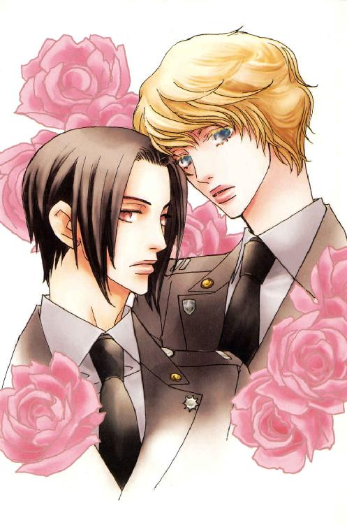
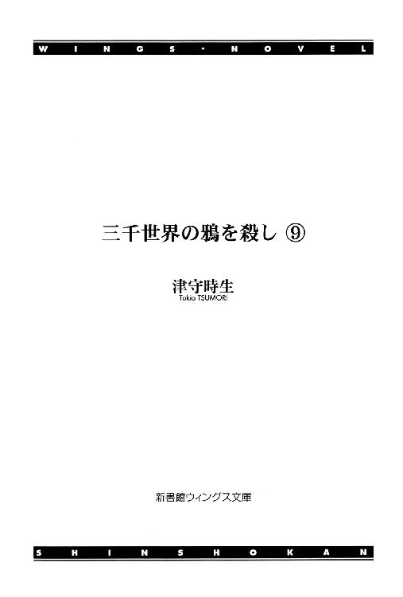
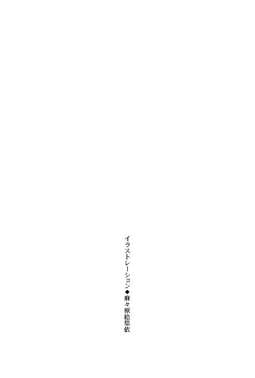
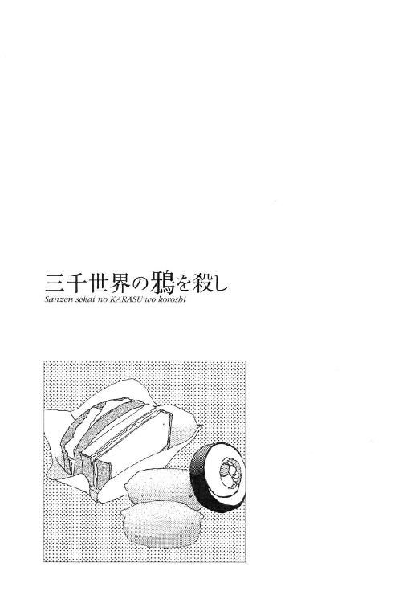
１
右側を下にして横たわる自分の左肩に、だれかの手が軽く置かれるのを感じた。
「起きなさい、カジャ。もう時間ですよ」
物静かな優しい口調の呼びかけ。
低く深みのあるその声は耳にも心地よく、聞くものに安心感を与える。
モーニング・コールには向かない声だなと思いつつ、半分眠ったまま答えた。
「んー......起きた......」
「私にそのセリフを信じて欲しければ、目を開けて言ってくださいね」
笑いを含んだ声が、寝穢い彼をからかう。
かがみこんだ肩から長い髪が流れ落ち、顔のそばに置いたカジャの手に触れる。
指を少し動かし、くせのない髪を軽く握り込んだカジャは、それでも眠りに執着した。
「......あと五分......」
「しようのないひとですね。本当にあと五分だけですよ」
苦笑いをしているのがわかる声音で言った相手は、カジャの白い巻き毛を優しくなでてその場を離れる。
手のひらに捕らえたはずの長い髪が、その動きとともに指のすき間をすり抜けていく。
不意に、今ここで相手を引き止めなければならないと思った。
行かせたら二度と自分のもとへ戻ってこない。
──ダッテ××××××ハ×××シマッタノダカラ。
理由を思い出せない悲しみに襲われて、目の奥が痛くなる。悲しみの核をなしている巨大な喪失感に泣きそうだった。
それなのにとても眠くて、離れていく相手を制止するどころか指一本動かせない。
──行カナイデクレ......。
胸の痛みにあえぎながら、眠りの淵に沈んでいく。
──嫌ダ、私ヲヒトリニシナイデクレ。まりりあーど......っ！
「ウラァ、朝だぞ！ とっとと起きやがれ、エロ親父がぁ」
離れた場所での怒鳴り声に目が覚め、カジャは手を突いて飛び起きる。
ソファの上だった。
アルコール中和剤が効いたおかげで二日酔いにもならず、自分がここで寝るに至った経緯もすぐに全部思い出せた。
──夢......？
とうの昔に死んだ人間に起こされるはずはないのだから夢としか思えないが、悲しみの残滓に胸の奥がうずく。
手のひらが記憶する髪の冷たくてなめらかな手ざわりは、妙に生々しかった。
カジャはよく似た感触の髪の持ち主をもうひとり知っている。
もしかして、自分は一度その男に起こされたのかもしれない。夢うつつの状態でさわった髪が、亡き人のそれとすり替わったのだとしたら──。
ソファに上体を起こして、いつまでも無意味なことにこだわっていると、居間から寝室に続くドアが開き長身の男が出てきた。
すでに上から下まで隙なく身支度を整えている部屋の持ち主は、カジャの視線に気づいて微笑みかける。
「ああ、自力で起きたのか。おはよう」
「おはよう......」
普通に応えたつもりでも寝起きのかすれ声になった。
目覚めてすぐ、素顔のこの男にさわやかな笑顔であいさつされて始まる一日というのは、かなりのラッキー・デイだと相手の中身を知っているカジャですら思う。
目にしたのが、この男と美形度ではひけを取らない友人サラディン・アラムートの笑顔だった場合、一日の始まりなのに不吉すぎて魔除けのお守りを探してしまうところだ。
銀河連邦宇宙軍の黒ずくめの通常軍装は、大抵の男を二割増しに格好よく見せるが、正真正銘だれもが見惚れる超絶美形のルシファード・オスカーシュタインが着用すると、兵士募集に絶大な威力を発揮しそうな美貌の軍神が出来上がる。
それがどうしてこれほど外見を裏切る性格に育ってしまったのか。しかも、いつの間にか周囲もその性格を好ましく思うようになるのだから不思議だった。
カジャが眠ってから大雑把に短く切った髪が端整な顔にワイルドな表情を加え、より男っぽくセクシーになっている。
その分、夢で見た友人の面影をルシファードの上に重ねるのは難しい。
髪も短い以上、やはりあれはすべてが夢だったのだと納得する。どうせ夢を見るなら自分はちゃんと目を開けて、包み込むように優しく温かな友人の笑顔を見たかった。
ルシファードは元気のないカジャのようすに軽く眉をひそめる。
だが、遅れて寝室を出てきたニコラルーンに背後から話しかけられ、そちらに関心がそれた。
「エロ親父だなんてあんまりじゃないか？ もう少し優しく起こしてくれてもいいだろ」
「マーベリック少佐殿。軍人がそのように軟弱な寝言を言うものではありません」
ルシファードは上級者の苦情を素っ気なく受け流し、部屋に設置された飲料ディスペンサーで飲み物を注文する。
「ルーシーったら冷た～い。ベッドの中ではあんなに優しかったのに～。朝になったらおはようのキスもしてくれないなんて、男としてマナー悪ぅ～い」
「そいつは一体なんのためのマナーだ？ 朝っぱらから気色の悪い悪ふざけするんじゃねえ。──ほら、紅茶」
ラフェール人はとりあえず抗議を中断し、差し出されたモーニング・ティーをおとなしく受け取った。
もうひとつのカップを手にしたルシファードは、ソファに歩み寄ると身をかがめ、コーヒーの入ったそれをカジャに差し出す。
その際、背中から長い髪が脇に流れた。前から見ると普通に短く切ったように見えたが、もともと通常の倍はあろうかという髪の量だったので、後ろ髪の大半は長いまま残したらしい。
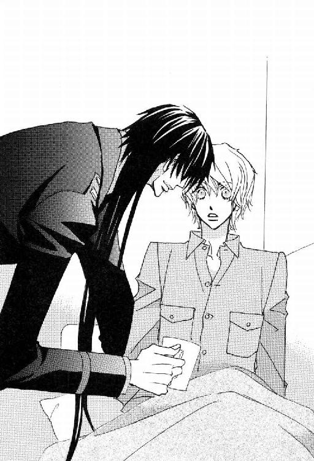
「......っ！」
カジャは眼前にすべり落ちてきたくせのない黒髪を目にし、胸の痛みを思い出してひるむ。
あれは本当に夢だったのか、それとも現実と混ざり合ったのか。
混乱したまま切なさばかりがつのる。そんな感傷に浸っている時ではないと思っても、気持ちが切り替えられない。
亡き友に似た端整な面立ちが間近に寄せられる。髪の色は同じでも目の色が違う。それだけで印象はずいぶん変わるのに、どうしてこんなに──。
「なにをするか、このバカ者ーっ！」
ソファの肘掛まで飛びのいたカジャは、真っ赤になってわめいた。
上体をかがめたままの姿勢で、男は平然と答える。
「おはようのキス」
「だれが貴様にそんなものをしてくれと頼んだ！」
「はーい、私が頼みましたぁ」と、紅茶のカップを手にしたラフェール人が、ほがらかに挙手した。
その笑顔がまた癇に触る。
「だったら、こんなくだらんマネはそこの色ボケ・ラフェール人にしてやればいいだろうっ」
「あははー。エロ親父とか色ボケとか、ずいぶんな言われようだねえ」
「ただの刺激だ刺激。まだ半分夢の中にいるような顔だったぞ。おかげで目が覚めただろ。デコピンされるほうがよかったか？ ──コーヒーは？」
「もらう。......ありがとう」
渋々礼を言ってカップを受け取った。
こんなデリカシーのない男の上に、繊細な気遣いをする優しい友人の面影を重ねた自分の勘違いぶりに腹が立つ。
ニコラルーンが机の上に広げられたノート・パソコンを眺めてたずねる。
「ルーシー。朝早くから仕事だなんて、君、あれからろくに寝なかったんじゃない？」
「回復できる程度には寝たよ。そんなことより、ふたりとも一度ニコルの部屋に戻って身支度してこい。士官食堂で朝食を取ろう」
年齢差を無視した相手のぞんざいな口調を気にもせず、ラフェール人はうなずく。
「そうだね。キム中尉はどうする？」
「寝かせておいてやれ。今日は非番だし、次は深夜勤務になる」
部隊の指揮官が不在の時には副官が代わって指揮を執るため、基本的にルシファードとライラの非番は別の日になる。
毛布をたたんだカジャは、空のカップを返しながら部屋の主に謝罪した。
「その......疲れているところに押しかけて迷惑をかけたな。すまなかった」
「どういたしまして。面白い経験だったぜ」
面白かったなどと言われて気にならないわけでもなかったが、穏やかに優しく微笑みかけられると意地を張る気が失せる。
「それじゃ支度したら、またここに来る」
ふたりは日勤の士官たちが出入りする姿が散見される廊下に出た。
カジャは隣を歩くラフェール人にさりげない口調で聞く。
「なぁ、ニコル。あの男、時々マリリアードに似ているような気がしないか？」
「えー？ ルシファードがぁ？ 単に髪が黒くて長いせいで、そう感じるんじゃない？ 王子はずっと上品で大人で優雅だったよ」
「もちろんそうなんだが、素顔で笑いかけられると雰囲気がなんとなく......」
「うーん。私は子供の時からルーシーを見ているんでね。よけいに王子と重ならないな。彼の父親のＯ２と王子は、兄弟かと思うほどそっくりだったから、そのせいだろう。だから、ルーシーと王子は血がつながっていると言えなくもないな」
少年の容姿にふさわしくそちらの方面には潔癖なカジャが顔をしかめた。
「それではＯ２の父親が、マリリアードの叔父ナヴァルフォールだったというウワサは事実なのか？」
「よく似たあの美貌と超能力。推測の域を出ないけれど、他人の空似と見なすのは苦しいよね。ただ当時を知る義父の話では、Ｏ２のご両親と王子の叔父上は親友だったし、Ｏ２の母親は下半身不随の女性だったそうだ。しかも電子頭脳制御の特殊な車椅子を、超能力で自在に操っていたとか」
「......なるほど。Ｏ２は母親の不義の息子というより、第三者の生殖細胞の提供を受けた人工授精児である可能性が高いな」
「提供する相手が異種族でもよかったんだから、遺伝性疾患の懸念より夫の生殖機能に問題があったんじゃないかなー？」
「自分たちが性格も能力も知っている親友に提供してもらったほうが、確かに安心できるし、より息子への愛情も増すというわけか。その頃なら人工子宮装置の利用制限も緩和されていたはずだ」
ニコラルーンは白氏の言葉にうなずきながら、同様の方法でこの世に生まれた自分と両親との関係についてちらりと考える。
滅亡しかけた種族を復活させるプロジェクトでは生殖細胞提供者の遺伝子を分析し、最良と思われる組み合わせを調べた上で新世代の子供たちを生み出した。
両親は別々の惑星に住んでいるラフェール人で、生殖細胞の提供当時すでに別種族の伴侶がいた。自分の子供の親になったもう一方の相手とはおそらく一面識もないだろう。
プロジェクトで生まれた子供たちは、希望すれば両親の情報を公開すると言われたが、ニコラルーンも含めて大半の子供たちは興味を示さなかった。
エンパスと呼ばれる弱い精神感応力を持つラフェール人は、もともと個々に断絶する肉親愛よりエンパス能力による同胞愛的な連帯感が強い。だからこそニコラルーンも一族の期待に応えられない自分に苦しむ。
だが、非公式にナヴァルフォールの息子と見なされているＯ２は、ラフェール人に対して同胞愛を抱くどころか、冷やかな憎しみとも言うべき嫌悪感を持っている。その息子のルシファードはラフェール人に興味そのものがない。
そんなふたりの顔の相似で、マリリアードとの関係を論じても空しいだけだった。
カジャは断じる。
「どちらにせよ、よくある事例だ」
「そうだね」
ふたりとも遺伝子工学や産婦人科は専門外だった。その話をどうしても子供が欲しい夫婦が選択する〝よくある事例〟のひとつと結論づけた。
ナヴァルフォールの遺伝子情報の一部を組み込まれたＯ２の容姿が、なまじオリジナルに似ていたため、遺伝子レベルから人間を設計するデザイナー・チャイルドではないかと疑うものはいなかった。
当時指導的立場にあった違法研究の関係者たちが、たったひとりをのぞいて死んだ今となっては、闇に消えた遠い過去の出来事だった。
そのたったひとりの生き残りであるアル＝ジャアファルが、相変わらず人間をもてあそぶおぞましい実験の素材としてルシファードに手を出すまでは──。
Ｏ２が周辺に深刻な精神汚染を引き起こすほど激怒した裏には、決して表立って語れない彼らの因縁がある。
違法研究の成果であっても、学長夫妻の息子として学都で育ったＯ２自身は、息子がされたような扱いは一度も受けなかった。
しかし、テレパシストの彼は学長夫妻やナヴァルフォールと、アル＝ジャアファル教授がまったく異なる内面の人間であると早くから見抜いていた。
教授もＯ２の告発を恐れて別の研究グループに移ったので、Ｏ２自身は蛇蝎のごとくきらっていた教授と早い段階で別れている。
その結果、同じ研究で生み出された自分の〝兄弟〟たちがどんな目に遭わされたのか、彼は知らない。
ナヴァルフォールたちは〝超人〟を生み出そうとし、そんな狂った叔父の負の遺産を闇に葬ったのがふたりのマリリアード──ＭＭとＦＭだった。巻き込まれた気の毒なロヴ・ジョナサンも一部は加担しているが、Ｏ２のために記憶を消されたので覚えていない。
現在のオスカーシュタイン家は各自全然違う状況ながら、アル＝ジャアファル教授とは深い因縁がある。
背後に隠された非常に複雑で昏い事情も知らず、ふたりの内科医は極めて簡単に判断を下した──が、真相はさらに単純だった。
ルシファードの母親は女性体のマリリアード・リリエンスール。息子が母親に似てもなんの不思議もない。
「ねえ、カジャ～。ルーシーが王子に似ているかどうかなんてレベルで気にしていないでさ、好きだって告白しちゃえば？」
「ななななな、なにを言い出すんだ、この馬鹿者がーっ！」
油断していたところへいきなり核心を突かれ、白氏は真っ赤になってわめく。
ラフェール人は人差し指を唇に押し当ててたしなめた。
「廊下では静かに。──相手はあの美貌と感性が反比例している超絶鈍感男なんだよ。黙っていたら一生気づかないほうに全財産を賭けてもいい。本来は他人にあまり構わない彼が、君には結構気を許しているみたいだし、告白したって逃げ出したりはしないと思う。ともかくあの鈍チンに意識させなきゃ、このまま永遠に平行線だからね」
「よけいなお世話だ。色ボケするにしても、場所と時間をわきまえる程度の常識もないのか」
カジャは精一杯の虚勢を張って冷たく言い捨てると、エレベーターのボタンを押す。
「ルシファードが相手の場合、素直になっちゃったもの勝ちだよ。君なら告白しても彼は絶対追い払ったりしない。保証するよ」
「あいつが私に構うのは、単にペットのウサギに似ているからだ。そんな相手になにを告白しろと言うんだ？」
平静を装って言った自分の言葉に傷つく。こんな話は続けたくないが、どう言えば自分の思いをうまくごまかせるのだろう。
ラフェール人は到着したエレベーターに白氏のあとから乗って、自分の部屋がある一階上のボタンを探す。
「ルーシーがそんなこだわりを持つこと自体、その他大勢とすごく大きな差があるんだよ。本人は全然自覚していないにしてもね。君が彼のある種のツボを刺激して、好感を持たれているのは間違いないって」
上のフロアにはすぐ到着し、ちょうど下に降りようと待っていた男性士官三人が、ワイシャツ姿という軽装のふたりに軽く目を見張った。
軍病院の名物内科医を知る男たちは、上着の兵科章や階級章がなくてもニザリ中佐に敬礼しようとする。答礼を面倒に感じたカジャは軽く手を振り、身振りで無用だと告げた。
再び廊下に出た彼らは話を続ける。
「ある種とは、どんなツボだ？」
「ルーシーの頭の中をそこまで理解できたら、とっくに私は発狂しているよ」
胡散臭そうなカジャの問いに対し、ラフェール人は真面目そのものの顔で答え、聞いた白氏も渋々認めざるを得ない。
「確かにあいつの飛躍する独特の発想に常人はついていけないな」
「私たちをあまり常人とは言わないと思うけどね。それでもルーシーよりは普通人の基準で思考しているよ」
「なんであれ、私のことは放っておいてくれ。こんなことを他人にあれこれ言われるのは実に不愉快だ。......おまえには面白いかもしれないが、耐えがたい屈辱だ」
うつむいて低くつぶやくカジャの肩に腕を回し、ニコラルーンが偽りではないとわかるように精神感応で言った。
『面白がってなんかいるもんか。さっきの君の精神波は、そばで感知するこっちまで切なくなったよ。だけどルーシー相手に意地を張っても無意味だってことくらい、もうわかっているだろう？』
「馴れ馴れしくさわるな、うっとうしい。──ずっとこういう風に生きてきたんだ。今さら生き方を変えられるものか」
邪険に肩から手を払われても、ラフェール人の唇には心からの優しい微笑みがあった。
「変わらないままなのはつらいけれど、変えようとするのもつらいからねえ。でも、そのうち君も否応なく変わるしかなくなるんだ。ルシファードとかかわるというのは、そういうことだから」
「ニコラルーン......」
見上げたカジャの手をそっと取り、慈悲深い天使の笑みを浮かべた一見美青年はうなずく。
「もはや仇敵同士に等しい白氏とラフェール人なのに、君と私のあいだには麗しい友愛が芽生えた。これを変化と呼ばずしてなんと呼ぶのだろう」
「新興宗教の勧誘じみた空々しいセリフを吐くな、エセ天使が。だから貴様は最後の最後で信用ならんのだ」
きつい言葉で非難された相手は楽しそうに笑う。
まともに口にするには恥ずかしい気持ちを、こんな風に伝えるのが彼のやり方なのだと、カジャにもなんとなくわかった。
素直に生きるには、他者の圧力にも曲がらない心の強さがいる。自分もニコラルーンも我を通せない弱さがあった。
副官に野生のけもの扱いされている黒髪の大尉は不羈の魂を持つ。
そして、サラディン・アラムートも。
虚勢などではない強さとそれに裏打ちされた自信に満ちた外科医には、自分の弱さを直視したくなくて肝心の時に逃げてしまうものの気持ちは理解できないだろう。
ずっとずっと逃げ続けて、銀河系のこんな端の惑星までたどりついてしまった。
自分で変われないなら、だれかに否応なく変えて欲しい。そう願うのも弱い人間のずるさだろうか──。
外側だけは若い内科医コンビがティーン・エイジャーの乙女のような会話を交わしている頃、クラス一ハンサムな男子生徒ならぬ基地一美貌の男性士官は荷造りをしていた。
急ぎの仕事をかたづけたまま机の上に広げていたコンピュータ機器をキャリング・ケースに納め、必要なディスクを保管箱から手早く選び出す。
ひとつずつは大した重さではないが、これから別の場所から調達してくる荷物を考えると、少しでも軽くしたいところだった。
「......やばかった」
ひとりごちた自分の声に手を止め、わずかにうなだれた彼は珍しくも反省のポーズ。
亡き王子が関係するとナーバスになるのを知っていた。
なのにカジャをただ起こすだけではつまらないからと、ふざけてマリリアードの真似をして、白氏をまた泣かせるところだった。
ルシファードは六歳まで女性体マリリアードを母親として一緒に暮らし、その後も十五歳までは、時折フリーダムと意識の交換をして表面に出てきたマリリアードとの交流があった。真似をする手本には困らない。
加えてカジャが本能的に気づいているように、血のつながりは本人ですら予想外の部分に相似となって現れる。
驚いて飛び起きる姿を期待した悪ふざけだったが、カジャは大きなオレンジ色の目を潤ませ途方に暮れた顔をした。
弱々しいそのようすを思い出すたび、なけなしの良心がうずく。
相手が強かろうが弱かろうが、他人をいじめるのは大好きという男を父親に持ったルシファードは、物心ついた頃から弱い者いじめは罪悪であると母親に厳しく教えこまれた。
敵なら子供でも容赦しない非情な面は持つにせよ、母のその教えは原則遵守してきた彼だった。それでも他人との精神構造の違いはいかんともしがたい。
カジャが泣くと、どうフォローしていいのか見当もつかなくて大いに困る。
精神感応系の超能力者らしく繊細な内面と少年のままで時間を止めた外見があいまって、百五十年も生きてきた大人の男だという印象が薄い。
白氏イコール敵という法則が当てはまるうちは警戒したが、今ではすっかり親しい友人のひとりになって、悪い意味でこちらにも気のゆるみがあった。
以前父親が警告したように、自分は親しいものも傷つける怪物なのだと、改めて自戒する。
超能力の暴走は悪いが、無神経な暴言ならいいというはずはない。
──それにしても......。
親友だったＯ２を筆頭にして、マリリアード・リリエンスールが多くの人間に与えた影響の大きさと、人々の心に今も残る呪縛じみた感情を思う。
──マリリアードも気の毒～。すんげー、うっとーしかっただろうなー。一度死んでマジ正解。親父ひとりでも持てあますのに、全員の心のケアなんぞできるかっつーの。
そう考えるルシファードは、ひとでなしの名をほしいままにする父親と実に内面のよく似た鬼畜息子だった。
その日の朝、需品科の兵士たちは倉庫から事務机とＯＡ用のイス、コンピュータの周辺機器、そのほかソファなどを車に積み込んで本部ビルに向かった。
裏口に車を乗り付けて梱包された荷物を降ろし、業務用エレベーターを使って五階まで運ぶ。あらかじめ決められた手順に従い、手際よく作業を進めていく。
何事にも倹約をモットーにする貧乏基地のため、倉庫の在庫も大半が使い回しの中古品だった。人員の増減で机の引き取りや追加の要請は時々あるものの、今回のように部屋全部の備品を新規に搬入するのはめずらしい。
なにか特別な目的で作業をする部署が新たに設置されたのだと容易に推測できたが、彼らは興味を持たなかった。
指定された部屋の前に最初の荷物を置いた時、ちょうど仕事をすませた清掃業者が、軍服の右襟に輸送科の兵科章をつけた少尉から伝票に確認のサインをもらっているところだった。
搬入を指揮する需品科の軍曹が、業者と入れ替わりに少尉へ話しかける。
「マコト・ミツガシラ少尉殿ですか？ 需品科よりご指定の物品の納入および設置にまいりました」
「ご苦労。この配置図通りに置いてくれ」
「お預かりいたします。──こちらが納品書です。搬入を確認の上、ご署名をお願いいたします」
軍曹は青年将校からプリントアウトされた二枚の配置図を受け取り、荷物をかかえてエレベーターと部屋の前を往復する部下たちのもとに戻った。
入ってすぐの部屋にソファのセットを置き、奥の部屋にすべての事務機器と机、ＯＡ用のイスを並べるようになっている。手前は完全に休憩室として扱われ、すべての作業を行なうのは奥の部屋だった。
軍曹は手早く梱包を解いていく部下にあれこれと指図する。その最中、奥の部屋に入るドアが改造されていることに気づいた。
武器や備品の倉庫ならともかく、普通の部屋のドアをＩＤカードを使った認証システムでの開閉式にするとは穏やかではない。
需品科の軍曹は、メカ・ケルベロスという仇名で女性兵士たちには有名なミツガシラ少尉を知らなかったが、年若い外見に似合わぬ落ち着いた物腰とクールな表情を目にし、相当な切れ者だという印象を抱いた。
この輸送科の少尉が中心となって、機密保持が重要視されるなにかのプロジェクトを立ち上げたのだろう。
平和な日常の続く退屈な基地でも、どこかで小さな機密くらいは生まれる。それを知った軍曹はなんとなく愉快になった。
短時間で作業を終えた部下たちが不要になった梱包材をまとめていると、軍と契約している民間業者が飲料ディスペンサーの設置にやってきた。
ミツガシラ少尉はねぎらいの言葉をかけて、署名ずみの書類を軍曹に手渡す。
携帯端末の呼び出し音が鳴り、それに応答した少尉の言葉が去りかけた軍曹の耳に入る。
「──イエス・サー。飲料ディスペンサーの設置と調整を残すのみです。十分くらいで終了するかと......」
進行中の秘密プロジェクトのリーダーは、どうやら別にいるらしい。好奇心がうずかないでもなかったが、あえて自分を抑える。
軍という組織が個人に対し、どれほど冷酷になれるものか、民間人よりはるかに知っているつもりだった。いくら平和ボケした基地でも、自分の管轄外のことに首を突っ込んで機密を探るような兵士に寛大なはずはない。
この場ですべてを忘れることに決めた軍曹は、足を止めずに書類をはさんだボードを小脇にかかえ直し、その部屋から立ち去った。
新たに現れた業者も、多くの軍事施設に出入りするだけによけいな詮索をするそぶりは一切見せない。ユニットの設置から試運転など一連の作業をすませたのち、愛想よくサインをもらって出ていった。
ひとり残されたミツガシラ少尉は、部屋のすみにまとめて置いてあった私物のバッグを奥の部屋に運び込む。
中に納めたノート・パソコンやデータ・アクセサリを取り出し、自分の机と決めた場所に作業しやすいレイアウトで次々と並べていく。
廊下側のドアが開き、バッグつきのカートを引いた通信科のボビー・ヘインズ軍曹が入ってきた。
デスクワークの任務にもかかわらず迷彩服を着ているのは、まだ完治していない骨折部分に少しでも負担をかけたくないのだろう。治療用コルセットの上にワイシャツと制服の上着を着用すると、かなり窮屈になる。
休憩室まで迎えに出た顔見知りの将校に対し、ヘインズ軍曹はややゆっくりした動作で敬礼した。
「おはようございます、少尉殿」
「おはよう、軍曹。ケガの具合はどうだ？」
「重い物を持ったり、急な動作をしなければさほど気になりません。念のために痛み止めはもらってきました。ドクターからは頻繁に休憩を取るよう注意されています」
「了解した、留意する。机に中の荷物を全部出しておくからカートを貸したまえ。君は入り口の認証システムにＩＤカードを入れて、任意の暗証番号を登録するように」
「アイ・サー。お気遣いありがとうございます」
軍曹のバッグの中には、マコトが持ち込んだのとほとんど同じ内容の私物が入っていた。入院中の軍病院から一度部屋に戻り、愛用のパソコンを取ってきたらしい。今回の任務では、各自が使いやすくカスタマイズしたパソコンを持ち寄るように言い渡されている。
健康な時は苦にならない重さでも、骨折した上に内臓を痛めた状態でかがみながら取り出すのはつらい。
電脳戦においてボビー・ヘインズ軍曹は貴重な戦力だった。体への負担は極力減らしたい。
再び扉が開き、今度こそこのプロジェクトの指揮官かと思って顧みたマコトは、見事な巻き毛のハニー・ブロンドを目にして心中で舌打ちする。
通信科の兵士たちが特殊任務で電脳戦を行なう際、協力者の候補にあげかけた三人目のエキスパートがパトリック・ラッセル中尉だった。
ラッセル中尉のハッカーとしての技量は、基地内のコンピュータ・マニアのあいだでも評価にバラつきがある。セキュリティが厳しいので有名な大企業のホスト・コンピュータに何度も侵入するなど腕はいいのだが、極秘情報の読み取りやデータ改竄などをするでもなく、すぐに逃げ出してしまう。
結果的に大したことはなにもできない彼を〝臆病者〟とさげすむものもいれば、侵入方法を教えてもらいたいがために高く評価する連中もいる。
ラッセル中尉を度胸がないくせに功名心は人一倍ある人間だと見るマコトの評価は、前者に属した。当然、好感は持っていない。
この重大な任務に個人的感情を持ち込んではならないと自分をいましめ、相手の前に進み出て敬礼する。
「さきほどご連絡いたしましたマコト・ミツガシラ少尉であります」
「よろしく、少尉。君からの連絡を受けてこうしてきたけれど、このプロジェクトのチーフは......まだ来ていないの？」
「申しわけありません。さきほどこちらに向かっていると連絡がありましたので、もうすぐ到着されると思います」
「だれ？ もったいぶらずに教えてよ」
パトリックは自慢の巻き毛を指にからませてたずねる。渦を巻く金髪と愛らしい美貌から、軍服の天使などと一部でもてはやされている中尉は、言葉遣いもその顔立ちにふさわしく甘ったれたものだった。
マコトには聞き苦しいことこの上ないが、自分より上級者なので注意できない。
これでルシファードより三つ下の二十四歳だと言われても、だれが信じるだろう。
それに相対するマコトは二十三歳。笑うと十六、七歳に見える童顔だが、愛敬が売りのパトリックとは逆にかなりの硬派だった。
優秀な技術将校の彼は部下たちの信頼も厚く、仕事場での冷静沈着な態度から〝メカ・ケルベロス〟というクールな仇名がついている。
いかにも口が軽そうな相手が集合前に周囲へ言いふらすことを懸念し、連絡した時はチーフ名をあえて伏せておいた。
そろそろ副司令官のラクロワ中佐が自分やラッセル中尉の上官たちを呼び出し、臨時の配属替えの話をしている頃でもあり、口にしても差し支えなかろうとマコトも判断する。
彼が口を開きかけた時、プロジェクトのチーフが両手にかなりの量の荷物を持って現れた。
右肩から背中にかけて半ば背負う形で大きなものをひとつ、右手と左手にふたつずつバッグをさげている。どのバッグも荷物の重さで変形し、耐荷重量限度ギリギリといったようすに見えた。
スクリーン・グラスをかけた長身の男は室内をひとわたり見回したのち、ミツガシラ少尉に微笑みかける。
「朝早くから多くの雑用を押しつけて悪かったな」
「私もプロジェクトの一員である以上、そのようなお気遣いは無用に願います。大尉殿が前面に出られては、あっという間に基地中の人間の知るところとなり、到底極秘プロジェクトなど遂行できません」
相手の男らしくもさわやかな笑顔に見惚れかけたマコトは、それを悟られぬよう表情を引きしめ、部下に徹した態度で応じた。
ルシファード・オスカーシュタインの美貌には慣れたつもりだったが、膝裏まであった長い黒髪を切ったせいか、雰囲気が今までとだいぶ変わっている。
くせのない美しい黒髪に惜し気もなくハサミを入れて段カットにした髪形は、毛先が奔放にあちこちはねて野性的だった。同性の目から見てもセクシーだと思う。
そして、頭の固いマッチョな上官たちは、今度も間違いなくクレームをつけるに違いない。
生きた美術品であるこの男を坊主頭にすべきだと思っているのだから、長い軍隊生活がいかに人間の美意識まで歪めてしまうかわかろうものだ。
「大尉殿の机まで荷物をお運びします」
「やめておけ。重いぞ」
「重い荷物が持てないなどと言っていたら、輸送科の将校は勤まりません」
明るく答えたマコトはルシファードの右手からふたつのバッグを譲り受け、予想をはるかに超える重さに驚く。
両手に分けて受け取ったので、取り落とす失態はまぬがれたものの、こんな重さのものを平然と片手で持ってきた男の膂力に畏怖さえ覚えた。
「信じられなーいっ！」
と、叫んだのはマコトではなく、今までずっと上官から無視され続けてきたパトリック・ラッセル中尉だった。しかもその言葉は無視に抗議するものではなかった。
胸の前で祈りの形に両手を組んだ中尉は、頰を紅潮させ感極まったように言う。
「チーフがオスカーシュタイン大尉殿だったなんて......っ！ ボク......ボク、大尉殿のお役に立てるよう一生懸命がんばりますっ！」
どことなく女学生じみた、けなげさをアピールするクサイ演技にマコトは鼻白む。
そもそも任務遂行に励むのは兵士として当然のことで、一生懸命がんばるなどと上官に訴えるのは甘えた物言いだった。パトリックが保護欲をかきたてる愛らしい外見を武器にして、マッチョイズムの軍隊でもうまく世渡りしてきたのは想像にかたくない。
自分も〝お兄さま〟などとルシファードに甘えている手前、パトリックの態度を非難できる立場ではないが──。
「マコ。まさかとは思うが、どうしてコイツがここにいるんだ？」
ルシファードは横柄にあごで相手を示し、臨時の副官に決めた部下へたずねた。
本人を前にして、そのまさかですと答えるわけにはいかないマコトが礼儀正しく返す。
「ラッセル中尉殿が今朝お話ししたプロジェクト三人目のメンバーです」
「なんだと～ぉ？ いらん！ 即刻返品。トーマスくんトコに帰れ帰れ」
片手で犬を追い払うような仕草までつく。
そばにいるマコトが快感を覚えたほど邪険な物言いだった。
「そんなっ！ あんまりな......あんなりなおっしゃりようですっ。そりゃあボクはこんな外見ですから、頭悪そうに誤解されちゃうのも仕方ないかなって思いますけど......。でも、こんな外見でも今までちゃんとやってこられたのは、逆に腕力とは別の高い能力があるからだってことの証明なんです。大尉殿もボクの仕事ぶりを見ればきっと満足してくださるはずです。どうか一生のお願いです。ボクにチャンスを与えてください」
「いらんっつの。視界でブリブリやられると、こっちのモチベーションが下がる」
軽く頭を傾けること十五度。必殺のカワイ子ちゃんポーズを決めた相手の哀願をにべもなくはねつけたルシファードは、右手を伸ばしてパトリックの頰をつまむと正常な位置に引き戻す。
なりゆきを見守っていたマコトとヘインズ軍曹は、こらえる余裕もなく吹き出してしまう。
「お願い！ 昨日の今日でボクがあなたに突き返されちゃったら、シュナイザー大尉殿が軍をやめちゃう！ シュナイザー大尉殿はそれだけ思い詰めているんです。ボクのせいでそんなコトになるのは耐えられませんっ」
「......しようがねえ。今回はトマちゃんの顔を立ててやる」
ルシファードは短く舌打ちをして言った。
大きな青い双眸に涙を浮かべ悲痛に訴えるパトリックの態度には、日常的な演技とは違う本気の必死さがあった。
副官の実力も確かめずに追い返し、トーマス・シュナイザーの男のメンツを潰すわけにはいかない。
「あ、ありがとうございます......っ！」
「礼を言うのはまだ早い。使いものにならんと判断したら容赦なく追い出すからな。ともかく時間が惜しい。認証装置にさっさと登録しろ」
「アイ・サー」
軍隊らしからぬ珍妙なやり取りを見物していたふたりの部下も、あわてて準備のために奥の部屋へ入る。
チーフのあとに続いたパトリックは、全部切ったように見えたルシファードの髪がうしろだけ長く残っているのに気づいた。
「あれー？ 大尉殿の髪の毛、うしろのほうは全然切らずに長いままなんですか？」
「そうだ。これだけあれば必要な時に充分間に合う」
「必要って、なにに？」
「やかましい。機会があればわかる。野郎の髪型なんぞにいちいちこだわるな」
「そんな邪険にしなくたってぇ。大尉殿はそんなにボクのこと、キライなんですか？」
背後から涙声でなじられたルシファードは額に手を当てた。目的が厳然としてありながら、事態が意に染まぬ方向へとずれていく感覚にデジャヴがある。
後方支援に回った特別任務の時、ライラたち実行部隊が出発したあとまで、なんだかんだと任務以外のことで時間を取られた。
あの時のメンバーが今回もふたりいる上にブレイン・ギアがない。能率が落ちて足手まといが増え、しかもあの悪夢が再現されるなどという最悪の事態は勘弁されたかった。
「パトリック・ラッセル。男のウソ泣きは気色悪いからやめろ！ 俺の好き嫌いで貴様をここに呼んだんじゃねえ。任務だ任務！ 大事なシュナイザー大尉の株を上げたきゃ、一発有能なところを見せやがれ」
「がんばりますっ！ お兄さまって男らしくてステキ......」
「だれがお兄さまだっ！」と、叫んだのはルシファードだけではなかった。
どこまでもパトリックに対してそっけないルシファードの態度に溜飲を下げていたマコトだったが、お兄さまという単語だけは絶対聞き捨てできない。
「オスカーシュタイン大尉殿は私のお兄さまだっ。馴れ馴れしく呼びかけるなっ。そもそも、あなたにはシュナイザー大尉殿がいるだろう！ 尻軽っ」
「なんだって！ そっちこそ出しゃばるなっ、ちんくしゃ。大尉殿にはボクのように華麗な美貌が似合うんだ！」
美少年対決再び。ただし今度はカジャ・ニザリが相手だった時と異なり、かなり低レベルの口ゲンカとなる。
──絶対この基地にはなにかの呪いがかかっているぞ。そうでなけりゃ、極秘プロジェクトのメンバーがこんなアホのはずねえ。
実年齢より数歳若く見えるふたりが派手に言い争いを続ける中、ルシファードは虚空に視線を向けて現実逃避する。
無関係なボビー・ヘインズ軍曹は、飼い主の寵を争う愛玩犬じみた騒々しいケンカをニヤニヤ笑って見ている。力ない足取りで脇を通り過ぎる上官に声をかけた。
「モテる男はつらいっスねえ」
「......うるせえ。うらやましけりゃ両方持っていけ。遠慮はいらんぞ」
「究極の選択と承知でお尋ねしますけど、むくつけき大男たちに兄貴と慕われるのと、小動物系になつかれるのと、どっちがイヤですか？」
「その質問は彼女の代行か？」
パープル・ヘヴンの編集委員を婚約者に持つ通信科の軍曹は、逆に問い返されて照れ笑いをする。彼女のためにした盗聴で目の前の男に肋骨を折られたのだが、懲りたようすもなく幸せそうだった。
「シェリルだったら、どっちがお好きですかと聞くでしょうがね」
「殴ってストレスを発散できるだけ、筋肉ダルマどものほうがマシだ」
「お気持ちはよくわかります、サー。──あれ？ それ、新しいブレイン・ギアですか？ なんだか普通の戦闘機用ヘルメットに見えるんですけど」
ルシファードは右肩に背負っていたバッグを机の上に置き、中からフライト・ヘルメットを取り出す。
「見ての通りの代物だ。シミュレーション・ルームから借りてきた。こいつが座席の下に取り付けられている変換器。外すのに手間取って、到着が遅くなった」
「こんな物をどうするんですか？ 確かにパイロットの脳波を読み取って、操縦の補助をコンピュータにさせるシステムですがね。原始的なブレイン・ギアと言えないこともないでしょう。でも所詮、存在自体が指令塔になるブレイン・ギアの代わりにはなりっこないワケで──」
「ところがなるんだよ、俺に限った特殊な事情でな。さすがにブレイン・ギアの完全駆動レベルは無理でも、ノーマル・モード程度の仕事はできる」
変換器は相当な重量がある上、安定した場所に設置することが望ましいため、緩衝材入りのバッグを机の下の床に敷き、そこに薄い箱型の変換器を横位置で置く。
続いて三台のノート・パソコンを使いやすいレイアウトで並べ、それぞれのシールドをひとつのハブにつないだ。
その光景はヘインズ軍曹が特別任務の時に見たものとほとんど変わらない。
ひととおり自分のＯＡ用デスクで準備を終え、残ったバッグを持って移動する。
ドア側の壁に向かって設置された普通の事務机に箱型の装置を置き、続いて取り出した極薄のパネル四枚を手早くつなぎ合わせ固定した。組み立て式のフレームをはめて補強したのち、装置についていたスタンドを立ててパネルを接続する。
「ディスプレイ・パネルを使ったメイン・スクリーンの代用品ですか。面白い使い方ですね」
「もう少し大きくしたかったが、三列に組み合わせると横がドアの前まではみ出し、今度は出入りの邪魔になっちまうからな」
上官と彼の作業を興味深く見守っていた軍曹の会話を耳にして、ずっと口論していた若いふたりが顧みた。
それを頃合いと判断したルシファードが命じる。
「五分で準備をしろ。任務を説明する」
「アイ・サー」
荷物を出してもいないパトリックはあわてた。急いで移動する彼のバッグがヘインズ軍曹のカートにぶつかり、ちょうど移動しかけていた軍曹の足元にそれが倒れる。
踏み出しかけていた足の爪先がカートにひっかかった軍曹は、バランスを崩して近くの机に手をつく。転倒はまぬがれたもののイスの背もたれで骨折箇所を強打した。
低くうめいたきり、その場にうずくまってしまう。
「え？ なに？ そんなに痛かった？」
「どいてください」
狼狽するパトリックを押しのけてかがみこんだマコトは、蒼白な顔を歪め無言で苦痛に耐えている軍曹に話しかけた。
「痛み止めはカートの中か？」
「待て」
カートに手を伸ばすマコトを制止し、ルシファードが軍曹の肩に軽く手を置く。
美少年モドキふたりは、彼がなにを始める気かといぶかしげな表情で見守ったが、なにかをしたようすもないのに軍曹が驚いて顔を上げる。
「大尉殿、今なにを──......！」
「特別任務の時にこっそり治してやるつもりだったが、ドクター・アラムートが付き添いでくるという話になって、ややこしくなっちまった。婚約者の彼女には絶対言うんじゃねえぞ」
ルシファードは外科主任と退院の交渉をしていたあの時、周囲の無用な関心を引くまいとして〝苦痛のほうはこちらで善処する〟とあいまいに言った。
苦痛を根性で克服しろという軍隊の悪しきマッチョイズムをよく知るサラディンが、当然ながらそんな言葉に納得するはずもない。
不運なヘインズ軍曹は、即座にケガを治してもらうチャンスを逃したのみならず、ドクター・サイコの操縦するＶＴＯＬに乗せられるという恐怖体験までオマケについた。
「なに？ なになになにっ？ なにが起こったの？」
ひたすら〝なに〟を連発する金髪天使の問いは、全員から無視される。そんなところをトーマス・シュナイダーは可愛いと思ったのだろうが、同性に思考停止の甘えを許すメンバーはいなかった。
メカ・ケルベロスという仇名の技術将校はしばし考えた末、慎重に自分の推測を口にした。
「治癒能力......ですか？」
「そうだ。自然に反する治癒の促進は組織に無理をさせる。だから必要に迫られた場合に限っている。しかも俺も消耗するんでな」
さんざんその能力で自分のケガを治してきた男は、平然と大ウソをつく。
そんな力があることを広く知られて治療希望者が殺到してはたまらない。
基地内には無料もしくは破格の安い治療費で、病気やケガを治してくれる軍病院がある。高額の治療費負担を強いられる民間人より、はるかに恵まれた環境なのに、さらに苦痛もなく即座に治りたいというのは、日夜激務をこなして患者の治療に当たる医師やナースたちに失礼な話だった。
「ありがとうございました」
「礼はいい。任務のためだ。──俺は五分で準備をしろと言ったぞ」
軍曹は苦痛から解放されて顔色も戻った。
しつこく質問しそうなふたりを牽制するつもりで言ったのだが、三人の部下全員が急いで机に向かう。
軍隊では何事も迅速な行動が要求される。パソコン・マニアたちは慣れた作業なだけに手早く準備を整えた。
２
すでに荷物を出してあったマコトと軍曹に遅れること二十秒未満で、パトリック・ラッセルもチーフに敬礼して報告する。
「ラッセル中尉、準備完了いたしました。──あの～、もうひとつ机があるってコトは、まだほかにもメンバーがいるってコトですか？」
強面で鳴らすバンカー中佐ならムダ口をたたくなと一喝するところだったが、もはや悟りを開いたルシファードは女性を相手にするつもりでパトリックを扱うことに決めた。
ワルターの副官をしているマリアのような、ライラとは正反対の少女タイプだと思えばイラつかずにすむ。
「俺の部下ではなくオブザーバー的立場から協力してくれる。人間相手の調査担当だ。そのうち結果を報告にくるだろう。その時に紹介する」
ニコラルーンとは情報をすべて共有しているので、打ち合わせの必要を感じなかった。Ｏ２に鍛えられた情報将校の彼は、ルシファードの指示を仰がなくてもなにを調べるべきか自分で判断できる。
一台のパソコンに資料のディスクを入れ、メイン・スクリーン代わりのディスプレイ画面に映し出す。信号を盗聴されないとも限らないので、この室内の作業でコードレスは全面禁止にしている。
簡易盗聴防止装置を壁に貼り付けて範囲を限定し、外部からの盗聴を防ぐ措置は取ってあるが、最初からそれを想定して作られた部屋ではないため完璧ではない。
机の周囲に走るシールドを引っかけないよう動作に注意を払うのが多少わずらわしいが、機密保持は最優先事項だった。
「最初に言っておく。すでに敵のスパイが基地にまぎれこんでいる。それがだれか、潜入しているのが何人かも不明だ。従ってどれほど親しい友人知人でも、このプロジェクトで得た情報は一切口外しないよう命じる」
特別任務で所属不明のパワード・スーツを見ているマコトとヘインズ軍曹は、ルシファードの発言も予想の範囲内だった。
パトリック・ラッセルだけは基地での平和な日々を信じて疑わなかっただけに愕然とし、感じたショックを隠さない。それでもさすがに上官の説明を聞く態度は守った。
「惑星改造時から計画に着手していた敵と違い、すでにこちらはかなりおくれを取っている。多くの情報を得て統合分析し、早急に敵の計画の全体像を把握しなければならない。そして、宇宙軍本部を動かすには証拠が必要だ。──今から、こちらが今まで得た情報をもとにして、惑星バーミリオンで進行中とおぼしき敵組織の計画を説明する」
ルシファードは自分のパソコンに資料を記録したディスクを入れ、メイン・スクリーン代わりのパネル・ディスプレイに映し出す。
爆破された宇宙港の旅客ターミナル・ロビーの無残な映像をメインにして、右上の四角い窓に手配写真らしい男女のバストショット。爆破犯人としてニュース映像で流された顔なので、三人の部下たちも見たことがある。
「一番最初はこのふたり。銀河連邦警察の手配レベル３、宗教テロリストで爆発物専門家のコルドハと手配レベル５のリビューモフ。この男は営利目的の誘拐に殺人、人身売買そのほか多数という思想性のかけらもない犯罪者だ。宇宙港爆破は逮捕されたコルドハの自爆であって、このふたりが宇宙港のロビーにいた目的ではない。搭乗予定はなかったことから、到着した客に用があったと思われる。単なる出迎えか誘拐。リビューモフの華麗な犯罪歴を考慮すると後者の線が有力だ。犯罪を犯した動機も手法も異なり、なにひとつ接点がないように思えるふたりが連れ立っていたことを都市警察は重要視したようだ。被害者になった可能性のある人物は〝宗教関係に影響力のある金持ち〟ではあるまいか？ だが、乗客名簿に両方の条件を満たす人物はいなかった。──この件はここで保留」
言葉を切ったルシファードは光学式キーボードに触れて、ディスプレイの資料画面を切り替える。
次に表示されたのが、流民街に現れたパワード・スーツ二機の映像を背景とした別の男女のバスト・ショット。
所属不明のパワード・スーツについては、ニュースでもだいぶ取り上げられたが、こちらも都市警察の捜査は行き詰まり、逃亡したパイロットの逮捕といったその後の進展はない。特別任務の関係者であるマコトと軍曹だが、後方支援だったために男女が何者なのか知らなかった。
「二番目はこの基地の初出動となった事件。まず都市警察が把握している表側を説明する。男は貿易商のパブロ・エリオンド。ほかの惑星でまともな輸入取り引きもしつつ、陰で新種の麻薬を仕入れてはバーミリオン星で売っていた。こいつが宇宙港近くのハイウェイで、麻薬の取り引きルート横取りをもくろむイエロー・タウン・マフィアに拉致されたことが事件の発端だ。家族は都市警察に通報したあとエリオンドの裏稼業を知って仰天し、一族の有力者に泣きついた。一族のコネクションは宇宙軍ヴァンダイク方面軍指令本部までたどりつき、わが基地初出動となる特別任務を俺の中隊が命じられたわけだ」
「大人って汚いっ！」
間髪を入れず茶化したのはヘインズ軍曹。
前もって裏側もあるとほのめかした指揮官は、不謹慎な部下のおちゃめな態度ににやりとし、本気でそう思った若い将校たちは真面目な面持ちでうなずく。
「犯人が人質を連れてたてこもったビルは、都市警察に包囲されていた。こちらは都市警察の動きを抑えつつビルに突入し、犯人たちと交戦後人質を無事救出。普通ならそこでハッピー・エンドになるはずだったのに、突如現れた所属不明のＶＴＯＬに軍の輸送機と警察のＶＴＯＬが撃墜され、事態は予想もしなかった方向に向かった。所属不明機から降りてきた傭兵部隊を率いていたのがこの女だ。通称〝血まみれ〟レス、種族の絶滅宣言が出されている青鱗人の生き残りだ。銀河連邦警察の手配レベル２という殺人狂の傭兵で──」
ルシファードは私情をまじえず、無表情に淡々と説明を続ける。
副官のライラがこの場に立ち会っていたら、見事な公私の切り替えに感心しただろう。
日頃は感情の強弱に乏しい彼が、ことレスに関しては毎回極めて強い嫌悪感と畏怖を示す。レスにはそれだけの実力と存在感があった。
もっともレスの問題に限らず、この基地に着任してからのルシファードは、以前よりずいぶん感情面で豊かな反応を見せるようになった。それに一役買っているのが、過激なホモ・ポルノ小説を売りにした雑誌パープル・ヘヴンだというあたりは、副官に恥ばかりかかせる愉快な超絶美形の面目躍如でもある。
「──戦闘用に改造されたパワード・スーツは、惑星開発時に使用され放置されていたものの再利用品だという、かなり強引な見方もできる。だが、所属不明のＶＴＯＬをデータで分析すると、連邦宇宙軍最新鋭機Ｖ５ボレアスであることが判明した」
「その持ち主は、ウチの基地よりお金持ちですね」
突っ込みどころの違うパトリックをマコトは冷たく一瞥し、
「持ち主の特定以前に、その最新鋭機をどうやってバーミリオン星に搬入できたのかが問題でしょう。改造されたパワード・スーツ用の武器もです。バーミリオン星の宇宙港は、現在わが基地の管理下にあるひとつしか存在していません。惑星内ならともかく、惑星外からの密輸入は不可能です」
上官はうなずき、残りを追加していく。
「加えてレーザー砲を装備した攻撃衛星をいくつも作り、衛星軌道上に配備したのはだれか。マフィアや傭兵たちも最新の武器を装備していた。部品に分解して持ち込むのも難しい。傭兵の雇主がだれかという謎もある。この事件は、表側だけでもかなり大きな謎がいくつもある。──なんだ？」
マコト・ミツガシラが小さく手を挙げ、裏側の話に移ろうとする上官を止める。
「流民街のマフィアどもは今まで隠し持っていた最新の武器を持ち出してまで、売人を渡そうとしませんでした。今後は都市警察だけではなく、首都の治安維持を名目に軍までマフィアの掃討に加わる可能性が生じます。そんな危険を冒すほど、バーミリオン星での麻薬の利益が大きいとは到底思えません」
「君の疑問はもっともだ。この一件に関しては裏の事情がある。それを話しても疑問の答えにはならないどころか、より謎は深まるばかりだが、とりあえず聞け」
たとえ将校でも歯車の一つに過ぎない。その作戦に参加していても、マコトが知っているのは自分の見聞きできた一面だけだった。それが命がけの作戦だったとしても、本来は一兵士に真相を知る機会などないし、不服を唱える権利もない。
「パブロ・エリオンドの扱っていた麻薬──というより、法的禁止薬物ではあるが快楽ではなく暴力犯罪に利用されるタイプの薬だ。ＵＳＲＡ、通称バーニングと呼ばれる即効筋肉強化剤で、銀河連邦宇宙軍の採用直後に脳内麻薬系の薬を常用する人間が併用すると、見境なく人間を襲って殺す怪物に変貌することが判明した。服用した人間の人格は破壊され知能も低下し、外見も二度と人間の姿には戻れない。軍と製薬会社は総力を上げてバーニングを回収廃棄し、会社の研究開発部門と製造販売にかかわった関係者全員の記憶も含めて情報は完全に消去している。しかし、そうまでしても漏れるのが情報で、関係者が多いほど管理はむずかしい。バーニングの組成式漏洩を追跡調査していた宇宙連邦軍中央本部の情報部は、今回発生した売人誘拐事件の報告を受けてすぐに動いた。俺と副官のキム中尉はたまたま以前に薬で怪物化したそいつらと戦った経験がある。俺たちは軍内部の人間だし、戦闘経験は貴重という判断で記憶は残された。その関係からバーニングの情報を握るそいつを始末するか拘束するよう、中央本部から命令されたわけだ」
「裏の事情があってよかったー。最初からあんまり期待値は高くないけど、それでも司令官殿を見損なわずにすんで、ちょっとばかしうれしいっス」
軍曹の冗談めかしたつぶやきには、隠しきれない本気の響きがあった。
せっかくヘインズ軍曹に評価されたブレッチャー司令官だが、彼には表向きの事情しか知らされていない。
それにあえて言及する必要はないので、ルシファードは聞き流した。
「あの事件でのマフィアどもの徹底した抵抗ぶりは不可解だ。ミツガシラ少尉の指摘にもあった通り、都市警察と宇宙軍の両方を敵に回すやり方は弾圧を招く。習慣性のない非合法な筋肉増強剤の売り上げなどたかが知れたもので、一般的な麻薬から得られる利益と雲泥の差がある。連中が知っていたかどうかは確認のしようがないが、致命的な副作用もある。マフィアには百害あって一利なしだ。それでも連中はバーニングを手に入れたがった。そうなると俺たちの相手にした敵が、本当にイエロー・タウン・マフィアだったのか、という疑問に行き着く」
「最初はマフィアが依頼されて売人を誘拐したけれど、奪還されそうになって依頼主に連絡したら、そっちが乗り出してきちゃった──というのはどうでしょう？」
先に提案したマコトに負けじと、ラッセル中尉が手を挙げて言った。
「それは可能性として充分ありうる。──第三。これは俺がブレイン・ギアの完全駆動中につかんだ情報で、当時遂行中の任務に忙殺されていたために記録を取れなかった。これから再度情報収集に挑戦しなければならない。というわけで資料映像はないが、バーミリオン星最大の謎を説明する」
ルシファードは街の喫茶店で都市警察の電脳刑事ガーディアン・レッドに打ち明けた話と同様の内容を、三人の部下にかなりの時間を費やして語った。
流民街地下に埋まっている巨大宇宙船と、別大陸の地下にある巨大軍事施設。
最初は彼らも、想像さえしなかったバーミリオン星のもうひとつの顔に呆然として聞いていた。詳細な点に話が及び、どうやら事実らしいと半信半疑ながら思い始めると、自分たちに求められている能力を察し、軽い興奮状態に陥る。
軍人の使命感と障害が大きいほど燃えるハッカー魂があいまって、これ以上は望みようもないほど士気は高まる。
我先に質問する彼らの疑問にひとつずつ丁寧に答えた指揮官は、部下の盛り上がりを目にして、少し興奮を冷ますべきだと思った。
電脳戦は肉体的に攻撃される危険性はなくとも、多くの情報の入手を必要としている以上、作業は相手に察知されぬよう慎重に行なわねばならない。敵はルシファード暗殺に失敗し、一層厳重な警戒態勢に入っている。
そして、深層心理への暗示によって暗殺者に早変わりする可能性のあるものや、こちらの動きを敵側に報告するスパイもすでに潜入していた。
「最初に敵のスパイがいると言ったのは覚えているな？ そいつらがどういう事態を招いたかを話しておく。このプロジェクトの存在や一員であることをうかつに口外すると、予想もしなかった相手に背後から撃たれる危険もあるので慎重に行動しろ」
驚く三人にガーディアン・レッドと会った帰り道で狙撃されたこと、さらに女傭兵ブラッディ・レスに拉致されかけたこと、そして通信室で深層心理に暗示を受けていた少尉が発砲したことを話す。
パトリック・ラッセルが青ざめた顔でたずねる。
「それはつまり、シュナイダー大尉殿さえ除外できないということですか？」
「俺を撃った少尉がどこで心理操作を施されたのか、まだ報告を受けていない。今のところ、あらゆる可能性を排除しないほうが安全だろう。俺の名前を出すとプロジェクトの目的を悟られかねないので、これからもチーフ名は伏せる。君が特別任務で通常任務から離れることは、ミツガシラ少尉や副司令官殿がシュナイダー大尉に知らせている。──ということだ。わかったな、ヘインズ軍曹。さっき俺を小型カメラで盗み撮りしていたようだが、たとえ相手が婚約者でも俺の指揮するプロジェクトで仕事をしていることは絶対に言うんじゃねえぞ。スパイであろうとなかろうと彼女はＰＨの編集者だ。あっという間に言いふらされちまう」
よもや気づかれていないと思っていたルシファードの指摘に軍曹は飛び上がった。
パープル・ヘヴンに盗撮写真データを売るなどという、男として許せない裏切り行為に怒った美少年モドキたちが、両側から口々に責め立てる。
「軍曹っ！ 君は最初にどうして入院していたのか、もう忘れたのか。性懲りもなく！」
「かりにも重要な任務中だぞ。彼女を喜ばせるために大尉殿を隠し撮りしていただなんて、サイテーだっ。恥を知れ！」
「す、すみませんっ。髪形を変えた大尉殿のピンナップがついていると、すごく売れるんじゃないかなって......。今月号の締め切り直前なんで急がなきゃと、つい──」
「言いわけになってないっ！」
完全に呼吸の合ったステレオで怒鳴られた軍曹は、所在なげに瘦身を縮める。
パープル・ヘヴンにさんざん笑わせてもらった身としてあまり厳格な態度もとれず、ルシファードは仕方なく仲裁に入った。
「おまえな、そーゆーのを鼻毛を読まれるって言うんだぞ。いくら彼女を愛していようと、しまいにゃ野郎どもから袋叩きにされるからな。そのふたりが手より口が先のタイプで助かったと思え」
「私の部下ならとっくに鉄拳制裁していますよ」
普段はクールで優秀な技術将校は、しれっと男らしい発言をする。
パトリックは拳を口元に当てて非難の声を上げた。
「えーっ！ やだなぁ。野蛮～」
「軍隊では普通です。去勢された愛玩犬には理解できない世界かもしれませんが」
「なんだって！ それ、だれのことさ。すぐに嚙みつく狂犬こそ、人間らしい振る舞いが理解できないんだろ」
「やめっ！ 俺が軍曹と話しているあいだは黙っていろ。──さっきも話をした通り、通信科は特にやばい。俺の画像をメールで送りたいなら、発信場所を逆探知されても問題ないように本部ビルから発信するな」
「本当に送って......よろしいのでありますか？」
「どうしてそこで急に改まるんだ？ 俺はどこに行っても目立つからな。どうせ今日中にだれかが盗み撮りして送るだろう。だったら、おまえに花を持たせてやる。その代わり、俺の盗み撮りを掲載した号くらい本人に送ってこいと彼女に伝えろ」
「アイ・サー。寛大なご処置に感謝いたします」
ほかの上官には到底望めない太っ腹なルシファードの態度に感激し、軍曹は思わず背筋を伸ばして敬礼する。
長いあいだ連載小説の主人公にされていた上、しばしば盗撮映像をゴシップ欄に掲載されているラッセル中尉は、納得顔でうなずく。
「そっかー。肖像権侵害をただあきらめてないで、ちゃんとチェックはすべきなんだ。ボクも大尉殿の態度を見習おーっと」
「それを大義名分にして、大尉殿のピンナップが欲しいだけじゃなく？」
冷笑するマコトのよけいな一言。
図星をさされて赤面したパトリックも負けていない。
「そういう言い方をした以上、オスカーシュタイン大尉殿の写真がいくら載っていようと君は絶対にあのゴシップ雑誌を買わないんだね。ボクはちゃんと聞いたよ。男らしい君のことだから、ウソをつくのはナシだからね」
「胸クソ悪い話し方をやめろ！ 女の腐ったようなやつだなっ」
「そっちこそ口のきき方に気をつけろ！ 上官侮辱罪で訴え──」
ふたりの口喧嘩がシャレですまなくなる寸前、金髪と黒髪の頭を大きな手で鷲摑みにした上官が左右から鉢合わせにする。
「君たち。仕事の話をしてもいいかな？」
「アイ・サー......」
頭をかかえたふたりが涙声で答え、なんとか笑いをこらえた軍曹も無言で同意した。
「マコと軍曹はアイボリー大陸の地下施設のコンピュータに侵入し、可能な限り入手できる情報すべてを記録しろ。調査対象や役割分担はふたりで話し合え」
「アイ・サー！」
「ラッセル中尉は、バーミリオン星の惑星改造を手がけたジェイ・アンド・ビー開発公団に関するあらゆる記録を集めるように。加えて開発公団の解散にかかわった人物や企業の、今日にいたるまでの記録も」
この件はレッドが調査を担当すると申し出てくれたが、彼は被弾したショックで入院したまま、いまだに目覚めたというカジャからの連絡はない。
責任は感じているし、気にもしている。
だが、なにしろ早急にやるべき仕事が多すぎた。
明け方近くに酔ったニコラルーンとカジャが自室へ乱入し、疲労困憊だった身を三時間ほど眠っただけで起こされた。それから寝直して二時間弱。
九年間の軍隊生活で鍛えた肉体は、それだけの休息でほぼ回復し、朝食をとったあとはラクロワ中佐と打ち合わせをし、ミツガシラ少尉への連絡、必要な機材の手配などめまぐるしく動いた。
戦うべき敵の輪郭が見えてきた今、彼の精神は半分戦闘態勢に入っている。
多忙を理由にレッドを行方不明にするわけにいかず、移動時間を利用してレッドの上司である都市警察のウンセット部長に連絡し、今に至る事情を説明して潔く謝罪した。
こちら側にも言い分はある。強引に呼び出したのはレッドのほうだった。ルシファードは狙撃された被害者なのに最後までレッドを見捨てず、治療もベストを尽くしている。
それでも虚弱な水麗人を常日頃気遣っていた部長の怒りは収まらず、ルシファードはたっぷり五分間とぎれることのない罵詈雑言を浴びせられた。
残念ながら都市警察との関係悪化によって、戦力として当初計算に入れていたガーディアンたちの助力は、ほとんど期待できそうにない。
「全員に言っておく。しくじってまずい状態になったと気づいた時、下手に自分だけでなんとかしようとせず、すぐ俺に報告すること。もちろん君たちには大いに期待している。──ああ、そうだ。食事も休憩も無理をせず各自のペースでとってよし。この部屋から出る時は時間を置いてひとりずつ。食事をとる時もメンバー以外と。人目を引くな。以上だ」
「アイ・サー」
臨時の部下たちは敬礼し、自分の席につくと次々にコンピュータを起動させていく。日頃から安全な侵入路をいくつも確保している彼らは、目標を指示された時点ですぐ頭の中で計画を立てていた。
たかがプロジェクトの目的を説明するだけなのに、ずいぶんよけいな労力を必要とした気がする。
ルシファードは軍組織の中にありながら全体主義に染まらず、一匹狼的な言動をとりがちな異分子だが、指揮官としては非常に優秀だった。彼自身も自分の能力を疑ったことはないし、多くの実績も上げている。
それなのにこの基地での活動は、いつも途中で個々の兵士が勝手に自己主張を始めてしまい、やりにくいことこの上ない。
予算不足で満足な訓練がなされていないのと、つい先日まで四十年間の出動回数ゼロという平和が、兵士の士気や規律のゆるみにつながっているのだろう。
──だけど、それだけじゃねえよなぁ、これは......。
こんな辺境惑星に左遷されただけあって、一個の歯車であるべき兵士の個性が強すぎる。そんな連中が平和な基地で勝手放題していれば、こうなるのも当然だった。
もちろん勝手放題に関して人後に落ちないルシファードが、他人のことを言う資格は皆無。
そもそも部下であれなんであれ、無理強いに他人を思い通りにしようとするのは、かなりの精神エネルギーを必要とする。そんな面倒で腹が減るマネは極力避けて通りたい。
そして彼は、娯楽に飢えているアホタレな基地の兵士たちを〝結構〟可愛いと思うようになっていた。
惑星改造時からバーミリオン星に巣喰っている得体の知れない連中が、基地の中にまで足場を築いていたのは大変気に入らない。
体力が回復して最初に感じたのは、潜り込んでいたスパイに撃たれたという衝撃ではなく、権利を侵害された不快感だった。
つまり〝よくも俺の縄張りで好き勝手しやがったな〟の気分である。
アル＝ジャアファル教授への十年越しになる怨恨に加え、闘争本能にかかわる縄張り意識まで刺激されたルシファードは、珍しく勤労意欲が最高値に達していた。
ヘインズ軍曹の指摘した通り、軍用機のヘルメットはパイロットの脳波を読み取って体調を把握し、同時にナビゲーションの補助をする原始的なブレイン・ギアだった。
軍用機とヘルメット。組み合わせて使うのが当たり前すぎて意識にのぼることもなかったそれが、壊されたブレイン・ギアの代用品にできるかもしれないと気づいたのは、ほんの偶然にすぎない。
軍病院の食堂でサラディン・アラムートと談笑した時、外科医がＶＴＯＬの講習をする必要があるという話から、自分と副官が航空機全般の教官資格を取得するにいたった昔話になった。
銀河連邦宇宙軍に所属していても宇宙空間だけが戦場とは限らない。とある惑星の軍事紛争収拾に派遣された彼らの部隊は、地上で行なわれる戦いに加わった。
助っ人として戦闘機に乗せられた彼らは、非人間的な回数の出撃を強いられ、疲労困憊のあまり飛行中に何度も失神した。
ヘルメットは操縦者の脳波から意識不明を感知する。機体が墜落する危険があると判断した戦闘機の電子頭脳は、座席を通じてパイロットの肉体に電撃を与える。その電気ショックで何度も目が覚めたという悲惨な話だった。
そして、ルシファードはフライト・シミュレーション装置を使い、サラディンの飛行技術を確認した上で講習の教官を務める約束をした。──戦闘機のヘルメットとブレイン・ギアの基本原理が近いと気づいたのは、その時だった。
ＰＣリングをはめている状態では、ブレイン・ギアの代用品にはならない。それが可能なら初めて装着していた時にわかっている。
さらにマリリアードに施された精神感応の封印が効力を失いつつある今だからこそ、ノーマル・モード並みの使い方ができる。ヘルメットの性能とは関係のない、ルシファード自身が持つ精神感応の一部だった。
封印はそれに反して力を使うルシファードに耐えがたい頭痛をもたらす。自分のいる建物内という限定された範囲でのみ、頭痛を発生させず超能力でコンピュータを意のままに操作できた。
制限時間はあるにせよ、ブレイン・ギアの性能は範囲についての条件を緩和させる。
戦闘機用ヘルメットは、外付けのコンピュータになるノートブック型とのあいだに変換器を接続して使う。その三つをひとつのヘルメットの形に納めていたのだから、ブレイン・ギアがいかに精密で画期的な機械だったかわかる。
余分な装置をいくつも周囲に並べるはめになろうと、望む機能を備えているなら外見はどうでもいい。戦いの役に立つことが最優先だった。
流民街の地下に埋まっている宇宙船のメイン・コンピュータは、通常のコンピュータとは使用する機械言語の違いで意思の疎通ができない。
船内を不法に占領しているイヴルの連中は、試行錯誤の末に探り出した短いコマンドを入力し、利用可能な部分で使っているだけだろう。
ルシファードの精神感応は機械言語に関係なくあらゆるコンピュータとコミュニケーションができる。今、なによりも切実に必要なのはこの力だった。
イヴルと自称する組織は、現在まだ判明していない目的のため、長年にわたってこの星で秘密裡に人材と資材を蓄積してきた。
人材と資材、さらに時間さえも乏しいカーマイン基地所属の一将校が、今さらどうあがいても対抗できるはずがない。最終的には銀河連邦宇宙軍本部情報部部長が軍に働きかけるのをあてにするにせよ、上層部を動かすにはそれだけの情報と証拠が必要となる。
流民街に直接調査に入るのは現時点でリスクが大きすぎ、不可能に近い。カーマイン基地内で有効かつ可能な調査活動といったら、情報収集と分析くらいだろう。
イヴルの活動目的がなにか不明でも、敵に関係する情報を集める過程で、今まで起きた事件をひとつに結びつけるきっかけくらいはつかみたい。
すべてのシールドが正確に接続されていることを確認し、ルシファードは戦闘機パイロット用のヘルメットを装着する。
それ全体が精密機械だったブレイン・ギアとは比較にならないほど軽かった。長時間使用しても、その重量を支え続けた首や肩に筋肉痛が残らないのはありがたい。
ブレイン・ギアを開発した地球人の友人は、重さについてルシファードが苦情を言うたび、はるか大昔の地球人パイロットたちの話をしてなだめた。
加速時に発生するＧを相殺する重力調整装置を持たなかった彼らは、Ｇの負荷でしばしば関節を痛めたという。特に深刻だったのが重く大きなヘルメットを装着した首。全体重の三分の一と言われる頭部を支える人体の細い部所に対し、さらに加速時のＧがかかる。慢性的な頚部の故障で戦闘機を降りた兵士も多かった。
当時のヘルメットとブレイン・ギアの重さが同じだとしても、Ｇがかからないルシファードの首ははるかに幸運だ。だから安心して装着したまえ──などと、説得力のかけらもない論理を展開した友人とも長いこと会っていない。
そう遠くない未来、ブレイン・ギアの修理で会うだろう。
戦闘機のコンピュータとは接続されていないので、データがバイザーに投影されることはなかったが、習慣の無意識な動きで黒いバイザーを降ろす。
目を閉じた彼は、自分の感覚を電脳世界にゆだねた。
あふれる光。
さまざまな色の光が一瞬で放射状に拡がり、彼という意識体の周囲を埋めつくす。
光のすべてが情報の集合体を意味した。あるものは炸裂し、あるものは光跡も残さず消え去る。ランダムに明滅しながら迷走するもの、円運動をくり返すもの、変色しつつ分裂してほかの光に吸収されてしまうもの。幾層にも重なり合って果てしなく続く。
前面に展開している電脳世界は、ブレイン・ギアのノーマル・モードで視る姿に近い。
完全駆動中になると、光の世界は自分を中心とした全方向に展開される。彼の思惟は活動中の人工衛星を含む惑星一つを包み込み、全情報活動を同時に把握できた。
巨視的な視野とすさまじい全能感は、神の視点もかくやと思わせる。
そんなブレイン・ギアの視せる電脳世界になじんでしまうと、現実の肉体に意識を戻しても身体感覚にズレが生じた。使用時間に限界があるのは不自由だったが、封印による頭痛や脳への負荷問題に限らず、彼の肉体と精神を健全に保つためにも限界は設定したほうがいい。
ルシファードは他人のマシンに侵入するハッカーの常識として、逆探知されないよう慎重にいくつかの迂回路を通って流民街に達した。
地下の宇宙船に続くゲートもパスワードの入力すら省き、一瞬ですり抜ける。敵はハッキングを警戒して巧みに回線をカモフラージュし、その先に何重もの攻撃防壁を仕掛けて断固不法侵入者を排除する構えだった。
前回侵入する際は許可されたメンバーのパスワードを盗み取って入ったが、その方法だと短時間に何度も出入りをした不自然な記録が残る。同じ方法をくり返すのは賢明ではない。
今回は回線を管理するホスト・コンピュータに働きかけ、出入り自体を認識させない。内側でハッキングを察知されても、ゲートに回線の利用記録がない以上、追っ手の逆探知はそこで終わってしまう。
内部はいくつもの回線が分岐し、大小さまざまな樹齢の木々が生い茂る光の森といった眺めだった。
よほどセキュリティ意識が低い人間でもない限り、重要な情報はネットワークに接続していないコンピュータに保存するのが常識だった。
光の森をくまなくわけ入り調べても、時間と手間のわりに大きな収穫は期待できないだろう。
ただ、つまらない資料に思えても、ほかと突き合わせて分析すると重要な物事の輪郭が浮かび上がってくる場合がある。情報収集は例外を作らず手間を惜しんではならない。
そして、ネットワークを利用してデータをやり取りしたあと、不用になったデータの消去を面倒がり、放置を一時保存と言い替えているような不精者は、どんな組織にも必ずいる。
幸いノーマル・モードのレベルならデータの走査にさほど時間はかからず、ハッキング監視プログラムにひっかかる危険も低い。
得たデータの分析は〝戻った〟あとにすればいいと割り切り、自分のコンピュータ三台を使って、次々とディスクにコピーを取っていく。
あらかじめ予測して大容量の記録用ディスクを用意してきたのだが、内容を選別せず数多くの端末からコピーし続けると、さすがに使用済みディスクが机の上に小山を作った。
容量ほぼ一杯までコピーしたディスクを新しいものと交換する作業は、なかば機械的にこなせるほど慣れている。
だが、思考の大半を電脳世界に残した状態で現実の肉体を意識するのは、言葉にできない違和感があった。わずかな動揺が思考に影響し、そのたびに能率は低下する。
そのムダをはぶくため、何十枚かディスクを詰めたカートリッジをセットすると自動的に交換する装置があるといい──などという発想が、すでに非人間的だった。ブレイン・ギアを使用する人間限定の特殊装置に需要のあるはずもなく、時間ができたら自作するかと頭のすみで考える。
ネットワークに接続している個々のコンピュータに侵入しては、内部のデータをコピーしていく。単調な指示をくり返す中、すべきことの優先順位を決めて計画を立てた。
宇宙船のメイン・コンピュータと接触するのが最大の目的であり、個人的に高い関心を持っている彼としても最優先にしたいところだが、接触後の予測がつかないのでリスクは大きい。最悪の可能性として侵入が発覚し、即座に回線から離脱する事態になっても、ほかの調査が全部終了していれば、侵入は成功したと見なせる。
──報告書を作成するには、宇宙船全体を正確に把握しておく必要があるな。とりあえずは構造をもっとくわしく調べて、次は空調装置や配線などのライフライン......──いけねえ！ 俺、最初から生存者なしだと決めつけていたぞ。
自分の思い込みに愕然とする。
くわしく調べてみないと早計に判断できないが、少なくとも地中深くに埋まっているというだけで、宇宙船の外観は維持されていた。船体の外殻に異常がなければ、内部の生命維持機能が正常に働いたまま着地した可能性もある。
はるか遠い昔、宇宙船のワープ・エンジンの性能が現在の十分の一にさえ届かない代物だった当時、星間移民は冷凍睡眠装置を使って行われたという。
人間が生きていくために食料と水は絶対必要だが、積み込む宇宙船のスペースには限界がある。多くの人間を長期間運ぶため、人々を冷凍睡眠装置に入れて生命活動を極度に低下させ、同一規格の積み荷同然にする方法が一時期主流だった。
地中に埋まっている巨大な宇宙船を自分たちと同形態の人間型人類のものだとすると、規模から判断して片道旅行の星間移民船としか考えられない。
もし冷凍睡眠装置を使っていたら、不幸な事故で生存に不適格な惑星改造前のバーミリオン星に不時着しても、覚醒させなければ食料不足に悩まされることはない。外気の大気組成が乗組員の呼吸するそれと異なっていようと船内の循環システムで間に合う。
不法占拠している連中がこの宇宙船のメイン・コンピュータを再稼働させたのは、バーミリオン星の惑星改造が最終段階に達してからだった。
このバカでかい宇宙船の設計者がごく一般的な安全意識の持ち主なら、冷凍睡眠の生命維持装置は独立したコンピュータに管理されているはず。
銀河連邦法は宇宙船建造に際し、非常時に救命ポットを射出する緊急避難システムを最後まで維持するため、完全に独立したコンピュータと動力源の確保を義務付けている。
冷凍睡眠装置を使っていた時代も考え方は同じだった。宇宙船の機能すべてが停止し救助信号を出しながら漂流することになっても、冷凍睡眠装置が正常に作動している限り、救助により乗員が助かる可能性は残る。
ルシファードが宇宙船に生存者なしと最初から思い込んでいたのは、銀河系で現在使用されているどの機械言語とも異なるプログラムで動くメイン・コンピュータが、再稼働後に活用されているようすがほとんどないせいだった。
乗組員が生きていれば当然確認しておくべき項目も、すべて放置されている。
現在行なっている作業が終わり次第、冷凍睡眠装置の有無から調べ直さなければならないと決心したところで、ちょうど多量のコピーが終了した。
まず、この船内をわがものとして使っている組織が設置したライフラインを調べる。上下水道と空調、電気などの設備を管理する施設はすぐに見つかった。
そこのコンピュータの記録では、組織の連中が使っている設備は全部彼らが持ち込んで設置したものらしい。一連の工事は宇宙船の上層部から始まり、利用区域の拡大で現在も工事をしている所がある。独自の浄化施設を船体の中に建設した詳細な記録もあった。
自家発電設備の建設計画まで発見するにおよび、さすがにルシファードも奇妙だと思った。
いくら宇宙船のメイン・コンピュータが利用できなくても、周辺環境を新たに整備するのは手間がかかりすぎる。持ち込んだ自分たちのコンピュータに指令系統の配線をつなぎ替え、船内の設備を横取りする方法をなぜ選ばないのか。
不時着の衝撃で破壊されたり、老朽化で使えない代物になったとしても、その部分だけ交換すればいいはず。なのにどうしてここまで手間をかけ、自力調達にこだわるのか。
この状況から導き出される答えはひとつ。──最初から存在しないものを利用することはできない。
なぜないのかという疑問のほかに、この連中が多量の資材をどのように調達し、長期間にわたって周囲から不審を招くこともなく地下へ運び込めたのか、それも不思議だった。
カーマイン市はまだ開発途上にあるが、ここまで巨大な宇宙船の周辺環境を整備できるほど建設資材の横流しをさせるとなると、開発地区の建設の進捗状況と資材の在庫量にごまかしようのない違いが生じてしまう。
また同じ謎に突き当たる。
存在するはずのないパワード・スーツ、最新型ＶＴＯＬ、マフィアたちの使った武器、攻撃衛星、地下の宇宙船、等々。
ひとつしかない宇宙港の税関を通さず、どうやってバーミリオン星に持ち込んだのか。
──インフラが我々と違い過ぎるとしたら......やはりこの宇宙船に乗っていたのは、人間型人類ではなかったのか？
それを確認するためにも冷凍睡眠装置を探さねばならない。
警備システムに侵入し、監視カメラやあらゆる探知装置を通じて多くの部屋を調べた。ぬかりなく各部屋の映像もコピーを取っておく。
多くの人間がルシファードの知らない目的で働いていた。
その中でも白衣を着た人間たちの行なう実験風景は、数の多さで目立つ。彼らはなにかを機械で分析し、コンピュータで計算した結果を手に同僚たちと議論し合い、得体の知れない塊の解剖をしている。
ルシファードとは浅からぬ因縁のアル＝ジャアファル教授は、ざっと視たところ白衣の群れに加わっていなかった。カメラには写らない場所にいるのか、宇宙船内にいないのか──。
どちらにしてもルシファードは確実に不愉快な再会を焦ってはいないし、今は最優先にすべき任務がある。
部屋と呼ぶより広場と表現したほうがふさわしい空間もあった。
アイボリー大陸に作られた比較的新しい地下施設には、それを使ってクーデターを起こせばカーマイン基地との戦闘で圧勝しかねない量の最新式兵器が、山ほど詰め込まれていた。
反対にエボニー大陸の宇宙船内部は、狭いスペースから使用していくという決まりでもあるのか、広い空間が手つかずで残されたままになっている。大型の星間移民船なら冷凍睡眠装置がずらりと並んでいそうな場所なのに、なにかを撤去した痕跡すらない。
探れば探るほどわからなくなってくる。
イヴルはこの宇宙船のなににこれほどこだわるのだろう。そして、乗組員はどこに行ってしまったのか？
とりあえず簡単に収集できる情報はすべてコピーを取ったので、宇宙船のメイン・コンピュータに侵入を開始する。
光の森の一隅から先にイメージが存在せず、虚無が広がっていた。
拒絶。
先方ではなくルシファード自身の思惟が、なじんできたものとは別種の電脳空間を受け入れがたくて生理的に拒んでいる。
──××××。××じゃあるまいに！
自分自身に下品な悪態をついて抵抗を抑え込む。
「......ッ！」
名状しがたい違和感が全身に襲いかかった。彼は我知らず歯をくいしばり、イスの肘掛けをきつくにぎりしめる。
全神経に触れる不協和音に総毛立っていた。精神的にはあまりダメージを感じなかったが、肉体のほうがショックを覚えているらしい。
我慢しているうちにこれは違和感というより異物感だと思うようになっていた。しかも肉体と親和力のない金属を体内に埋め込まれるのに近い。
ナイフに刺されたまま放っておくと、筋肉が刃に巻きついて抜けなくなる。この異物感に慣れようとすると、精神的な致命傷を受ける危険性を感じた。
しかし、このコンピュータの持っているに違いない情報が、どうにも解釈のしようのない不可解な多くの謎をひとつに融合させる力を持っている。
そして、今のところ地下でほとんど眠っている変わり者のコンピュータとデートして、気軽くおしゃべりを楽しめる相手は自分だけだった。
ルシファード以外にそれのできるガーディアン・レッドはまだ目覚めないし、目覚めた彼が望んでもこのコンピュータとの接触は許可しなかっただろう。
情緒的に欠落部分のある自分ですらこれほど強烈に不快と感じるものを、レッドの繊細な精神が耐えられるとは思わない。
一秒にも満たない逡巡。
ハイ・リスク、ハイ・リターンはいつものことだと潔く決心し、ルシファードは異質な電脳世界と自分の思惟の融合を試みた。
逃げかける自分を抑えつけ、精神を犯す異物感を正面から受けとめる。触れ合い融合していく部分から、自分が変質していく気がした。
一概に苦痛と簡単に表現するのも難しい。生きながら肉体を石に変えられるとしたら、こんな感じだろうか。
そのイメージで今我慢している感覚をうまく表現できそうだった。融合をスムーズに進めるために自己暗示をかけて、自分が化石のように有機物から無機物に変化する過程を思い描く。
頭部から始まって胸、腹、腰──爪先まで全部カチコチになって変身終了。
不意に〝眼前〟に展開していた虚無空間が一変した。
さまざまな形の結晶で構成され、結晶の表面を金属的なきらめきが時折走り抜ける硬質な美に満ちた世界が広がっていた。
上下なく組み上がる結晶の形は多種多様だが、変化には規則性が感じられる。
雪の結晶にまさるとも劣らない造形美に陶然と見惚れているルシファードの上を、金属的な光が走り過ぎていった。
結晶の上から発したその光が、彼の脳に死に瀕しただれかの記憶を多量に流し込む。結晶が記憶槽そのものだった。
──ああ......なるほど。そういう生きものだったのか。
短時間で到底処理しきれない情報を注ぎ込まれたルシファードは、とりあえず大まかにつかんだ内容から方針を決定する。
完全コピーする形での情報収集は不可能だった。結晶一個に対し、現在使用されているディスク一枚では容量が足りない。地球人一生分の全記憶を一枚のディスクに収録しろと命じるようなものだった。
その人物の人生における印象深い出来事を集めて再編集するなら、容量以内に収められる。その方式で進めるしかない。
しかし各結晶の内容を確認し、情報の取捨選択を行なうには時間がかかる。自分の精神が特殊な電脳世界にどれだけ耐えられるかも不明。したがって片端から結晶に接触するのは控えた。
どんな情報がまず欲しいのかを考える。
まず最初に、この宇宙船に乗っていた非人間型人類について知りたい。次にこの宇宙船の建造過程。推進装置や燃料、構造。
それから──。
結晶がルシファードの思考に呼応し、まばゆく光り始めた。現実的な視力がないにもかかわらず、電脳世界にあふれる光量に圧迫感を感じる。
光の連鎖はまたたく間に結晶世界を一巡し、金属的なきらめきとなってルシファードのもとに到達した。その光が彼の抱いた疑問に対する回答のデータを伝達する。
その回答の内容は充分驚愕に値するものだったが、侵入しているコンピュータの〝思考〟方法にも驚いた。
論理的に思考を積み重ねて回答を出す従来の考え方を直列方式とすれば、このコンピュータの思考は同様の事例を多数集め、その典型を回答にする。統計学的とも言える並列方式の思考方法だった。
さらに例外として回答から除外した特殊な事例も添えてある。
人間はひとりぶんの人生しか体験できない。そして、自分の体験にとらわれて物事の判断を下しがちだった。
体験の限界を越えるために小説を読んだり映画を観たりして、別の人生を生きる疑似体験をくり返す。疑似体験も含めた多くの経験によって多様な視点と思考がつちかわれ、より状況に応じた的確な判断が下せるようになる。
それでも個人の政治信条や宗教、育った環境によって倫理観も変化し、公平に判断することはむずかしい。その個人特有の偏向を個性もしくは人格と言う。
多くのデータをひとつのコンピュータに投入して判断させるのではなく、多くの判断をデータとして投入し、主体的な結論を出す。
それが、現在接触しているコンピュータの特異な点だった。
今までルシファードが扱ってきたコンピュータは、論理を積み重ねて客観的な回答を出すのに対し、このコンピュータは〝あなたたちはこの場合、こう考えてきた〟という、質問者にとって主体的な回答を出す。
両極端なデータを排除した平均値、つまり最大公約数の認識の提示が、このコンピュータに求められた回答だった。
──なるほど。共通認識がなければ同化しても同じ行動を取れないからな。
存在は認識によって決定される。
薔薇に別の名前をつけても花の香りに変わりはないという、名前の重要性にまつわる戯曲の名セリフがあるが、その花に薔薇と名づけたＡという人物と、別の花に薔薇という名前をつけたＢが薔薇の香りについて語った場合、認識の相違によって会話は成立しない。
この花を薔薇と呼ぶという共通認識があって、初めて「あの花は姿も香りも美しい」という相互の意思の疎通が可能になる。
人間は言葉のほかにも身振りや表情など、多くのコミュニケーション手段を持っているので、共通認識のずれが深刻な事態を招く前に修正できる。
だが、この宇宙船を構成していた種族は、ほかの生物に共生できなければ子孫を増やす機会さえなかったため、同種族間のコミュニケーション能力は極めて低い。
ほかの生物と共生していた時は、その生物の共通認識に合わせていればよかったのだが、同種族で集合体を作るにあたって共通認識を教える教科書が必要になったのだろう。
ここまで能力のアンバランスな知的生命体は珍しい。集合体でなければ高度な知性を持たないというところが、バランスのいい発達を阻害したのだろうか。
個々の感情をほとんど持たないのは、共生する生物との対立を避けるのには有効かもしれないが、これでは他種族はおろか同族との相互理解すら進まない。
──ああ。だからコンピュータのデータが体験にかたよっていたのか。抽象的な概念を理解しないというのは、恐怖も感じないってコトか？ いや、自分の消滅を回避する本能が生物にはあるはずだから、この無謀な宇宙旅行はどーゆーイミがあったんだ？
出発した惑星とバーミリオン星に不時着するまでの航路、航海の目的と最終目的地についてコンピュータに問いかける。
すみやかに答えは返ってきた。
この質問に関するデータは、集合体になってからの統一意識が記録したものなので、少数意見は付帯しない。
ルシファードは絶句する。
バーミリオン星がこの銀河系の端に位置することから、宇宙船の出発した惑星が別の銀河系にあるのは予想の範囲だった。
しかし、目的は──。
──アッタマ悪ーっっっ！ 頭悪いにもほどっつーモンがあるんじゃねぇ？ こんな大バカな生命体に自分たちの命運かけるなんて、バクチ打つにしても勝率低すぎっ。
この種族の共生体だった人間型人類の陥った境遇に同情するより、ほとんど絶望的な賭けにあきれ返る。
──もはやヤケクソ？ ダメモト？
半端に利用できるものが残っていたから、悪あがきをしたのかもしれない。能力以上の使命を与えられ、ふたつの銀河系にまたがって迷走したあげくに餓死したこの連中も、考えてみれば哀れだった。
おまけにその死骸まで別の人類に勝手に使われている。
大体の事情がわかったものの、翻訳不能な回答をどう記録に取ったらいいのか悩む。
このままコピーして報告書に添付しても、読めるのはＯ２と彼の下にいる十何人かのテレパシスト、ほかに白氏の一部くらいだろう。ニコラルーンのようにテレパシストでも機械に適性がないものを除外すると、さらに減るかもしれない。
内容を意訳すると独特のニュアンスが消え、創作するにしても荒唐無稽過ぎると一笑に付されて終わりだろう。
悩んでいるうちに毎度おなじみの頭痛が始まる兆候があった。
まだ痛みになる前の軽くモヤモヤした不快感がこめかみにわだかまる。今のうちにコンピュータから離れ、痛み止めを飲んでおくとひどい発作は起こらない。
──しようがねえ、このヘンでやめておくか。さっきコピーしたデータの分析にも時間はかかるしな。
異種族の遺したコンピュータから離脱する時にも、侵入時と同等の負荷が神経に加わった。
生きながら血管を引きずり出されるような感覚に歯をくいしばって耐える。今度はもとの世界に精神が順応するための違和感だった。本当に自分の精神のどこかがちぎれて、結晶の一部に吸収されていく気がする。
苦痛とは違う。もっと別種の、決して慣れない異様な感覚に冷や汗が流れて肌が粟立つ。通常の電脳空間に戻り完全になじむまで、自分の体が小刻みに震えていることすら気づかなかった。
イヴルの設置した通信網で気を抜くのはまだ早かったが、強いストレスからの解放感と疲労感に突っ伏したくなる。
頭痛の前兆もあり、長居は無用とばかりに自分の通った痕跡を消しつつカーマイン基地の通信網に戻ってきた。
使っていたコンピュータをすべて終了すると、ブレイン・ギアの代用品のヘルメットに両手をかけて慎重に脱ぐ。
思わず大きなため息が出た。
ひざの上にヘルメットを置き、イスの背に体重を預けて天井を仰いだまま、しばらく目をつぶっている。
「お疲れさまでしたぁ」
媚びた響きのある音声。
くるくる巻き毛の──なんと言ったか......そう、パトリック・ラッセルがねぎらいの声をかけてきた。
「ん」
短く応答した自分の声が遠くに聞こえる。
電脳世界と完全に同調していた後遺症だった。まだ遠くへだたっている生身の五感と自身の実感が一致するまで、もう少しかかる。
「大尉殿！ ご気分が悪いのですか？」
「かまうな」
部下のわずらわしい気遣いからのがれるため無理に目を開け、イスに座る姿勢を正す。
机の上にはコピー済みのディスクが小山をなし、そのうち三つは雪崩を起こしていた。どう整理すればヘルメットを置くスペースが確保できるかを考えつつ両手で髪を梳く。
右の前腕をワイパー代わりにしてディスクを全部机のすみに押しやり、晴れて生じた空きスペースにヘルメットを置いた。
胸ポケットからスクリーン・グラスを取り上げ、かけながら立ち上がる。
「休憩する」
「あ、ボクもっ」
急いでコンピュータを終了するパトリックは、手ごわいライバルと見なす青年のようすをうかがう。
ミツガシラ少尉はヘインズ軍曹と共同で進めている作業に没頭し、他人の動向にはまったく無関心だった。
このチャンスを生かしてライバルに水をあけねばと意気込み、少し頭を下げて戸口をくぐる長身の上官を追いかける。
パトリックは金色の巻き毛が渦を巻く頭の中で、なんのためらいもなくトーマス・シュナイザー大尉への好感度をナンバー２にランク・ダウンさせていた。
３
「コーヒーをお飲みになりますか？ それとも紅茶のほうがお好きですか？」
「水をくれ」
ルシファードはソファのひとつに腰を降ろすとポケットから鎮痛剤のシートを取り出し、錠剤を二錠口に放り込んだ。それを嚙み砕き、目を丸くしている部下の手からカップの水を受け取る。
内科主任がこの場にいたら薬の服用方法について、即座に教育的指導の罵声が飛ぶシーンだった。
「ありがとう」と、飲んでから礼を言う。
反射的に会釈を返したパトリックは、オスカーシュタイン大尉殿ってなにをするのもワイルドでステキ～だなどと、乙女調に感動する。
ちょっと腹黒なところまで乙女な金髪の美少年モドキは、いつものように気に入った相手の攻略計画を立てた。
現在の仕事の話題から入り、さりげなく相手の趣味や好きな食べ物がなにかなどといった個人的な話題に移行し、親密な雰囲気を作る。
相手に話を合わせるのは得意だった。こいつとは気が合うと思わせれば第一段階成功。
いざ実行せんと口を開きかけたところで、思いがけない訪問者が現れた。
同じ宇宙軍でありながら色違いの軍服を着た細身の若い男がひとり、入室の許可も請わず入ってくる。
緑色の軍服は銀河連邦宇宙軍中央本部所属のエリート。
相手の両性的な美貌が、軍服の色以上にパトリックの注意を引く。
ウエーブがかった長いブロンドの両サイドを垂らし、残りはうしろでゆるく束ねている。アーモンド形の両眼は蒼天の色。華奢な体にふさわしい繊細な造作は、青年の凛々しさと女性の優美さをあわせもっていた。
外見的には二十代半ばに見える。軍人のくせに暴力とは正反対の穏やかで上品な雰囲気を漂わせ、優しい微笑みを唇にたたえている彼の顔は、聖母に受胎告知する聖画の天使を思い出させた。
聖母どころか悪魔王の名を持つ男が、階級上位者に対して立ち上がりもせずに声をかけた。
「よう」
「もう疲れ果てている感じだね。初日にそれで大丈夫かい？」
「それだけの収穫はあったぜ」
「それはよかった。こちらもそこそこ」
ようやくルシファードは重い腰を上げ、互いに天使的な美貌を有するふたりの将校を引き合わせる。
「ニコル。プロジェクトでの部下、パトリック・ラッセル中尉だ。中尉、こちらは銀河連邦宇宙軍中央本部情報部所属のニコラルーン・マーベリック少佐殿。さっき話したが、オブザーバーとして本部の任務を離れた立場でプロジェクトに協力していただく。──面倒がないようにつけ加えると、俺の古くからの友人だ」
「よろしくね。──ねえ、ルーシー。このプロジェクト要員の選定基準って顔？ 君の周囲って不自然なまでに美形密度高すぎ」
敬礼するパトリックに優しい笑顔で答礼した情報将校は、その笑顔のままかたわらの男を見上げてたずねる。
「ンなワケあるか。それから何度も言うが、公の場でその愛称を使うのはよせって。もし筋肉ダルマどもが陰でマネしやがったら、全員ブチ殺したくなるだろ。──水だぞ？」
「水でもいいよ。のど渇いちゃって」
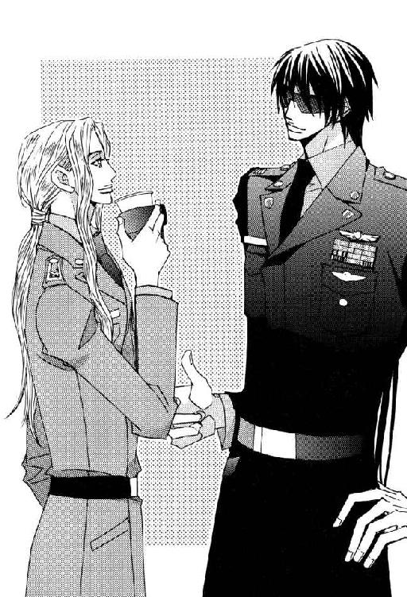
ニコラルーンは当然のようにルシファードの手にあったカップを奪い、飲みかけの中身を飲み干した。ルシファードのほうも好きにさせている。
男女を問わず友人間でしばしば行なわれる飲み物のシェアなのに、どこかなまめかしい。
タイプの違う美形同士が対等の口をききつつ親密にふるまうさまは、記録しておきたいほど絵になる光景だった。
だが、魅力的な上官を篭絡したいパトリックは、眼前の情報将校をミツガシラ少尉の比ではない強力なライバルと見なし、猛烈な敵愾心を抱く。
だれからも注目され愛されたいアイドル願望のエセ天使は、精神感応でその性格を読み取った堕天使の巧みな挑発に乗せられたことを気づかない。
──ん～っ。簡単にひっかかっちゃって可愛いなぁ、もう。ルーシーのそばにいると面白いコトがいっぱいあって楽し～い。
最初からそのテの分野に鈍い男は、この任務に就いた時から半戦闘モードというべき精神状態なので、輪をかけて無頓着だった。
ちょうど仕事に一区切りつけたマコトとヘインズ軍曹も休憩室に出てくる。
ふたりにも遅れてきたプロジェクトのオブザーバーを引き合わせたあと、黒髪のチーフは携帯端末の時刻表示で時間を確かめた。
「まだ少し早いが昼食にする。間隔をあけて部屋を出ろ」
「え？ 昼食なら、仕事がらみで会ったラングレー大尉に差し入れ頼んじゃったよ」
「......あのな。一応これは極秘プロジェクトなんだよ、ニコル」
「わかっているとも。彼女は大丈夫。私が保証する」
精神感応でメリッサの深層心理まで走査した上、この件について口外しないよう強力な暗示をかけるという恐るべき人権侵害をしてのけた情報将校は、清らかな天使の微笑みとともに言った。
「あ、そ」
自分がニコラルーンだったら必ず同じ行為をしている男は、鷹揚にうなずいて相手の判断を受け入れる。
たとえ鈍感とそしられようともルシファードとて健全な成人男性だった。妙齢の美女の来訪はぜひとも歓迎したい。
ましてそれが華やかで明るい性格のメリッサなら言うことなし。なにしろ職場は野郎ばかり。ストレスの多い仕事柄、心にも目にも潤いが必要だった。
本来その役目をになう副官のライラは本日非番で、夜中から不在の中隊長に代わり宇宙港警備の深夜勤務を指揮することになっている。
「それでは差し入れとやらが届くまで、各自好きに休憩してよし」
「大尉殿。俺、例の野暮用を果たすために、しばらく出てきてよろしいでしょうか？」
パープル・ヘヴンの編集者である婚約者を心から愛しているだけでなく、その趣味に協力的なボビー・ヘインズが挙手した。
「許可する。なにが届くかわからんから、食べたい物があるなら勝手に喰ってこい」
「アイ・サー。ありがとうございますっ」
恋人の愛と感謝に満ちた言葉を想像し、今から顔がにやけている通信科の下士官は、ノートブック・パソコンを小脇にかかえて出て行った。
その前にラフェール人の超能力者は、しっかり口外無用の暗示をかけておく。
飲料ディスペンサーの前に移動したルシファードは、特殊能力で裏側から非合法な支援をしてくれるありがたいオブザーバーに紅茶を入れ、自分にはコーヒーを入れて戻る。
「ありがとう！ 私が紅茶党だということを覚えてくれるのは君だけだよ。愛を感じるなぁ」
「愛と記憶の因果関係はともかく、俺のまわりでコーヒーが飲めないのはあんただけだ」
「お茶は嗜好品なのに、好き嫌いなくなんでも飲める連中のほうがおかしいんだよ。──ところでミツガシラ少尉。変わったファミリー・ネームだが、君の親戚に学都・凱羅の助教授をしているひとはいない？」
コの字型に置かれたソファのうち、マコトとパトリックは向かい合うシートにひとりずつ座って、コーヒーを飲んでいた。
ニコラルーンの唐突な質問に技術将校は驚きを隠さない。
「イエス・サー。叔父がいます、タクミ・ミツガシラ。ご存じなのですか？」
「そう！ タクだ。君の叔父さんと私は医学部の同窓生だよ。私は卒業して軍に入ったけれど、学都に残ったタクは工学部に入り直して、今では人工生物学の助教授になっていると聞いた」
「その叔父の影響で私も工学部に進みました。......ですが、叔父と同級生って......叔父は五十代半ばですが？」
マコトは混乱してつぶやく。
成績優秀による飛び級で高校までを卒業し、普通の学生より早く学都に入学できたとしても限度がある。
しかも叔父の年齢が動かせない基準としてあるため、目の前にいる青年との年齢差に対する異和感がどうしても解消できない。学び直した工学部での同窓生ならまだしも、医学部では生まれているかどうかも怪しくなる。
マコトがあえて考えないようにしている部分に、ニコラルーンは明るく踏み込んだ。
「同い年だってば。私はラフェール人だから君たち地球人ほど容姿に変化がないんだ」
若いふたりは同時に息を飲む。
有名な〝天使の末裔〟と呼ばれる種族と初めて出会った彼らは、相手の独特の雰囲気と美貌に改めて納得すると同時に、地球人の感覚とは異なる外見と実年齢の差に戸惑った。
知ったところで親父扱いもできない。
「あ......っ、なるほど。失礼しました」
「君こそどうしたんだ？ 学都出身の優秀な技術将校が、こんな辺境惑星に左遷されているだなんて穏やかじゃないな」
「はぁ......ちょっと上官と深刻な対立を経験いたしまして......」
マコトは複雑な表情で言葉をにごす。
医師の資格をもつラフェール人の指摘通り、マコトの経歴と現在の境遇の差は納得しがたいものがある。
だが、自身もめまぐるしく左遷と昇格をくり返してきたルシファードは、言い渋る部下から無理に理由を聞きたいとは思わない。プライバシーに触れるならなおさらだった。
第一、ニコラルーンは質問した時点で相手の心を読み、即座に答えを得ている。知っておく必要があると判断したら、あとでルシファードに話すなり精神感応で伝えるだろう。
「軽い頭痛がする。俺は気晴らしに部屋のすみで雑誌を読んでいるから、ふたりで学都の思い出話にでも興じていてくれ」
パトリック・ラッセルは席を立つ上官のあとを追いたくて腰を上げたが、頭痛がするという彼に話しかけても迷惑がられるだけだと思い直してあきらめる。
自分がうまく部下を遠ざけたことにも気づかず、一度仕事部屋に戻ったルシファードは、自分のバッグのひとつから雑誌を引っ張り出す。次に自分の使っているイスと隣にあるニコラルーンが使う予定のイスを押して、部屋の外まで移動させていった。
イスのひとつに腰を下ろすと、正面に置いたイスをオットマン替わりにして両足を乗せる。
読書をする態勢が整ったところで、久々に手にしたパープル・ヘヴンを広げた。
日付を見ると三年前の七月号。読みたい連載小説もないので、ライラから適当にバック・ナンバーをもらってきた。
表紙を始めとする見知らぬハンサムな男たちの写真や記事をながめても全然心弾まない同性は、さっさと目次のページを探す。
小説ページ欄に並ぶ作家名は、ほとんど初めて目にするペンネームばかりだった。さすがに三年も前だと転任等で、作家の入れ替わりもかなりあるのだろう。
ルシファードは不時着宇宙船のコンピュータと接触したストレスを笑って発散するつもりだった。なじみのある名前は爆笑度の低い耽美系作家のものだったので、今は積極的に読む気になれない。
とりあえず簡単な紹介欄を読んで、最初に読む小説を決めることにする。
〝シャーベット・ハム。限界ギリギリの狂気の愛を描かせたら右に出るものはいない。情念と妄執に満ちた熱い世界の虜になった熱狂的読者たちは、もはや普通の愛では物足りないと声をそろえる。〟
悪くない。これ行ってみよう。
目次に書かれたページを開くと、首や手足に鎖つきの枷をはめられた男のイラストのタイトル・ページ。モデルに似せる努力を最初から放棄しているイラストには目もくれず、タイトルとあおり文句だけを読む。
『秘蜜の部屋』──。
おステキ。
おそらく誤植ではない。タイトルからして三文エロ小説的な安っぽいいかがわしさが漂う。
感動とひそかな期待に胸を震わせつつ、あおり文句を読む。
〝禁じられた蜜の部屋。上官の妄執に捕らわれて、倒錯した熱い快楽に目覚めていくワルター・シュミット〟
ワルター・シュミット！ なんと今回の犠牲者はワーくんである。文章自体は古臭くてちょいとイケてないが、ある意味内容要約型だった。
そういえば以前ＰＨが議題になった会議で、自分をモデルに書かれたらマジにつらいぞと本人が言っていたことを思い出す。
〝俺、自分が出てたって聞いた時、怖いもの見たさに読んで、思いっ切り後悔したもんな。ショックのあまり、ベッドにもぐって一晩シクシク泣いちゃうくらいの屈辱だぜ〟
モデルを知った上で小説の扉絵を見直したが、ワルターに似たところなど片鱗もない。イラストに描かれた半裸の男は、口を半開きにした餓死寸前の麻薬中毒患者に見える。
筋肉隆々たるマッチョ・タイプではないにしても、ワルターは姿勢の正しいダンディな将校なので、これは大変彼に失礼な代物だった。
たぶんＰＨを愛読する女性たちには、別の視点があるのだと思うしかない。
それにしても情念と妄執に満ちた熱い世界のワーくんと限界ギリギリ狂気の愛。
「............」
もンのすげえ面白そう。
読むべし読むべし。とっととサッサと読むべし。
黙読開始後五分──。
ルシファードはこらえる余裕もなく盛大に吹き出して、ソファに座っている三人を何事かと振り返らせた。
ＰＨがどんな内容の雑誌なのかライラに教えてもらったニコラルーンが、背中を丸めて笑っている男に冷たい視線を向ける。
「いくら休憩時間だからといって、重要なプロジェクトの合間になんでパープル・ヘヴンなんか読むのかな。そもそもそんな雑誌を持ち込む神経が理解できないよ」
「パープル・ヘヴンッ！ そんなもの......本当にお読みになっているんですか？」
マコトとパトリックが異口同音に驚愕の声を上げた。
美少年モドキのふたりですら内容に対する嫌悪感を隠さないのに、同性三人の非難のまなざしをものともせず、再び雑誌を取り上げて男は悠然と読書を続ける。
マコト・ミツガシラの一族は代々質実剛健かつ文武両道の硬派な家風だった。父や叔父たち、兄たち相手にいくつもの武道で体を鍛えてきた彼は、筋肉自慢の大男を図体ばかり大きなハリボテ野郎だと軽蔑している。
事実、彼は任官早々自分をレイプしようとした上官に反撃し、回復不可能な重傷を負わせた。相手がナイフを持っていたので宇宙軍刑務所行きはまぬがれたものの、過剰防衛の判決はくつがえらずカーマイン基地に左遷された。
ミツガシラの一族の男には、これと見込んだ優れた年長者に命を捧げる覚悟で仕えてこそ〝男子の本懐〟という家訓があり、見込んだ男に求められれば肉体関係を持つことにも否やはない。
種族保存の法則に真っ向から戦いを挑む奇天烈な家訓に従いながら、ミツガシラ一族は今日まで滅亡しなかった。幸いにも選んだ相手の男たちが破滅型ではなかったことと、一族の男は一切あてにしないという賢明な女性たちの功績によるところが大きい。
マコトもルシファードに出会った時、体に流れるミツガシラ一族の血が〝男子の本懐ここにあり！〟と告げた。
以来、生涯ただひとりの主人にしか懐かない犬のような気持ちで、ルシファードを追いかけている。
だからこそＰＨの小説における自分の扱いには、腹に据えかねるものがあった。なのに自分が許す（！）のはこのひとだけと決めている当の本人が、俗悪三流ホモ・ポルノ小説を読んでゲラゲラ笑っているとは。
「あんな下品であきれ果てるほど荒唐無稽なでっちあげ話！ どう読んだら爆笑できるんですか。私はお兄さまの良識を疑います」
疑おうにも良識など最初から持っていないお兄さまは、マコトが憤然と抗議しても馬耳東風。ついでに言えば常識もない。
こんな男に一生を捧げてしまったら、男子の本懐どころか男子の愉快であることにマコトは気づかない。恐るべきミツガシラ一族の血の呪縛だった。
パトリックも可愛らしく口をとがらせる。
「自分をモデルに書かれたら、そんな風に笑っていられませんよ。男のプライド、ズタズタにされちゃうんだから。あ、でもボク、大尉殿が相手役だったらちょっとうれしいかも、なんちゃって。言っちゃった、きゃっ」
「なにが〝言っちゃった、きゃっ〟だっ！ 図々しい。第一、その口で男のプライドなんてよく言える」
「ボクより人気がないからって、男の嫉妬は醜いよ、ミツガシラ少尉」
「あんなホモ・ポルノ雑誌で人気があることを自慢するそっちのほうが、よっぽど醜悪だと思いますけど、ラッセル中尉殿」
美少年モドキ対決第三ラウンド開始。
天使のごとき慈愛の微笑を浮かべたニコラルーンは、面倒なので止めもしない。
ルシファードが再び吹き出し、部下たちの低レベルなケンカに水を差した。今度は腹をかかえて爆笑する。
「あははは、あーはっ......くくくくく苦しいー......っ！ 死ぬ......う」
イスからずり落ちて膝をついた彼は、床を拳でたたきながら笑い続けた。
半分呼吸困難に陥りながら豪快に笑う姿をあきれて見ているうち、ケンカをしていたふたりは毒気を抜かれる。
「......男前だ。あまりにも男前すぎます、お兄さま」
「本当の男らしさって、あんな風に大らかに構えることなのかも」
「いや。普通の男にはマネできないから。っていうかマネしちゃ社会にうしろ指さされるから絶対」と、青少年が間違った尊敬に走らないように情報将校は勧告する。
ルシファードはどうにか酸欠死をまぬがれると、足を乗せていたイスに手をついて立ち上がり、反転して腰を下ろす。
「ああ、もう大変笑わせていただきました。ストレスなんぞ一気に吹っ飛んだぜ」
スクリーン・グラスを外して目をこすっていると、入室許可を求めるブザーが鳴った。
オブザーバーのラフェール人がテーブルの上に置かれていた応答装置を取り上げた。
「はい」
『サラディン・アラムートです。カジャも一緒にいます』
一瞬警戒して無表情になったルシファードは、表情をやわらげながらもどうしてドクターたちがここにくるのだと、目顔でニコラルーンに問いかける。
情報将校は小さく肩をすくめ自分も知らないことを身振りで伝えたあと、訪問者に愛想よく応答しドアの開閉ボタンを押した。
軍服姿の軍医ふたりが入ってくる。
青緑色の髪をした外科医は休憩室を見回してから、座ったままのルシファードを見下ろす。
「ヘインズ軍曹の具合はいかがですか？ 士官食堂へ昼食を食べに来たついでに、しばらく痛まないよう鍼で治療してあげようと思ったのですが」
「私はサラの単なる同行者だ。こんなところに集まってなにをしているのか知らんが、意外に暇そうだな」
カジャ・ニザリのもっともな感想を聞いて、美少年モドキ×２が同時にやや感情を害した顔をする。
「軍曹はヤボ用で今は留守だ。奴のケガは俺が治したから、もう治療も入院も必要ない。それより、ここの場所をだれから聞いた？」
「アンリ......いえ、ラクロワ副司令官からですよ。ヘインズ軍曹を借りたいから一時退院を許可してくれと、朝の通信で言われた時にお聞きしました。その時は直前に急患の搬入があって、軍曹に鍼を打つ余裕がなかったものですから。──なにかマズかったでしょうか？」
片手で顔にかかる前髪をかき上げ、ルシファードは軽く眉を寄せた。
「んー。ラクロワ中佐殿がドクターを信用するのは当然だし、判断を非難するつもりはないんだけどさ。なにしろあんたたちはムチャクチャ目立つんだよ。ここに集まって俺たちがしている仕事は極秘扱いなんだぜ」
「それは失礼。まだ昼の休憩時間には少し早いので、下で私たちとすれ違った人間はほとんどいませんでしたよ」
「わかった。俺たちがこの部屋に集まっていることは口外無用に頼む」
医師たちは軽い調子で約束したあと、大尉の新しい髪型について論評する。
「髪型を変えたら少し若く見えますね」
「精神年齢に近づいて好ましいことだ」
「両方がピッタリ一致しているベンに言われると心強いぜ」
「だれがなんだとっ！」
「ほらほら。そうやって可愛らしくムキになるから、大尉にからかわれるんですよ」
「君にまで可愛らしいだなどと言われたくな──ぎゃっ！」
今度は友人に向き直って文句を言っていた内科主任は、いきなり背後から抱きすくめられて悲鳴を上げた。
ルシファードは硬直した白氏の頭を片腕でかかえ、もう一方の手で羽毛のような白い巻き毛をなでる。
「うーん、柔らかくてシルキーなこの手ざわり。なごむなぁ。毛皮も百五十年物となると感触も最高級だぜ」
「毛皮だぁ？ きっさま～。いくらなんでもひとを動物扱いするとは無礼にもほどがあるぞ」
「だって人間も動物じゃん。俺、いつもライラにそう言われているぜ」
ルシファードは本気で色をなすカジャにしれっと反論する。
真っ赤になってもがく白氏は、なんとか背後の男から身を離そうとしてさかんに肘鉄を送り込むのだが、前かがみになって抱きついている長身のルシファードには届かない。
みかねてサラディンがたしなめた。
「内容の想像はつきますけれど、その言葉の前にあなたと副官のあいだで交わされたはずの会話が大切なのでは？ あなたが人間だと思うから腹が立つ。世にも珍しい綺麗な動物だと思うしかない。動物は自分の好きなように生きているだけなんだから──と、いうような会話だろうと推測されます」
「すごいな、ドクター。ライラの性格をよく理解しているよ」
「理解しているのはあなたの副官ではなくて、彼女が分析した生物のほうです。きっと今も彼女は、自分のいないところで上官が人様に迷惑をかけていないだろうかと心配していることでしょう。そんな気苦労の絶えない彼女が、かわいそうだと思いませんか？」
サラディンが彼女に寄せる同情は、ルシファードにかかわった人間の大半が抱く感情だった。
その元凶生物が力強くうなずく。
「思うとも。ライラは俺の生活必需品だ」
「──あくまで自分視点で物語るつもりなわけですね」
「だって俺の人生の主役はオ・レ♡」
面白いので黙って聞いていたニコラルーンが吹き出した。
「最高だよ、サイコー！ それ名言っ」
「無責任に笑っていないで、この動物にいい加減私を離すように言え。周囲がこれの調教に失敗した原因の何パーセントかは、貴様の影響があると私は思うぞ」
ずっと年下の男にかかえ込まれているカジャが、楽しそうに笑うラフェール人に向かって不機嫌に訴えた。
サラディンは一瞬怪訝そうな顔をしたが、思い当たることがあってすぐに納得する。
種族的対立により犬猿の仲だった白氏とラフェール人は、真夜中の酒盛りによって和解できたらしい。
治療の目的で未明にルシファードの私室を訪ねたサラディンは、酔った彼らが仲よくルシファードの寝込みを襲い、あげく悪酔いして介抱されるという珍事によって、それを知った。
疲労困憊して眠りについたはずのルシファードは、ふたりにたたき起こされ貴重な睡眠時間を削られたので、迷惑なのはお互いさまかもしれない。
「ルシファード。あなたはあれから眠ったのですか？」
「さすがに寝たよ。その前にも寝ていたから、トータルで五時間強かな。ニコルの寝言で起こされて、あとはプロジェクトの準備をしていた。ラクロワ中佐殿やマコを朝から呼び出して協力させたのは悪かったが、おかげで午前中にプロジェクトを開始できた。今は一区切りついて休憩中だ。電脳戦は精神的に疲れるからな」
なでるのにも飽きた男は、フワフワ巻き毛の白ウサギを解放する。
今度はウサギのほうが逆に男の腕をつかんで関心を引く。
「寝言だと？ なんて言ったんだ」
「言ったらダメッ。絶対ダメッ」
あわててソファから立ち上がり赤面して叫ぶラフェール人と、ひやかしのネタになるならぜひ聞きたいと顔に書いてある白氏を交互にながめたあと、ルシファードは言った。
「ニコルが無意識下で俺をどう思っているか、よくわかる一言だったな。言っておくが、俺があとで毛布の追加をかけてやったら、ベンも微妙に重なる人名を寝言で言ったから」
「うわぁっ」
カジャも赤くなって飛びのく。
どうやらそれで互いになにを言ったのか見当がついたらしく、追及は打ち切られた。
サラディンはなんとなく疎外感を覚える。
それを見透かしたわけでもないだろうが、黒髪の大尉はにやりと笑ってつけ加えた。
「大丈夫。ドクターなら絶対言わない寝言だから」
「ヒントをいただいてもわかりませんが、カジャの名誉のために謎のままにしておきましょう。寝言ばかりは不可抗力ですしね。さすがに私も自分の寝言は聞いたことがありません。今度あなたと一緒に寝て、私が何を言ったか教えてもらいましょうか？」
大胆なドクター・サイコの発言に驚嘆の声が上がる。
大勢の見ている前で言えば、いくら鈍い男でも多少は動揺するだろうというのがサラディンのねらいだった。
だが、男が反応するより早く、美少年モドキ・ブラザーズの悲鳴が上がる。
「いやーっ！」と、第一声をそろえたふたりは、交互にわめく。
「そんな大年増なんか相手にしないでっ！」
「お兄さまが一緒に寝ていいのは私だけだーっ！」
「ボクのほうが若いのにっ、可愛いのにっ、キラキラの巻き毛なのにっ」
「こんなにお慕いしているのに、どうしてよそ見するんですかっ」
「大尉──」
医師ふたりの容赦のない冷たい視線が突き刺さり、プロジェクトのチーフは身の置き所がなかった。
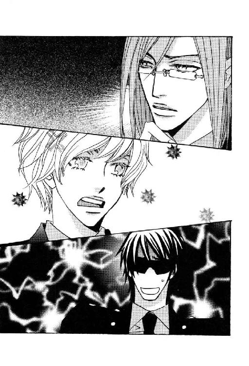
頼りにならないオブザーバーは笑いながら、もう一声などと無責任にけしかけている。
「まさかと思いますが、要員を顔で選んだわけではありませんよね？」
「選考基準は能力でした。メンバーにヘインズ軍曹がおりますので、その点についてはご理解いただけるかと思います」
「もう少しマシな人材はいなかったのか？」
「お言葉はそっくりそのまま現在の私の心境でございます、ドクター・ニザリ」
「大年増という言葉は侮蔑表現です。私は別に自分の年齢を恥じてはいませんが、侮辱に対して寛大な気持ちにはなれません」
「私の監督不行き届きでございます。申しわけございません、ドクター・アラムート」
「自分のほうが若いだの可愛いだのという言葉は、周囲に甘ったれているんだぞ。聞き苦しいことこの上ない。銀河連邦宇宙軍士官がなんたる体たらくだ」
「誠にごもっともでございます、サー」
ひたすら平身低頭の大尉を叱責しても問題の解決にはならないと気づいたふたりは、低い声で話し合う。
「ここのところ、私たちは少し温厚だったかもしれませんねぇ」
「昔を知らない若い連中が、私たちをなめるのは仕方がないかもしれん」
「少し身の程をわきまえさせましょう」
「久々にやるか」
なにをなにをなにをなにをなさるって言うんですか────っ。お願いやめてえぇーっ、まだプロジェクト一日目なのよぅ（←ルシファード心の叫び）。
ふたりの軍医の階級は大佐と中佐、つまり佐官である。上官侮辱罪で教育的指導を行なうと言われたら、尉官のルシファードが異を唱えることは許されない。
ただひとり仲裁役になれる中央本部のエリート将校は、これからなにが起こるかと期待に目を輝かせている始末。
絶体絶命の危機に陥った中間管理職を救ったのは、入室許可を求めるブザーだった。
「あ、きっとメリッサだ！ ニコルが頼んだお昼の差し入れを持ってきてくれたんだな」
「はいはーい」
ラフェール人は、これからというところで邪魔をした訪問者に舌打ちせんばかりの態度で応答する。
『ワルター・シュミット大尉だ。差し入れを持ってきた』
「......どこが極秘プロジェクト？」
「あんたがそれを言うな」
ドアを開けるボタンを押しながらつぶやいたニコルに、遠い目をしたルシファードが力なく言い返す。
一体だれがどんな理由でこの基地に呪いをかけたのだろう。
「よう、ルシファ！ お仕事ご苦労さん。食堂でライラに会ってさ。君が一緒じゃないから、どうしたのかと──ぎゃあ、サイコ・ドクターズ！」
テイクアウト用の箱を両手に下げて陽気に入ってきたワルターは、サラディンとカジャの姿に気づいて悲鳴を上げた。
逃げ腰になった友人の腕にすかさず取りすがり、ルシファードは哀願する。
「頼む、ワーくんっ！ 今、俺大ピンチなんだ。嫌だろうけど、しばらくここにいてくれよ」
「嫌だよ、カンベンしてくれよー」
「お願いっ。メリッサがくるまででもいいから」
「え？ メリィもここにくるの？」
未練のある前妻の名前を耳にしたワルターの態度が軟化し、活路を見出したルシファードがここぞとばかりに言いつのった。
「そうそう。ニコルが差し入れを頼んでいるんだ。なんだかダブったみたいだから、一緒に食べないか？ 少しくらいなら入るだろ」
「怖くてのどを通らないと思うから──」
「せめてコーヒーを飲むだけでも！ ──あ、そっか、ワーくんも宇宙港に行かないといけないんだっけ。準夜勤？」
それでは引き止められないと腕を離す。
ワルターはマコトたちに昼食の箱を手渡しながら、
「だったんだけど、副官のマリアに非番を代わってくれって頼まれた。旦那が非番の時に近所の子供と遊んだら、病気を感染されたらしい。ナントカって病名を聞いたが忘れた。彼女んトコは新婚だからな。看病したいと言われてダメと言ったら恨まれちゃうもん」
「あーゆー女性と結婚できる男って、包容力のある父親のような年上の男か、なんでも軽いノリの考えなしな若造だろうな。まわりのためには前者であることを祈るが、えてして現実は後者だったりする」
「しかり、だな。旦那は別の中隊の副官なんだけど、ちょっと変わった趣味の持ち主で有名だ。よく言えばコレクターとかマニア、いわゆるオタクってやつ。子供向けの特撮番組に関係したグッズを山ほど集めているそうだ。マリアと結婚したのだって、独身者用コンドミニアムにコレクションが入り切らなくなったせいだというのが、もっぱらのウワサだな。かなり信憑性は高い」
ワルターは相変わらず情報通のところを披露し、鼻を鳴らしてつけ加えた。
「近所の子供と遊んだってのも、宇宙戦隊だか流星戦隊だかのごっこ遊びだったんじゃないかな。あいつなら絶対子供と同じレベルで楽しめると思う」
「だれに迷惑をかけているでもなし、マリアちゃんが幸せならそれでいいんじゃない？ 子供っぽいもの同士、結構相性はよかったりして」
「あー、なるほど。そう考えるか。確かに子供さえ作らなきゃ文句ない暮らしかもな。......離婚係争中の俺が、ほかの夫婦のことをアレコレ言えた立場じゃないし」
メリッサの名前が出たせいで多少ナーバスになっている友人をルシファードがなだめる横で、ニコラルーンがふたりの医師をソファに案内し、如才なくお茶をすすめている。
不満げな美少年モドキたちは、サラディンのひとにらみで真っ青になって硬直した。
医師たちは職業柄忍耐力は人一倍あったが、もともと寛大な性格ではない。身の程をわきまえない若造は特にきらう。
ルシファードには好き勝手を言わせても、それは彼の実力とすでに確立している友好な関係があってこその話だった。
サラディンが蓬萊人として地球人を本能的におびやかすことができるように、カジャも超能力を有する白氏として相手を痛めつけることができる。
軍病院長のヴァン・ユー相手にあまり効果を上げていないと感じて以来、ふたりがかりで相手を精神的にいたぶるのはやめていた。
久々に泣くまで怖い思いをさせてやろうと一度は決めたものの、カジャはそこまでやると情緒不安定になり軍を辞めてしまう人間が多かったことを思い出す。
ソファの隣に座る外科主任にささやく。
「なぁ、サラ。今このチビどもを泣かせて軍から追い出すと、あいつが困るかな？」
「困るでしょうね、とても。用のない人間をわざわざこんな部屋に集めたりはしませんから」
「しようがない。手加減してやろう」
カジャは半眼の物憂い表情になった。
気まずげに医師たちから視線をそらしていた若いふたりの顔から血の気が失せ、冷や汗をかき始める。特にパトリックは目を大円に見開き、多量の空気を求めるように大きくあえいだ。
ラフェール人の物柔らかなテレパシーが、カジャの思考に割り込んでくる。
『ごめ～ん。そのあたりにしておいてくれるかなぁ。坊やたちには午後も仕事をしてもらわないと仕事に支障が出ちゃう』
『だから手加減しただろう』
『うん、わかっている。ありがとう』
精神感応で相手の精神に負荷をかけていたカジャは、それを中止した。
パニック症状一歩手前になったパトリック・ラッセルの反応を見て、耐性に個人差があるのを思い出した。ニコラルーンの頼みがなくてもやめている。
情報将校は飲料ディスペンサーの前から、トレイにのせて紅茶を運んできた。医師たちにそれを配りながら、何食わぬ顔で年若い将校たちにたずねる。
「どうしたのかな？ ふたりとも顔色が悪いよ」
「なんだか急に──......いいえ、なんでもありません......」
基地内に流れる軍病院の医師ふたりにまつわる多くのウワサを気にも止めなかったパトリックだが、間近に接して認識を改めた。
宇宙港での特別任務でサラディンと面識のあったマコトも、サイコ・ドクターズを甘く見ていたところはライバルと大差ない。
軍病院の医師たちには、明らかに地球人とは種の違う異質な美があった。地球人にはない髪や目の色といった一目瞭然の部分だけではなく、ありふれて見えた白い肌の質の違いに気づいて驚く。
地球人で白い肌に分類される人間の顔は、皮膚の下に流れる血の色が透けてピンクがかって見える。
真珠に似た淡い光沢のあるサラディンの肌も、陶器のなめらかさを持つカジャの肌も、地球人の白色に分類されながらピンクがかって見えるそれとは異なり、純粋に白かった。
その肌色に加え、非常に整った顔立ちをしている彼らは、地球人の目には作り物めいて見える。等身大の人形が生きて動くような不自然さも、畏怖される原因のひとつだった。
なによりも彼らには、年齢的な落ち着きと仕事への自信ばかりでなく、中身が空疎な人間には持ちえない周囲を圧倒する存在感があった。
彼らを前にして、弱輩者であるおのれを思い知った美少年モドキたちの背筋は寒かった。ルシファードたちがいなければ、いたたまれず数分で逃げ出していただろう。
馬鹿にして聞き流したウワサの中に真実が含まれていたとわかっても、暴言を吐いたあとでは遅かった。
さわらぬ神にたたりなし。ウワサはいつもその言葉でしめくくられる。
だが、たたる神に平気でさわり、友人付き合いさえしてしまう剛のものも稀にいた。単に無神経なだけにせよ、悪魔王の名前を持つだけのことはある。
ルシファードは背後で行なわれた言葉なき制裁も知らず、仲のいい友人との話を続けていた。
「──というワケで、当分中隊はライラひとりに任せきりだ。第三期は深夜勤務だから大したことも起こらねえだろう。......と期待している」
「彼女より問題は君のほうだよ。こんな状態がどのくらい続くのか、わからないんだろう？」
「情報収集だけなら早晩かたづく。あとは得た情報の分析にどのくらいかかるかだな。分析段階で、もう少し人数を増やしたいところだ」
「面白そうだから俺も立候補したいけど、情報分析も電脳戦と同じく適任者がやるべきだよな。情報科から要員を派遣してもらうといいかも」
ルシファードは驚いて、すぐワルターに聞き返す。
「情報科？ あったのか？ 組織図を見た時、それらしいのがなかったから、こっちで勝手にメンバーを集めたんだぜ。そもそも情報科があったら、とっくに副司令官殿はそうおっしゃっていただろうし」
「えっ？ 組織図にない？ 冗談だろ。首都防衛が任務の基地なんだから情報科がなくてどーすんの？ 惑星軍を監視してクーデターの可能性をチェックしたり、惑星政府や議会が健全に機能しているかとか、一部のものによってマスコミが情報操作されていないかなんて調べるのが情報科の仕事だろう？ それがウチの基地にないって、どーして？」
「着任二ヵ月目のオイラに聞かないでよ、ワーくん。ここは一発勤続四十年の生き字引におうかがいいたしましょう。──ドクター・アラムート！」
紅茶の入ったカップを手にしたサラディンが顧みる。
「なんでしょう？」
「この基地に情報科がないのは、首都防衛の目的で駐屯する組織として異常だという話になったんだけど、なにか知ってる？」
「私が軍病院に着任した当時は存在しましたよ。情報科所属の将校の腹膜炎を手術したことがありますから確かです。少し前に、経費削減を目的とした組織改革で通信科に併合されたと聞きました」
基地の機能低下を招く言語道断な処置だが、この貧乏基地ではいかにもありそうな話だった。
ルシファードとワルターが絶句していると、今度はカジャが言う。
「オスカーシュタイン大尉。年寄りの〝少し前〟は気をつけたほうがいいぞ。十五年くらい前だったりするからな」
「あなたがそれを言うわけですか」
「私だから言うんだ。三日前、婦長と雑談していて、十年前の話を〝このあいだ〟とやって笑われたばかりなんだ」
「あるある！ 私も三十年以上前のことを話した時に〝ちょっと前〟になるけどって言ったら、それはもう立派に〝昔〟でしょうって相手に言われちゃってねえ」
ニコラルーンも加え、はた目にふたりの美青年と美少年に見える医師たちはうなずき合い、楽しげに声をそろえて笑った。
外見と実年齢に差のないふたりの大尉は、そのくだりについてなんともコメントのしようがなく、情報分析の応援要員をどうするかという最初の懸案に戻る。
「情報科が通信科と併合されたというからには、通信科が多少なりとも任務を代行し、現在もその能力を有していると考えていいんだろうか？」
「期待しないほうがいいんじゃない？ 通信科のことなら、もうすぐ来るっていうメリィに聞くんだね。あー、知れば知るほどイヤになってくるよな、この基地！ ルーちゃんが来て、少し面白くなってきたと思ったんだけど」
「だれがこんな呪いをかけたんだろうねぇ。──そろそろマジで腹が減ってきたな。ワーくん何買ってきた？」
「サンドイッチ」
「ちょうど分けて食べやすいな。追加がくるまで適当に食ってようぜ」
ワルターはソファに座る年長者たちをちらりと見て、力なくかぶりを振った。
「あのふたりが視野に入るだけで、俺には相当なストレスなんだ。最初に君が危惧していた状況も落ち着いたようだし、やっぱり帰るよ」
三人がなごやかに談笑しているからといって、平和の証拠にはならない。この連中は笑顔でひとを切り刻み、うれしそうに毒を盛り、楽しそうに火を点ける。
だが、ルシファードは食事を届けてくれた友人の親切心に報いるため、あえて心の平安を乱すようなことを言うのはやめた。
４
ルシファードがこれ以上友人を引き止める口実を見つけられないでいると、折よく入室を求めるブザーが鳴った。
精神感応の力を使い、廊下にいるのがメリッサ・ラングレーだと確認したラフェール人が、応答する手間をはぶいてドアを開く。
第六連隊に所属する通信科の中隊長は、乱れた赤い巻き毛を直すこともできず、両手に多くの荷物を下げて入ってきた。
隙なく化粧をしていても女を強調するタイプではなく、いつ見てもエレガントで華のある女性士官だった。
「遅くなってごめんなさーい。販売店が予想以上に混んでいたものだから」
「面倒をかけてすまない。──こっちの袋はなに？」
素早く歩み寄ったルシファードは、彼女の手から荷物を受け取っていく。パトリックやマコトたち年少組も急いで席を立ち、チーフに手渡されたものをテーブルへと運ぶ。
軍人の、特に男たちの食欲がどれほどのものか毎日見ているメリッサが運んできた食料はどれも相当な重量があったが、その中にひとつ目立って軽い袋があった。
「使い捨ての取り皿やフォークにナプキンよ。これからも必要になりそうだから、たくさん買ってきたわ」
「ありがとう。その細かい心配りが女性だよな。俺にはマネできん。全部請求してくれ」
「いいのよ、差し入れですもの。それより──」
メリッサは男ばかりが七人もいる部屋をゆっくり見回し、彼女独特の歌うような口調で言った。
「私が足を踏み入れたこの部屋は天国の花園かしら？ 全部違う美しい花が咲き誇っているわ。まるで夢のよう～。......あらいやだ、一本だけ雑草が混じっているじゃない」
興醒めだと言わんばかりの言葉を聞き、よせばいいのにワルターがむきになる。
「雑草って俺のこと？ ひょっとして俺雑草？」
「あーら、シュミット大尉。このメンバーに混じって自分も花だと言い切る自信があって？」
「まあまあ。筋肉ダルマどもと違ってむさくるしさが若干減じようとも、所詮は野郎の集団。華やかさとうるおいに欠ける中で、君の訪問のほうが我々には干天の慈雨だよ」
仲裁に入ったルシファードがかなり本気で言えば、パトリック・ラッセルをのぞく全員も口々に同意した。
「皆さんお上手ね。もちろん言われて悪い気はしませんわ。さあ、お昼を召し上がれ。頭を使う仕事には、すぐブドウ糖になるライスの食品がいいと思って」
「あ！ おにぎりと巻きずしだっ。ありがとうございます、ラングレー大尉殿。私はどっちも大好きなんですっ」
マコト・ミツガシラがルシファード以外の人間にはめったに見せない満面の笑顔で礼を言うと、カジャが巻きずしのパックをまじまじと見つめ、
「ウチの病院の売店ではライス・ロールと表示して売っているんだが、これはすしの一種だったのか。私は少し酸っぱいこの味が結構好きなんだ」
「ええっ！ そういう味なのですか？ ウチの科のナースたちが売店は適温保存を守らないから気をつけろとうるさいのですが、確かに少しいたんでいるようだと思って処分したことがありました。うーん。大失敗。もったいないことをしました」
外科主任は耽美な外見に似合わず、食べられるものを捨てていたことにかなりの衝撃を受けた模様。
同業者として、時に極限状態に追いつめられる医師の食糧事情を知っている内科主任は、友人の体験に同情的だった。
「そうか、いつも売店で売れ残っている理由がわかったぞ。あれはビネガーを使っているから酸っぱいんだ。原材料表示のラベルを見ればわかったのに」
「正直に申し上げますが、そのお話はショックです。大変くやしい」
「お気持ちはよくわかりますよ、ドクター・アラムート。食べ損なった分を今回取り戻しましょう。さあ、手を洗ってきてください」
使い捨ての皿とフォークを袋から出しながら、ニコラルーンが明るくなぐさめる。
食べ物を囲むと年齢など関係ない。
どこか無邪気な男たちのやり取りを微笑んで聞いていたメリッサが、笑顔のままルシファードを見上げた。
「ずいぶん変わった髪型にしたのね。ワイルドになって悪くないけれど」
「ライラの失敗作だよ。シャギーだかショギーだかって名前のハサミを買ってきたまではよかったんだが、あちこち切ったらワケわかんねえ頭になっちまった」
「全体的にもう少し短くしたら、うるさくないわよ」
「後ろの長いところとバランスが悪くなるから、このくらいでいい」
ワルターもずっと気になっていた友人の長い後ろ髪をつかんで軽く引っ張る。
「最初から長すぎじゃない？ それにここだけ長く残しとくのは一体なぜ？」
「こうやって使うから」
適当にごまかすのが面倒になったルシファードは、後ろ髪を友人の体に巻きつけて三十センチほど宙に持ち上げた。
だが、ワルターは驚きと恐怖で蒼白になり、その表情を見たルシファードは他人への配慮に欠けた自分の不精を後悔した。
すぐ降ろされたものの、人外の力で操られた衝撃が覚めず後ずさりし、背後にあったイスにぶつかってへたり込む。
モニター越しではあったが、ワルターは宇宙港の自爆事件でルシファードの空間移動を見ていた。それでも力を自分に向けられると、これほどショックを受ける。
友人の激しい動揺は、唯一といっていいルシファードのナーバスな部分をえぐった。
しかし、ここでも女性はタフだった。
メリッサは若草色の目を輝かせ、感動を隠さずに言う。
「すてきな芸ねっ。ライラばかりじゃなく、私にも〝いつもより多く持ち上げています〟って口上を言わせてちょうだい。そーゆーのって、なんだかウキウキするのよね」
ルシファードの顔にゆっくりと笑みが広がる。今のセリフの半分は、自分の気分を敏感に察して気遣う彼女の優しさが言わせたものだった。
長身をかがめて彼女の頰にキスをし、耳元に低くささやく。
「君は本当にワルターには過ぎた女性だよ」
「そう思うなら一晩くらいつき合いなさいな、ミスター・セクシー・ヴォイス。知ってる？ 女は耳で恋をするのよ。スクリーン・グラスどころか仮面をつけていたって、あなたは女たちを惹きつけるわ」
「まずいなぁ。まさか友情と女性を秤にかける日が俺に来ようとは......」
低い声で話すふたりの背後で突然、ワルターがメリッサに傾きかけていた友人の心の天秤を一気に引き戻すような悲鳴を上げた。
「こっこっこっこれはあぁ──っ。パープル・ヘヴン四七二六年七月号っ！」
イスに座り込んだ彼は感触で、そこへ置かれていたものを尻に敷いてしまったことに気づいた。動揺を静めてから立ち上がり、下敷きにしていた本を目にしたのだろう。
ルシファードは雑誌をにぎったワルターのすさまじい形相を目にした瞬間、なにかを考えるより早く吹き出していた。同時にメリッサも。
それによってふたりは互いがあの雑誌の某小説を読んでいることを悟り、思わず同意の視線を交わす。その行為で再度吹き出してしまう。
ワルターは雑誌を放り出して黒髪の友人に躍りかかる。
「読んだのか読んだのか読んだのかあぁ────っ？」
真っ赤になったワルターがすごい剣幕で詰問する。
冷静に答えてやりたくても、なりふり構わぬ友人の反応に笑いをこらえられず、まともな言葉にならない。執拗に答えを迫る友人に押され続け、とうとう壁を背にして立つ格好となった。
ＰＨの犠牲者は両手で友人の胸倉をつかみ、激しく揺さぶる。
「アレを読んだんだなっ！ アレをアレをアレをっっっ！」
友人に対する元夫の理不尽な暴行を止めねばという気持ちはあるのだが、メリッサも相手のあまりな錯乱ぶりに笑ってしまって対処できない。
ソファの背に手をついても体を支えられず、笑いながら腹をかかえてその場にしゃがみこむ。
「お化、お化粧......落ち...落ちちゃ......っ」
飲料ディスペンサーの一部になっている洗面台で手を洗っていたものたちは、突然の騒ぎに何事かと戻ってきた。
ルシファードはこの場を収拾するべく自制心をかき集め、必死に笑いの発作を抑える。
逆上するワルターの気持ちは理解できた。自分が現実にやったことではないのに、恥部を見られた心地だろう。冷静になれば自分とは全然関係ないと突き放せるはずなのに、あの小説を読んだ時の怒りや羞恥、屈辱が甦り、荒れ狂わずにはいられない。
「落ち着けよ、ワルター。だれもあれが実話だなんて思っているワケないんだし。勝手に同じ名前をつけられただけのことだろ」
「だったら......っ。だったら、なんで笑うんだよ、君もメリィもさ。心の中で俺と重ねて読んでいたんだろう」
思い切りグレたワルターの声。
──笑っちゃダメだっ。笑っちゃダメだぞ、ルシファード。今こそ友情がためされる時だ。男だったら絶対ここで笑うんじゃねえ。
懸命に自分に言い聞かせ、ことさらクールに応える。
「んなワケあるかよ」
「そうよ。第一その本が出た当時、あなたは私と結婚していたじゃない。どうやったら重なるのよ。ばかばかしい」
なんとか気力を振り絞って立ち直ったメリッサが援護してくれる。
「あんなものに俺の名前を使われて、俺がどんなにみじめな気持ちになったか......君やメリィにわかるわけがないんだ......！」
「わかるさ！ だれだってスカトロなんて嫌──......っ！」
ぶばっ。
大失敗。具体例を挙げたら思い出してしまった。
──もうダメ。もう止まらない。笑い死ぬ。だれか助けてくれ。
再び吹き出してしまったルシファードと再び逆上するワルターをながめる一同の視線は、深い憐れみに満ちていた。
軍病院のドクターたちはもとより、いつもは無責任に騒乱を面白がるニコラルーンですら、かつての不幸をフラッシュバックで味わうはめになったワルター・シュミットに同情を寄せる。
「あんな本を仕事場に持ち込むルーシーが悪い。この機会に少し痛い目を見るといいんだよ」
ラフェール人の冷たい言葉に周囲からは無言の同意が返った。
「そうやって君は笑うけどなっ！ 薬を盛られて地下室に拉致監禁された野郎が、ベッドに縛りつけられて×××突っ込まれたりムチ打ちされたり、鎖でつながれて××のついた×××突っ込まれてさ。あげくが××だぜ××っ！ それのどこが笑えるんだ？ えっ？ 言ってみろよ、ホラ。笑ってないで言えってば！」
完全な八つ当たりで友人を責めている元夫の言葉を背中で聞きながら、やはり笑いの止まらないメリッサはさかんにソファの背を平手でたたく。
──そうよそうだったわ、そーゆー話だった。よく覚えているわね、このひと～。
片手で口を覆ったルシファードは、これ以上責め続けられると本気で窒息死の危険があると感じていたが、なにしろ笑っていては体に力が入らない。
のがれようとして上体をよじった彼の足と、のがすまいとしがみつくワルターの足がからんでバランスを崩し、もつれ合って床に倒れる。
「いってぇ......」
倒れても相手の胸倉を離さなかったワルターは、衝撃の大半を引き受けてうめくルシファードの体に馬乗りになった。
「大体なんで俺がマクスウェル大隊長殿から〝君は女の味しか知らないようだから、俺が男の味を教えてやろう〟だなんて言われなきゃなんないんだよーっ」
うわ、気色悪っ。今、背筋になんか走っちゃったよと、ギャラリーたちが身震いする。
苦痛のおかげで笑いの発作から脱した男は、眉を寄せて言う。
「そろそろやめよーよ、ワーくん」
「だって君は読んで笑ったんだろう？ 俺が××されて××しちゃったのを無理矢理××させられて、それなのに──」
ワルターの声はそこで不意にとぎれたが、ギャラリーは怒りと苦痛の入り混じったうめき声を上げた。
そーゆー話はやめてくれっ。今まさにみんなでこれからお昼ご飯を食べようとしているこの時にっ！
ルシファードは上体を起こし、ワルターの顔をのぞき込む。
「よせよ、ワルター。俺が小説を読んで笑ったのは内容があまりにも荒唐無稽だったからだぜ。あんたの言葉に笑ったのは騒ぐあんたがおかしかったからであって、あんたとあのクソ話を重ねて笑ったことは一度もないぜ」
うっそだあぁ──っとだれもが思ったが、さらに混乱を招くので口には出さない。
どうもワルターのようすが変だった。
「君に......俺の気持ちなんか......っ」
うなだれた彼の絞り出す声は、こらえる嗚咽にしわがれている。
ルシファードは伸ばした両手で友人の両頰を包むようにして、優しく話しかけた。
「そんなことねえよ。ちゃんとわかっているよ。笑いが止まらなくなって悪かった。あんたがナイーブなのは知っていたけど、そこまで深刻に傷ついているなんて思わなくてさ。ごめん。俺が悪かった。可哀想にだれにも言えなくて我慢していたんだな」
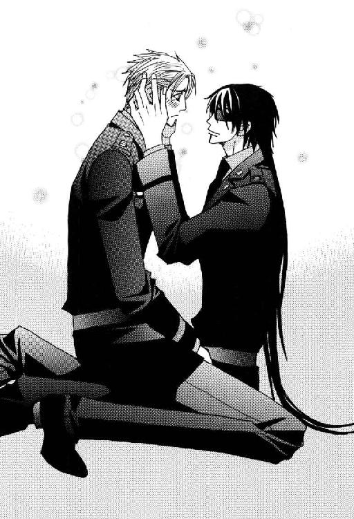
さっきメリッサに耳で恋する女たちを夢中にさせると評された魅惑の低音が、ここぞとばかりに威力を発する。
優しく甘く心地よく。
女性に限定せず、はたで耳にする全員が恋人同士の睦言を立ち聞きしてしまったような錯覚に陥り、赤面してうろたえるほどのたらしぶりだった。
「こうして発散して、少し気持ちが軽くなったんじゃないか？」
「......そうかも」
ワルターが細い声で同意し、拳で目元をぬぐう。
「こんな架空のバカ話、怒って怒鳴り散らすか、大笑いして忘れちゃえばいいんだよ。ポルノに書いてある内容なんか行為のためにある理由なんだから、だれも本気にするわけねーじゃん。──わかったな？ わかったら手を洗って一緒にご飯を食べようぜ」
「うん」
屈辱のあまり半泣きになっていたワルターは、ルシファードの声と言葉になだめられてようやく落ち着く。
一同は安堵しつつ釈然としないものを感じ、元凶の男に冷たい視線を向ける。
腕組みをして立つ赤毛の美女は、彼らとも違う感情から、立ち上がって服のほこりを払う男を冗談半分に明るくなじった。
「まーあ、なんてことかしら。そういうオチなの？ 男の涙に天秤を引き戻されちゃって、女の私の立場は？」
「ごめんな、メリッサ。今度バーでおごるから」
「ライラ付きじゃないと許さないわ」
「おおせのままに」
これで一件落着と判断した見物人たちは、ソファに移動して思い思いの席に座る。
皿や飲み物のカップが配られた。
なんとなく不愉快な気分を引きずったパトリックが、八つ当たり気味にひとりごちる。
「ヘインズ軍曹もバカだよ。居残っていれば特ダネだったのに」
「このカップリングなら、そこそこＰＨ読者のお姉さま方にもウケたでしょうしね」と、マコトもつっけんどんな口調で話題に乗る。
「ひょっとしてルシファード・オスカーシュタイン攻略の最大の障害は、シュミット大尉だったりして～？ あはあは......」
ギャラリー一同の気分を代表したラフェール人の堕天使は、笑いながらワルターの未来に不幸の種をばらまいた。
軍病院の医師ふたりは黙ってフォークを巻きずしに突き刺すだけで、大人げないことは言わない。思ったにしても。
洗面所で手を洗うルシファードは、その場の奇妙な雰囲気などまったく感じ取れない。周囲を置き去りにして、思い出した仕事の話に切り替える。
「メリッサ。かつてあった情報科が通信科に併合されて、今はその任務の一端を通信科が代行しているって聞いたんだが、だれがどんなことをしているんだ？」
「いきなりね。あなたがなにを知りたいのかわからないけれど、併合なんてリストラの口実に決まっているでしょう。少なくとも私は、それに該当する任務を前任者から申し送りされていないわ」
「やっぱり～。そんなところだろうと思ったけど。トホホ......」
情けない声を出したワルターは、期待していなかったと言いつつ肩を落とす。
「ある特定分野に限って情報科の諜報能力を保持する集団はあるけれど──」
紹介してくれとルシファードが口に出す前に、すかさず片手を上げたメリッサは、相手のぬか喜びを押しとどめた。
「パープル・ヘヴン編集部よ。あそこは基地内のあらゆる人間関係を把握する勢いで精力的に活動しているわ。ホモというフィルターさえつけなければ情報精度は高いんだけど」
「勘弁してくれ。仕事でかかわるのだけは、ごめんこうむる」
「当然ね。特別任務で集めたメンバーでよければウチも協力するわ」
「ありがとう。その時はよろしく頼む。ともかく今はエネルギー補給だ」
ラフェール人はすっかり接待役となって場を取り仕切り、席を詰めさせたり皿やフォークを用意して待っている。
にぎやかな昼食会の様相を呈するテーブルへと三人は向かった。
「ルシファはドクターたちのあいだに座って。ご婦人とシュミット大尉は向かい側の空いているソファへどうぞ」
人間関係を把握した上で配置を決めたニコラルーンは、にこやかに場を仕切る。
コの字型に並べたソファは、ひとつ目にカジャとルシファードとサラディン、ふたつ目にニコラルーンとマコトとパトリック。ルシファードたちと向かい合うソファにメリッサとワルターの元夫婦がふたりだけ。
マコトは黒髪の大尉に食べ物を盛りつけた皿を素早く差し出す。
「お兄さまどうぞっ。ライス製品は手づかみで食べるのが基本マナーです」
「ありがとう。──なるほどな。バラバラになって食べづらそうだ」
ルシファードは両隣で苦戦している医師たちの皿をのぞいて納得した。
手づかみなど思いもよらなかった軍医たちは、内心それを早く言えと思いつつ皿の上に散乱する太巻きの具をフォークでつつく。
座った位置の関係でマコトにおくれを取り、くやしい思いをしたパトリックは、ライス・ロールなんて野蛮な食べ物は一生食べるものかと誓う。
ああだこうだと具の中身を吟味しつつ、夢中で食べている美形の群れを視野に収め、メリッサは満面の笑顔で言った。
「ああ、なんてゴージャスな眺めなのかしら。目だけでお腹一杯」
「君の視線は左側には向かないんだな」
「当然でしょう。お花畑を目の前にして、わざわざ足元の雑草を観賞するひとがいて？」
不機嫌そうな元夫の指摘に元妻は明るく皮肉を返す。
さきほどの余韻もあり、男のプライドが傷つく返事にワルターはグレた。
「その雑草を君は夫にしていたんだがな」
その場が凍りつく。ルシファードですら手を止めて、らしくない友人の暴挙に啞然とする。
女性にこんな暴言を吐いて、報復されないわけがない。
自爆するならほかにだれもいない場所でやれと、男たちは無言で愚かな元亭主に非難のまなざしを向けた。食事をまずくする行為は最大級の罪だった。
冷たい目をした女性士官は形だけの笑顔をワルターに向け、子供に言い聞かせるようにゆっくりと言う。
「浮気したあなたが離婚を口にした時、私にとってあなたの存在は雑草に変わったのよ」
瞬間凍結。サイコ・ドクターズですら凍らせた氷の魔女の最強呪文。
しかし、どうやら脳を循環する血液が不凍液らしい勇者は、奇妙な実況中継を始めた。
「おおっとラングレー選手、強烈な反撃。会心の一撃です。シュミット選手マットに崩れ落ちました。立てません。それどころかまったく動けません。──この状況をどうご覧になりますか、解説者のマーベリックさん」
「勝敗はだれの目にも明らかですね。それより動かないシュミット選手が心配です。ここはもう、ドクターを呼んだほうがいいんじゃないでしょうか？ ドクター・アラムート、いかがですか？」
ノリのいいラフェール人に話をふられて、他人事ながらきつい一言に硬直していたサラディンも我に返る。
「ドクター・ストップを宣言します！ これ以上は危険です。即刻試合は中止してください」
「早くマットから降ろして救命措置を施さないと致命傷になるぞ。レフリー、呆けていないでカウントを取れ」
カジャに指を差されたマコトも応じた。
「......、ナイン、テン！ 勝者、ラングレー選手」
「チャンピオン、防衛戦の勝利おめでとうございます。感想をどうぞ」と、インタビュアー役のパトリック。
ワルターをのぞく男たちが拍手し、口々に無敗のチャンピオンの栄光をたたえる。
一体何事かとあきれて聞いていたメリッサは苦笑し、やがてほがらかに笑い出す。
「いやぁねえ。これじゃ私が悪者じゃないの。男ってどうしてこういう時、総力を上げて同性をかばおうとするのかしら」
「男はすぐにヘコむ弱い生きものなんです。ワーくん、もうペッコペコにヘコんでます。許してあげてください、メリッサお姉さま」
哀願するルシファードから隣に座るワルターに視線を戻し、母親のような口調で言う。
「いいお友達を持ったわね。あなた、お腹がすいているのよ。だから神経質になってイライラするの。なんでもいいから食べなさい」
「......食欲ない」
「一口食べたら、それが誘い水になるわよ。ほら、あなたの好きなアボカドのサンドイッチもあるじゃない」
暗い表情のワルターは彼女のいいつけに従い、のろのろとサンドイッチに手を伸ばす。
全員一丸となって最悪の状況を脱した男たちは、食事に没頭することで気分転換をはかる。
ともかくご飯。なによりご飯。力と幸せの源ご飯。
「──サンドイッチの真ん中を持つクセは直しなさいと言ったでしょう。真ん中を持つから下から具が落ちるのよ。......しようがないわね。紙ナプキンを使いなさいな。下に当てて食べれば落ちないでしょ。......そう、そうやって──」
「メリィ。これ、ピクルス入ってるよ」
「相変わらずダメなの？」
「ダメ。絶対ダメ。吐きたくなる」
「やめて。取ってあげるから出しなさい」
彼女がフォークを取り上げる前にサンドイッチのパンをはがし、差し出すワルター。
ふたりのようすを横目で観察していたラフェール人が、隣の蓬萊人にささやいた。
「ひょっとして、さっきのアレは犬も食わぬなんとやらだったのでしょうか？」
「それの度を越えていたとは思いますが、あなたの言いたいお気持ちはよくわかります」
あのセリフに凍りついたものたちは、心穏やかに元夫婦の微笑ましい交流を見守る気になれない。
カジャも辛辣に言った。
「これだから男女のもめごとにかかわるのはいやなんだ。けじめがなくて見苦しい」
「えー？ 俺とライラなんて、こんなの日常茶飯事だぜ」
「それは単におまえだけがだらしなくて、ミズ・キムがその尻ぬぐいをさせられているがゆえのもめごとだろう。一緒にしたら彼女が気の毒だ」
「ひでえ言われようだよ。──お、当たり」
事実を厳しく指摘されても傷つく繊細さのない男は、頰張ったおにぎりの具が豚の角煮だったことを喜ぶ。
紅茶のカップを手にした外科主任がしみじみと言った。
「あなたの生き方は単純で、うらやましい限りです」
そう単純な部分ばかりでもないんだけどなー、と口の中で簡単に崩れる肉の旨味を堪能しつつ、ルシファードは反論を呑み込む。
基地で一番親しい友人が未練を引きずる女性でなければ、メリッサは現在自分が交際したい女性ナンバー・ワンだった。
恋愛は相手に執着しなければ成り立たない。深追いしない淡泊な自分が、いつも好意以上恋愛未満で終わるのはある意味当然だった。
不意に遠く離れた──銀河系の半径近くも離れた惑星にいる父親のことを思う。
恋愛ではないにせよ、あれほど執着してもそばにいてもらえないなら、ひとを想う気持ちは自分を苦しめるばかりだった。
自分の淡泊さが超能力の暴走を防ぐためだけでなく、何重の意味でも自己防衛であると、ルシファードはどこかで気づいていた。
５
ひょっとすると名前だけかもしれない極秘プロジェクトの一部メンバーと、プロジェクトのチーフであるルシファード・オスカーシュタイン大尉の友人たちによる昼食会は、なごやかな雰囲気──約一名は色々あった模様──の中で終わり、来客たちは目立たぬように各自別々に帰っていった。
その場に残ったメンバーのうち、一番階級が下になるマコト・ミツガシラ少尉があとかたづけを引き受け、ほかの三人は奥の仕事部屋に向かう。
暗証番号を打ち込んで室内に入ったルシファードは、オブザーバーとして参加しているニコラルーン・マーベリック少佐を自分の机に呼ぶ。
ラフェール人の少佐は友人の机の上に小山を作っているディスクを一瞥して、女性的な細い眉をしかめた。
「なに、これ。これから解析しなきゃいけない記録済みのデータ？」
「そう。流民街の地下にある宇宙船のネットワークをハッキングして、連中の使っているパソコンの中身をごっそりコピーした」
「これのデータ分析だけで相当数の人員が必要だ。ラングレー大尉と部下たちの協力だけでは足りないだろう」
「手の空いた時間に俺がやるよ。ブレイン・ギアのノーマル・ドライブ・モードの代用になるものを見つけたから、なんとか処理できる」
軽く受け流すチーフの答えを聞き、逆にオブザーバーは渋面になる。
「君は指揮官だよ。それだけ言えばわかるね？」
「わかるが、単純に効率の問題だ。成果が未知数なデータの整理に、貴重な人員を長時間張り付けるわけにもいかんだろう」
「確かにひとも時間も足りないけれど。......しようがない。君の得意な臨機応変で行こう。ただし、多少長引くことを考慮して体力配分をしてほしい。いくら君がタフでも限界はあるんだからね」
「アイ・サー」
相手の即答に愁眉を開いた超能力者は、昨夜ルシファードを撃った将校の尋問から得た情報を報告した。
「──通信中隊の将校の件だが、予想通り専用に開発された薬を使った専門家の仕事だ。彼には一切余分な情報を与えていない。本人はどこで仕込まれたのか、まったく覚えがないそうだ。こうなると唯一の手がかりは暗示そのものだな。〝我々の計画〟という言い方からして、あの少尉と暗示をかけた側は同じなにかの組織に属していたと思われる。しかし、君の動向を探って連絡していたやつじゃなかった。そちらは現在も調査中だが、はかばかしくないね」
「××。所詮緊急事態用の捨て駒ってワケか。いったいどれだけ送り込まれているんだ？」
「上官の前で汚い言葉を使うんじゃありません。何度も言わせるんじゃない。──ガッカリするのはまだ早いよ。彼の経歴を確認したところ、この基地に配属される前は、ヴァンダイク方面軍総指令本部にいたことがわかった」
「そいつは──」
ニコラルーンは微笑んで親指を立てる。両性具有的な優しい美貌に男っぽい仕草はあまり似合わなかったものの、小さな勝利を祝う気持ちは伝わった。
「君とＯ２、ふたりのカンだ。この際、それに賭けてみない？ なにを基準に調べていいのかさえわからず疑心暗鬼に陥っているより、基地の全兵士にそのフィルターをかけて選別しよう」
「やってみる価値はありそうだな。──昨夜、Ｏ２が送ってきた資料を持ってきた。あんたも目を通してくれ」
自分のパソコンに亜空間通信で送られてきたデータのディスクを入れ、自分の暗号コードを打ち込んで開く。
自分の位置と入れ替わって画面がよく見られるようにうながすため、ルシファードはラフェール人の腕に手をかけた。
「痛っ！」
「あ、悪い。腕をどうしたんだ？」
「君につかまれたトコ......両方とも手形のアザになっているんだよ。君の握力で思い切りつかまれたら普通そうなるさ。骨が砕けるかと思った」
「すまない。つい我を忘れちまった」
前例が一回あるだけの激怒で華奢な友人を衝動的に傷つけたと知り、とっさに力の加減さえできなかった自分の未熟を反省する。
「謝る必要なんてないよ。それどころかこのアザが、いつまでも消えないといいなーって思ってるんだ。ベッドの中で君が、私の両腕をつかんで引き寄せた記憶を体に刻みつけておくのも──」
「いや────っっっ！ お兄さまったら、ひどいぃっ。ボクがこんなにお慕いしているのに──......っ！」
パソコンを操作するふりをしながら、ずっとふたりの会話に耳をそばだてていたパトリック・ラッセル中尉が、半泣きになってイスから立ち上がり、勢いで上官に抱きつこうと駆け寄った。
黒髪の大尉は後ろを振り向きもせず、長い腕だけを真っ直ぐ伸ばすと、渦巻く金色の巻き毛も愛らしい部下の額にデコピンを喰らわす。
「あうっ！」
走ってきた勢いがあるにもかかわらず、衝撃にのけぞる姿から、相当強くヒットしたのがわかった。
盗み聞きを承知でからかった性悪な天使の末裔は、両手を額に当てて背を丸くしたきり声も出ない中尉のようすに少し良心がとがめる。
「うーわー。見もせず正確に当てた君もすごいけどー。あれ痛そうだよ～。可愛い顔にアザを作っちゃまずいよ、ルーシー」
「野郎の顔なんぞどうでもいい。勤務中にふざけるんじゃねえ。あんたもだぞ！」
「つれないな。結構本音だったりするよ？」
叱責された相手があっけらかんと発した問題発言に困り、髪を切ったばかりの男はこめかみに手をやった。
「ニコル。おれはムリをしたハッキングの影響で、まだ少し頭痛がするんだ。仕事は山積しているってのに、これ以上能率を落とすような発言は控えてくれ。イスに座っていいから早く資料を読めよ」
「ジェイ・アンド・ビー開発公社の変遷ねぇ。......ふーん。通信で調べるのはコンピュータだなんて言ってたけど、全然別のカテゴリーに入る資料を探して組み合わせ、一目で関係がわかるように整理したのはＯ２だよね。あの短時間で、よくもまぁ......デキ過ぎの上官なんて嫌いだ」
表示画面をスクロールしながら、情報部の将校は不機嫌につぶやく。
「毎日毎日、多くの部下を無能者呼ばわりしているからには、それなりの実力がないとマズかろうよ。コンピュータをコマンド入力もせず操作する超Ａ級テレパシストなんだぜ。情報処理能力はＭＭシリーズ並みだ。メカ音痴のあんたと次元が違うのに、腹を立てるのは無意味だよ」
「今、さらっとムカつくこと言わなかった？ メカに対して精神感応の適性がないだけで、私個人は普通人と同程度にコンピュータを操作できるよ。メカ音痴が小型宇宙船を操縦できる？ 色々なメカを扱えなきゃ、こんな仕事できないでしょ」
「ああ、そうか。すまない。あんたの場合、どうも一般道路で遭難しかかっていた初対面のイメージが強くて」
「いい加減に忘れてよー、もう～」
「あんたが俺のガキの頃の仕事について、二度とだれにも吹聴しないと誓うなら努力するよ」
口止めはしたものの、相手を信用し切れないルシファードは取り引きを持ちかけた。
自分の名誉と面白いネタを天秤にかけたラフェール人は、あきらめの表情でため息をつく。
「ヘッポコ情報工作員のままでいいよ」
「こら。プロのプライドより、そっちを取るンか」
「用意周到な計画倒産、だな。整理にかかわっている企業も一見なんの関係もないように見えて、全部ひとつの汎銀河系複合企業体のグループに入っている。カモフラージュする必要がどこにあるんだろう。先例ならいくつもあるし、汎銀河系複合企業体が系列を使った整理の過程で、バーミリオン星を手に入れても不審がられないだろう。そもそも最初からジェイ・アンド・ビー社を企業買収するだけですむことなのに」
脇からルシファードが助言する。
「いや、話はそう簡単に行かねえな。さすがにこんな辺境惑星じゃ、投入資金の回収に相当時間がかかる。ハシタ金で動かねえ連中がかかわったとなれば、公表されていないだけでかなりの利益を生むなにかがあるんだろうと、どの方面からもマークされる」
「やましいことがなければ勘ぐられようと正攻法でいくはずだ。あえて周到に隠すあたりが怪しいよねえ。目立たないように手に入れて、万が一の場合はトカゲの尻尾を切るだけで逃げられる。地下に眠っている御宝は、汎銀河系複合企業体の上層部を真剣にさせるほど魅力的なものだったってこと？」
「ああ。長い間必死で研究されてきた夢のテクノロジーだな。秘密裡に軍事転用されると歴史が変わるとまでは言わんが、ミリタリー・バランスは崩れる」
淡々と語るルシファードの言葉を聞いて、ニコラルーンとデコピンから立ち直ったパトリックが驚愕に目をむく。
「連中の目的を突き止められたのか！」
「いや。目的そのものはまだ不明だし、わからないことは多い。宇宙港を通さない武器の数々だけは、物質転送装置を使ったってコトで一発解決するんだが」
「物質転送装置......っ！ 本当にっ！ そんなものがあれば宇宙港もシャトルも不要になりますしっ、輸入品のコストも大幅に下げられますよ！ すごいっ。そんな夢のようなものが、地下の宇宙船に装備されていたんですね。ぜひとも発掘しなきゃ！」
興奮したパトリックがまくしたてる。
情報将校は最初こそ驚いたものの、相手が暴露した情報を冷静に検討した。
「不時着した宇宙船の発見を隠匿し、搭載された装置を長期間不正使用しているにもかかわらず、イヴルと名乗る連中は原理を解明するまでにはいたってない、というわけだね。複製を作ってほかの惑星で何度も使用していたら、情報部の情報網に片鱗なりともひっかかるはずだし。......なるほど。それだけでも汎銀河系複合企業体が欲しがる価値はあるな。原理を解明して傘下の研究所の発明品ということにすれば、莫大な利益が上がる。しばらくは発表せず、自分たちグループのみが悪用することもできる。武器のみならず兵士も送り込んでしまえばクーデターも可能だ。もし宇宙空間で対宇宙船に使用できるなら、海賊行為もやりたい放題だろう」
「最初から生物への使用は想定外で、兵士を送り込むのは不可能だ。イヴルの連中も実際に使用して、それを知ったんだろう。やつらは装置を操作する宇宙船のメイン・コンピュータをほとんど使いこなせねえ。宇宙船がヒューマノイド型人類のものじゃねえのは、船内を見ればわかっただろうが、中が広いのをいいことに勝手に改造して秘密基地にしていやがる」
「君はそのメイン・コンピュータに侵入したんだね？」
精神感応者の情報将校は、自分の問いを受けたルシファードが無言のまま複雑な強い感情を発したことに驚く。
強いて分類するなら嫌悪だろうが、名状しがたい経験だったらしい。表面上は喜怒哀楽を見せても、内面はあまり波立たない男にしては珍しい反応だった。
それだけで相当特殊なコンピュータだとわかる。
「だれかの命令なら仕方ねえが、当分自発的に侵入する気にはなれねえな。ヒューマノイド型人類どころか、まったく別種の生命体のために作られたコンピュータだから、同化のストレスは半端じゃねえ。──なぁ、ニコル。精神感応者って繊細なやつが多いだろ？」
「え？ そうだね。そのせいでストレスに弱く、精神のバランスを崩しがちかな。猛烈仕事人間の生活をあれほど長期間続けながら、まったく動じないＯ２みたいなのは例外中の例外だ」
「親父が仕事中毒なのは単に退屈だからだよ。趣味として一般的な音楽鑑賞や読書はあまりにも情報量が少なくて、親父には退屈この上ない。もともと感情面の起伏のなさでは俺と五十歩百歩だから、ああいうもので感動しねえし。仕事の息抜きに音楽鑑賞をすすめるのは、ＭＭシリーズに九九を計算させるようなもんだ」
「九九って......どういう情緒なんだ......」
ラフェール人は外交関係の調整力だけでなく、音楽や絵画・彫刻といった芸術の分野でも優れた才能を発揮するものが多い。ニコラルーンもそれらを愛することでは同胞と同じだった。
音楽を情報量でしか判断しない人間の話など、にわかに信じがたい。
「銀河連邦宇宙軍が親父を失いたくなけりゃ、下手に休暇を与えないことだな。退屈のあまり周囲の情報が絶えず変化するほうを選んで、放浪の旅に出ちまうぞ。そうなるとそっちのほうが目新しいから、十年くらいは軽く戻らねえな」
やむをえない事情で精神連結をしたという息子の言葉は、銀河連邦宇宙軍中央本部情報部部長のひととなりを語らせると、異常なまでに説得力があった。
「......前例があった気がするよ。マリリアード王子がテロで亡くなった精神的ショックによる失踪だと思っていたけど......なかなか戻ってこなかったのは、そんな理由もあったのかな？」
「じゃねえの？」
あのＯ２を精神的に長期間打ちのめしたほど、王子との心の交流は深かったのだと信じていたラフェール人は、無残に夢破れる思いがする。
「......フリーダへの片思いを追跡に利用されていたことといい......ますますＯ２がキライになりそう......」
「とかなんとか言っちゃって、結構親父にロマン抱いているくせに」
「そのロマンを打ち砕くようなことを君たち親子はやっているじゃないかっっっ！」
「そりゃしよーがねーよなー。あんたの勝手な妄想だもん。俺たちに責任ねーもん」
正しい人物関係を知らないパトリックはふたりの会話から察するしかなかったが、憤慨しているニコラルーンになんとなく同情を覚えた。
「──それで、宇宙船のコンピュータはＯ２や君のように精神的にタフな人間でないと、接触できないって話なわけなんだね？」
「親父だってヤダろうよ、あれは。有機金属生命体の思考形態に同調するんだぜ。超絶恥ずかしいポエマーなバカタレが『魚や鳥たちの気持ちがボクの中に入ってくる。大空と大地がボクと交信している。ああ、命ってなんて素晴らしいんだろう』なんぞと涙ぐみながらほざくのと、ワケが違うんだからな」
「有機金属生命体っ？ あの宇宙船に乗っていた人類はそんな生物だったのか！ 宇宙船を建造できるほどの文明レベルに達した非ヒューマノイド型人類というのは、この銀河系が初めて遭遇する存在だよ。そんな特異な人類の遺産を隠匿していたなんて、ますます許せないな！」
興奮して言いつのるラフェール人とは別の理由で、パトリック・ラッセルも頰を紅潮させていた。
ニコラルーンは衝撃の新事実に気を取られ、ルシファードがたとえ話で口からでまかせに言った詩など気にもとめなかったようだが、パトリックはほとんど同じ内容を吹き込んだ風景つきのディスク・メールを休暇中の旅行先から上官に送った過去がある。
男らしいルシファードに同様のことをしたら、低くうめいて『救いようがねえ......』とつぶやくなり捨ててしまうだろう。
──危うくきらわれちゃうところだった。
最初から相手に本気でうとまれていることを気づかないあたり、繊細な神経の持ち主を名乗る資格はない。
「人類じゃねえよ。宇宙船を作ったのは、そいつらが共棲していたヒューマノイド型人類だ」
「共棲？ それじゃ有機金属生命体と一緒にその人類も乗っていたということかい？」
「さっき言っただろう。イヴルは使えねえ宇宙船を改造して勝手に秘密基地として利用していると。あの宇宙船はその人類の──」
ルシファードが話しかけたところでドアが開き、ミツガシラ少尉が出入り口から上体だけを室内に入れて黒髪の上官の名を呼んだ。
「ライラ・キム中尉殿から大至急の通信が入っております」
「わかった、ありがとう」
「ええ～っ。そこで話を切っちゃうの～？ ひどいよ、ルシファ」と、至極もっともな苦情が上がる。
「文句はライラに言ってくれ」
肩越しに反論して、マコトと入れ替わりに部屋を出た。
一同が作業に使用している部屋は盗聴防止措置がとられているため、携帯端末に通信が入らない。急ぎではない連絡にはメールを使い、急ぎの場合は通信センターを通さず、休憩室に設置した画像電話に直接連絡することになっている。
それを知っている人間は極めて少ない。
保留になっている画像電話の通話ボタンを押す。
『仕事中にごめんなさい。あなたの制服の上着を補充しようと思って需品科に申請したんだけど、本人が出頭しないとダメだって言うのよ。サイズを測る必要があるんですって』
「サイズは変わってねえぞ」
『それも言ったわ。でも基地の規則だときっぱり言われちゃあね』
携帯端末で話すライラの画像はないが、口調だけで肩をすくめる仕草が見えるようだった。
「わかった。このクソ忙しい時になにもと思うが、予備さえねえありさまだもんな。行ってくるよ、しようがねえ。手間をかけさせて悪かった」
『どういたしまして。こんなことさえお役に立てなくて残念よ。どう、順調？』
「今のところは。宇宙船のコンピュータに侵入したら、すげえバカだが面白い発見があった。宿舎に戻ったら話す。あ、昼食の差し入れをありがとうな。ニコルが頼んだメリッサとダブったんだが、ちょうどドクターたちもようすを見に来たところだったんで、ちょっとした昼食会になった」
やや間を置いて、ライラが暗くひとりごちる。
『......どこが極秘プロジェクト？』
「......それを言うなよ。この基地にはなにかの呪いがかかっているんじゃねえかっつー疑惑が、そろそろ確信に変わりつつあるのに」
『単に貧乏神が取り憑いているだけでしょ』
「それは違うんじゃねえのか？ 俺の聞いた話だと貧乏神っつーのは呪うモンじゃなくて、単に居着いたせいで──......おまえな、司令官殿が耳にしたら卒倒しそうな冗談を言うなよ」
『事実を冗談とは言わないわ』
「なお悪いって。大事な仕事を進めようとする時に限って、次々に邪魔が入るんだぜ。し・か・も・すっげーくだらね～え邪魔が」
ついメリッサ調に節までつけてしまったルシファード。話を強調したり、ドラマチックな演出を加えたい時にはいいかもしれない。
『なんの呪いであろうとも、絶対あなたの〝災厄の王〟ジンクスのほうが強いわよ』
「災厄は当然起きるとしても、邪魔され続けて対処が後手に回り、最後はなすすべもなく最悪な事態に突入しちまうかも」
『あら、そんなに深刻？』
いつもマイペースな男が結構本気で状況を憂慮していると知り、親友は驚いたらしい。
「ラクロワ中佐殿の期待を裏切りたくねえから、最善は尽くしているぜ。すでにそれなりの収穫もあった。だけどこの基地の貧乏は、予算だけでなく人的資源にも及んでいるわけだ。なんとかするしかねーケド」
『どこから盗んでくるつもり？』
このような状況下における上官の思考パターンを把握している副官は、もはや自明の理として質問する。
「今ンとこアテはねえけど。転任二ヵ月目なんだぜ。ロクに人脈なんぞありゃしねえ。それでも仮定にせよ、毒入りの選別方法がわかったから、スカウトしやすくなったが」
『スカウト......。いいわね。タラすよりは断然人聞きのいい言葉だわ。そして、極秘プロジェクト。これもいいわよね。ハーレムより、はるかに一般的名称だわ』
「おまえ～。いい加減に俺のモチベーションを下げるのはやめろよ。ひょっとして貴様、ヴァンダイク方面軍指令本部から送られてきたスパイか？」
ずっと一緒に転任をくり返してきた副官がヴァンダイク方面軍と関係があるはずもなく、これはふざけたふりをした情報伝達だった。
それをわかっているライラも即座に切り返す。
『根拠は？』
「Ｏ２と俺の勘。プラス昨夜、俺を撃った野郎の前任地だった。この基地に起こった事件に対しての反応が妙に鈍い。銀河系の端っこの軍事的に価値のない惑星だからという考え方もあるんだが、だからこそ大事件だとも言える。基地の年間予算をにぎっている以上、多少なりとも活動に影響を与えているしな。ガイ・コンドウ少将の目的と動向も気になるところだ」
『仕事の空き時間を利用して、ヴァンダイク方面軍指令本部勤務が過去の経歴に含まれている兵士のリストアップをするわ。特に司令官の経歴は重要な気がする。それに基地の予算配分と。結果は極秘コードのメールにして送るから』
「大いに助かる。それじゃ、また」
通話を終了したルシファードは、副官とのやり取りで労働意欲は高まったものの、仕事に専念するためにも取り急ぎ雑事をかたづけるしかないと結論を下す。
階級で待遇に差がつく軍では、下士官以下の制服は既製品の中からサイズに合うものが支給されるが、士官のものはオーダーメイドになる。
地球人の軍人の標準より手足の長いルシファードは、その恩恵に浴しているひとりだった。最初から長さに余裕のあるお陰でごまかせる戦闘服と違い、軍服の丈が短いとさすがに格好がつかない。
一日でコート一枚、軍服の上着とワイシャツ各二枚を使用不能にしたのは、やむをえない事情があった。その経緯は需品科も了承し、申請書を受理している。認められなければ自費で購入するのも可能だった。
現在着ている最後の一枚になにかある前に補充しておかないと、多くの場面で活動に支障をきたす。士官食堂でも夕食時は制服着用が義務付けられ、会議や基地内の儀式は制服での参加が基本だった。
上着の問題は雑事だが、個人的に最優先事項でもある。
ルシファードは部屋に戻り、ニコラルーンや部下たちに仕事を中断しなければならない事情を説明する。
「需品科で採寸ですか！」
パトリックとマコトが顔色を変えて同時に叫んだ。
ただならぬようすを目にして、チーフは誇張もなく客観的に話せる輸送科の少尉を説明役に選ぶ。
「なにか問題が？」
「イエス・サー。採寸を口実にして、あそこの女性兵士たちからあからさまにセクハラされます。考えるまでもなく大尉殿なら確実でしょう。特にワイシャツやズボンの場合、全裸にむきかねない勢いでやられます。ごまかしのきくワイシャツは、ぜひ販売店で既製品を購入なさってください。セクハラ対象になる男性士官たちは全員そうして自衛しています」
「わかった。ついでにワイシャツも追加してこようと思ったが、まだ余裕があるのでやめておく。忠告をありがとう。......まったくこの基地は、つまらねーことばかりにエネルギーを使いやがって。そいつらの上官はどうした？ いくらなんでも苦情が相当数いくだろう」
「あそこはトップが女性で、男性兵士の苦情はみんなにぎり潰されるため、一向に改まらないのが実情です。密室での行為は証拠がありませんし、なにしろ多勢に無勢。口裏を合わされては証明のしようが......」
マコトの口調には、女性たちの暴虐に対し男たちは耐えがたきを耐え、忍びがたきを忍んできたという無念の思いがにじんでいた。
「わかった。俺が行って実際に体験した上で、目にあまる行ないがあるようなら副司令官殿に直接報告する。さすがに笑えねえ話だ」
「ありがとうございますっ。さすがお兄さま、なんて頼りになるんでしょうっ。ボクも何度もすっごく恥ずかしくて、くやしい思いをしてきたんですぅ」
パトリックが自分にも注意を向けようとして、感謝のポーズでさかんにアピールする。
それには目もくれず、ルシファードはさきほどからの流れで自分の席に座るオブザーバーのラフェール人に声をかけた。
「ヴァンダイク方面軍指令本部がらみの調査はライラがやってくれるそうだ。ガッちゃんのほうはどうした？」
「明日の午後二時にロメール氏宅でお会いする約束をしてある。まさか少将殿を基地に呼びつけられないからね。疑惑を口にできないので、ロメール氏の孫であるヴァンサン・ロメール氏の身柄の安全に関し、ご相談したいことがあるという理由をでっち上げた。ともかくもう一度直接会えば、必要なことは調べられる」
ふたりの部下の前で、他人の頭の中から超能力で情報を読み取ってくるとは言えず、適度にぼかして答える。
「そのミーくんの孫のヴァンサンなんたらとは、どういう脈絡で出てきた？」
「ヴァンサン・フランソワ・ロメール、三十二歳、独身。バーミリオン惑星政府の高官だ。宇宙港で自爆事件があっただろう。あの時到着したシャトルに乗っていた。いい口実はないかと乗客名簿を調べたら見つけたんだ。軍独自で調査したところ、誘拐犯グループのターゲットのひとりだった可能性が高い、なーんて言っちゃった。コンドウ少将殿にそう切り出したら真っ青になってね。結構信憑性があったみたい」
忘れていたとまでは言わないが、直接関係なさそうな事件だったのと捜査が都市警察の管轄になったことで、宇宙港の自爆事件は一連の事件と切り離していた。
一応目を通した乗客リストは、その時点ではあまり意味を持たなかった。自爆した女と一緒にいた男が営利誘拐の前科があるといっても、再び誘拐をもくろんでいたのかどうかすら、死んだ今となってはわからない。
当時と現在とでは、リストを違う視点で見られる。
情報将校の気を引いた人物のデータは、手っ取り早く調べた人間に聞いてしまう。
「ニコル。そいつについて、知っている限りの情報を教えてくれないか」
「了解。ブラン・グループを率いるミシェル・ロメール氏は経済界の大物だけど、閨閥で官界にも影響力が大きい。一族の中でもミシェル氏一番のお気に入りが、長女の息子で経済官僚のエリートであるヴァンサン氏だ。フランソワは父方の姓。父親のルネ・フランソワ氏は現惑星大統領の妻の弟で経済省の局長。ヴァンサン氏個人はなかなかのハンサムだけど、いずれお祖父さんの選んだ女性と結婚する予定なのか、女性関係は大変きれいなものだね。学都・玲藍での学生時代は恋人もいたようだが、卒業前に別れている。現在はカーマイン市イエロー・タウンの高級コンドミニアム、ブラン・エトワール二三〇一号室にペットの猫二匹と居住。ちなみに名称からわかるように住んでいるコンドミニアムは、ブラン・グループが建設したもので、ヴァンサン氏の母親はグループの建設会社の中でも業界最大手ミリアム社の筆頭株主であり、このコンドミニアムのオーナーだ。──こんなところかな。ほかに知りたいことはない？」
「よくまぁ、調べたもんだな。さすがだ」
「ご存じのように君の父上にはずいぶん鍛えられましたから～」
「シャトルに乗っていたということは惑星外旅行からの帰りだが、行先と目的は？」
「行先は惑星アガット、高齢の祖父ミシェル氏の名代として親族の結婚式に出席。その裏付けはすでに取った。事業を継いでいない長女の息子で官僚なのに、そこまで特別扱いしているということは、ロメール一族初の政治家を目指しているのではというウワサもあるが、真偽のほどは定かではない。実際、父親のルネ氏は政界入りを何度か打診されたようだが、定年後は大学で教育にたずさわりたいという理由で断ったそうだ」
なにも資料を見ないで、すべてをよどみなく答えた情報将校に対し、パトリックは称賛の拍手を送る。
目上の人間に拍手は逆に失礼だと思ったマコトは、ラッセル中尉の拍手に同調しなかった。
宇宙軍中央本部のエリート将校なら、この程度は当然だという意地の悪い見方もしたくない。
マコト自身、学都に入学が決定した時に周囲から嫉妬混じりの当てこすりを言われたり、嫌がらせをされて悲しい思いをしている。その気持ちを訴えても、エリートになれるのだから、そのくらいのことは大目に見てやれと笑ってたしなめられた。
遺伝子のブレンド具合で多少能力の優劣が発生しても、本人の努力と成果なくしてエリートになれるほど実力主義社会は甘くない。
中央本部の情報将校であり続けるために払う努力は、相当なものだろう。つねに自分が有能である証明を結果で示さなければならず、自分はとてもそんなストレスに耐えられそうにない。
「ありがとう、ニコル。大変参考になった。明日少将殿に会った時、ヴァンサン・ロメールの身の安全問題を持ち出した理由として、俺なら母方の一族の影響力より本人が経済官僚だというほうに重点を置く。非常に優秀だし、相当数字にも強そうだ。この星の異常さに気づいた結果、誘拐より暗殺される危険性が高いとでも言えばいい」
「それはいい案だね、参考にさせてもらうよ。宇宙港の事件で捜査している都市警察から、さんざん誘拐説を吹き込まれているはずのロメール氏にも新鮮に感じられる話だろう。あのおじいさんもバーミリオン星の大物だから、なにか知っているかもしれないし、少将殿とは別口で腹の中を探ってみる価値はありそうだ」
「それじゃ、そっちは任せた。俺はこれから需品科に行ってくる。留守のあいだは──」
ルシファードは言いかけて、オブザーバーのラフェール人をのぞく部下の中で上級者は、中尉のパトリックになることを改めて確認し、ひそかな危機感を抱く。
マコトが適任なのはわかっているが、階級至上主義の軍隊では中尉を差し置いて少尉に指揮権を与えられない。
「──セキュリティ難易度の高いコンピュータに侵入するな。それ以外でなにかあったらニコルの判断を仰げ」
「アイ・サー」と、美少年モドキのふたりは同時に応じた。
金髪巻き毛のほうが質問してくる。
「大尉殿。昼食の休憩時間が終了しているのにもかかわらず、ボビー・ヘインズ軍曹はまだ戻ってきません。どう対処すればよろしいでしょうか？」
「俺も気になっていた。あいつにこの部屋への連絡方法を教えてなかったからな。メールで連絡が入っているかもしれねえ。確認してくるから、ちょっと待て」
自分が撃たれたばかりの指揮官は、やはり部下の身の安全が気になった。一度部屋から通信可能領域の休憩室に出て、携帯端末を使いメール・チェックをする。
すでにライラが連絡してきた用件で需品科からのメールが入っているほかは、あまり緊急を要するものはない。大半はライラが処理してくれる。
直接本人を呼び出しても応答がない。あとからもう一度呼び出してみるか、通信科に頼んでヘインズ軍曹の携帯端末の現在位置を探知してもらうべきかと考えたところで、自分が逆探知機能対策を失念していたことに気づく。
いまさらにせよ携帯端末の電源を切って、上着の隠しに納めながら部屋に戻る。
「連絡はない。あとでもう一度連絡して、つかまらなかったら通信科から携帯端末の位置を逆探知してもらう」
「大尉殿。こちらも逆探知をかけられる恐れがありませんか」
「ああ、俺も軍曹のことでたった今気づいた。失敗したな。休憩室にいたのは昼食の前後だけだし、そのあいだは連絡が取れる状態だったから大丈夫だとは思うが。これからは本部ビルの出入りの際、携帯端末の電源を確認することも忘れないように」
「アイ・サー」
「大変だねえ。君が戻ってくるまで、私は君がコピーしたディスクの山をいじってるよ。さっきの話の続きは、全員がそろったところでしたほうがいい。とりあえず、需品科の女性たちにズボンを下ろされないようにね。貞操を守って無事に戻っておいでよ」
年長者のラフェール人は天使のように優しく微笑みながら、ひとの気力を削ぐことを言う。
これ以上時間をムダにしたくないので、中指を立てて部屋を出た。
６
本部ビルの裏口にある業務用エレベーターは、搬入用駐車場に面している。正面入り口と違って警備兵のいない裏口の出入りにはＩＤカードが必要だった。
ルシファードが照合装置から投入したカードを取り出していると、通信科のメリッサ・ラングレー大尉が駐車場を横切ってこちらにやってくる姿が目に入った。
外に出た彼の背後でドアが自動的に施錠される音がする。
豊かな赤毛の美しい女性士官は、ヒールの音を響かせて小走りに駆け寄ってきた。
「ああ、ルシファード！ 今、そっちに行こうとしていたところなのよ。も～、本当にサイテーよ～。こんな恥ずかしい思いをするなんてめったにないことだわぁ」
話はまったく要領を得ないが、色っぽく悶えるように訴える彼女の姿を堪能したあと、ルシファードは質問する。
「なにが？」
「なにがって、あなた......ああ、いやぁ～。あの光景が脳裏に甦っちゃったわよぅ、恥ずかしい～。もう、あなたにこの恥ずかしさを感染さずにいられるもんですか、えいえい」
赤面して身悶えしていた彼女は、いきなり彼に抱きつくと制服の胸に額を軽く何度も打ちつけた。
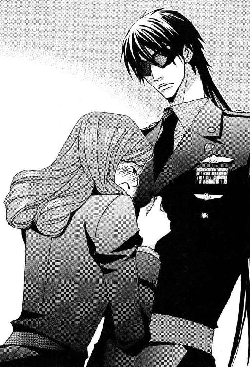
感情に任せた奇矯な行動だが、女性という生きものはなんて可愛いことをするのだろうと思う。抱きしめたくなるところをこらえて言った。
「感染るのはファンデーションだと思うケド。黒い制服だから結構目立つんだぜ」
「はっ、ごめんなさい。つい取り乱しちゃって。私が使っているのは一応こすった程度じゃ化粧崩れしない強力タイプだから、つくのは白粉だけのはずよ。......ほら、落ちたわ」
あわてて離れた彼女が手で払うと、その言葉通り黒い生地にうっすらとついた白い汚れはすぐ消えた。
「なにがあったんだ？」
「話すと少し長くなるんだけど......。あなたのプロジェクトに協力することになって、私の名前で通信科の兵士を選抜したほうが目立たなくていいかもしれないと考えたの。こういうことは通信で交渉するより、中隊長同士直接会って話し合ったほうがスムーズにいくから、エレベーターを降りた足で本部ビルの通信センターに向かったわけ」
「それはありがとう。いい考えだと思うよ。ラクロワ中佐殿には俺から報告しておくが、マジにすげえ助かる」
「通信中隊の場合、指揮官は日勤常駐が決まりだから会えたし、交渉自体はうまくいったのよ。そこへちょうど亜空間通信が入って、司令官殿を呼び出したまではまだ普通のことだったの」
「ふんふん、それで？」
その通信がヴァンダイク方面軍指令本部からなら、ラクロワ中佐に内容を探ってもらう必要があると考えながら、極秘プロジェクトのチーフは相槌を打つ。
上層部に対する疑惑が生じていることは、わりと頭の中がわかりやすいタイプの司令官には伏せておいたほうがいい。
「その時に亜空間通信の受信専用ブースのひとつに使用中の表示が出ていることに気がついて、開閉装置の故障かもしれないと騒ぎになったの。それで──今月の本部勤務は第一、第二連隊なんだけど、第一連隊所属の通信中隊の兵士が手動でブースの扉を開けたのよ。そうしたら......──××××っ！」
顔を真っ赤にして言いよどんだ女性士官は、怒りの形相で大変不謹慎な単語をうなった。
日頃使い慣れている単語なのでルシファードは少しも動じなかったが、悪い予感はむくむくと頭をもたげ始める。
「なんだったんだ？」
「ボビーだったのよっ！ ボビー・ヘインズ軍曹っ。私の中隊に所属する私の部下で、現在はあなたのプロジェクトに参加しているボビーが、第二連隊所属の通信中隊にいる自分の婚約者と、こともあろうに亜空間通信の受信専用ブースでことに及んでいたのよっ！ その真っ最中にドアを手動で開けちゃったのよっ」
「うわー......バカ丸出し」
行方不明の部下の行方判明。
「さらにまだあるのよっ！」
「さらにまだあるのか......」
「とんでもないところを大勢の男たちに見られてしまったというショックで......その......彼女が......というか、彼女の......その......」
真っ赤になったままのメリッサは、次第にしどろもどろになって声が小さくなり、最後はうつむいてしまう。
「ヒステリーでも起こしたのか？」
「......ぬ、抜けなくなっちゃったのよっ！」
拳を作った彼女は覚悟を決めて叫ぶ。
スクリーン・グラスの奥でルシファードの目が大円に見開かれた。
男たちでするワイ談のついでにそんな話を耳にしたことはあったが、身近で発生するとは思ってもみなかった。
ひょっとしてボビーの側にするとかなり痛い状態ではなかろうかと、同性らしい同情的な想像をめぐらす。
「それはー......なんだかとっても大変なことに」
「すっごく大変なことよ。その場にいた男たちはゲラゲラ笑って役に立たないし、私と一緒にいた中隊長は仕事場でなんてことをしているんだと怒り狂うし。私だって恥ずかしくて情けなくて、ボビーに怒りたかったわよぅ～。でも、だれかひとりは真面目に事態を収拾する努力をしなければ、彼女が可哀想じゃないの」
「いや、まったく同感です」
「取り急ぎドアを閉めて、笑っている男たちをブースの近くから追い払ったわ。昼食時間で残り当番の兵士以外、出払っていたのも幸いしたわね。呼び出しを受けた司令官殿がセンターに入室されても絶対悟られないようにときつく言い渡してから、ドクター・ニザリに連絡したのよ」
「的確な判断だな」
黒髪の大尉は孤軍奮闘した彼女をねぎらうように言う。
専門の産婦人科や泌尿器科より、主任医師が顔なじみの内科に頼んだほうが、秘密保持の便宜を期待できる。
カジャとて昼食の差し入れをご馳走になったばかりのメリッサに、つれない態度は取れないだろう。
だが、メリッサは遠い目をしてため息をつく。
「ちょうど場所が通信センターだったから近くにあった通信端末を使ったんだけど、事情をお話ししたらドクター・ニザリが......あの華やかな美少年の顔で......それ～は、それ～は冷たぁく笑って──」
〝まるで犬の交尾だな。行なう場所をわきまえない上に、水をかけても離れないようでは〟
あの毒舌家の内科医とつき合いの深いルシファードには、その時の白氏の口調も表情も全部想像がつく。
「きっつー。でも、いかにも言いそー」
「穴があったら入りたいと思ったわよぅ～。上官として恥ずかしくて、顔から火が出るかと思ったわよぅ～」
両手で顔を覆ったメリッサが、かぶりをふる。
「まあまあ。そいつはベン......じゃなくて、単なるカジャの感想だよ。あんたのことをバカにしたワケじゃねえのは、わかっているだろ？」
「ええ。でも部下の不始末は上官の責任でしょー」
「気持ちはわかる。つーか原因は俺だろーなーと思うと、それなりに少々くるものが。──それで？」
「内科で一番口の固いというナースに精神安定剤と局部筋弛緩剤を持たせて、通信センターに派遣してくださったわ。いくら効き目の範囲を限定しても場所が場所だけに......その......背後にも影響はまぬがれないんじゃないかと思って、どの程度のことを覚悟して用意したらいいのか聞いたの。そうしたら、短時間で効果は消えるし、さほどひどいことにはならないという話だから、ちょっと安心して──とりあえず、ボビーを探しているだろうあなたに連絡しなくちゃと。かくて今に至る、よ」
話の途中から羞恥と憤激が薄れ、メリッサの口調がだんだん投げやりになってきた。
グレたくもなるだろう。
「ありがとう。お疲れさん。居合わせちまった上官のあんたには災難だったが、衆人環視の中ふたり仲よく救急車に乗せられるよりはマシな結末だったよ」
「どちらにしても精神的ケアは必要だわ。彼女は当然のこと、しばらくはボビーも使いものにならないでしょうね」
「あの野郎～。ただでさえ人手の足りない時に恩を仇で倍返ししやがって～。×××になろうが結婚がダメになろうが、俺の知ったことか、××っ」
「恩を仇ってなぁに？ さっきも原因は俺かもって言っていたわよね」
「やつの婚約者はＰＨ編集部の一員だって話だったよな？ 彼女を喜ばせようとして、髪を切った俺をあの野郎が盗み撮りしてやがったんだ」
赤毛の美人士官の眉尻が上がる。
「大事な仕事中に？ なんてこと！」
「どうせ俺は目立つから早晩だれかがやることだろうし、彼女にはプロジェクトの内容と場所を絶対に漏らすなと言って、その場は許した。昼食時にデータを彼女に送りたいと言って、ノート・パソコンを持って出たんだが......。希望通りに加工してやるつもりだったのかもな」
そこまで言ってルシファードは吹き出し、半分笑いながら続けた。
「ある意味、ボビーの献身は......立派に報われたって......ことか......」
「あれがお礼ってことなの？ いやだわぁ～。頭悪いにもほどがあるぅ～」
「いや......円満で......けっ、結構......っ。ふたりは......ラブラブ......？ 幸せ......っ？」
「冗談じゃない。あなたがどれほど大切な仕事をしているのか、わかっていなかったとは言わせないわよっ！」
男が腹をかかえ笑い転げている脇で、メリッサはさかんに憤慨し吼えていたが、やがてつられるように笑い出す。
しばらくふたりは本部ビル裏の駐車場でゲラゲラ笑っていた。
「あーもー笑うっきゃねえや。ボビーの野郎には、ウチに戻ってこなくていいからって伝えてくれる？」
「ええ。ついでにウチの中隊にもしばらく戻ってくるなって言っておくわ。──せっかくお化粧直したのに、また笑いジワと涙で目元が崩れちゃった。置きっ放しにしてきたポーチを取りに通信センターへ戻らないと。ルシファはどこへ行く途中だったの？」
ビルの正面入り口方向を目指し、ふたりは並んで歩き始める。
「需品科に上着の採寸で呼び出された」
「なんですって？ あなた、それがどういうことか知っているの？」
「ああ。おっかねえ話を聞かされたよ。でも新しい上着は早急に必要だし、やられた内容次第では全男性士官のためにも副司令官殿に報告するつもりだ」
「いくら司令官殿がケチで予算の締めつけが厳しいからって、抵抗できない状態の男性士官に欲求不満をぶつけて、ウサ晴らしをするのはおかど違いというものよ。かねてから同性として、あまりにも下品で傲慢な連中だと恥ずかしく思っていたわ。フェミニストのあなたまで悪質なセクハラをされるのは嫌だけれど、その覚悟があるなら止めない。そのかわり、去り際にささやかな復讐をしてやりなさいな」
耳を貸してと言われて身をかがめたルシファードは、メリッサのささやいた復讐法に苦笑を漏らした。
「うわー、俺の帰ったあとがこわいぜ。女って、そーゆー小技の意地悪がうまいよなー」
「あなたが鷹揚過ぎるの。あなたなら最大の効果を発揮するはず。同性の敵討ちと思って実行しなさいね」
「んー。まぁ、それなりにひどいコトされたらね」
「軟弱者。超絶美形のくせにそんな甘い態度で行くと、よってたかって手込めにされちゃうから。一対多数のプレイが好きだと言うなら、ちょうどいいでしょうけど」
「いいえっ。そんな淫らなこと、全然まったくこれっぽっちも好きではありませんっ。アタクシ今、おのれの貞操を守るためには手段を選ばない覚悟を決めました」
彼女が実際に起こり得る事態として話したことに気づいた彼の顔から血の気が引く。
満足そうにうなずいたメリッサは、建物の中から出てきたひとりの男に目をとめ、隣に立つ長身の大尉に笑って告げる。
「あなたと違って、一対多数のプレイが大好きそうなひとが来るわ」
「そんな豪傑が──......なんだ、マルチか」
彼女が知っているのかと言う前に、憲兵科の兵科章をつけた大尉がふたりに気づく。
三十前後で身長百八十センチ、体重八十キロといったところだろうか。基地に勤務する士官の平均的な体形の男だったが、肩まで伸ばしたざんばらな栗毛と不精ひげが、一気に彼を大きく平均から逸脱させていた。
軍服を着ていなければ不審者として、それこそ憲兵隊に通報されそうにむさくるしい。
職業柄か表情に多少険はあるものの、顔立ち自体はハンサムで充分通用する。ひげのせいか、少しすさんだ野性的な感じが男っぽく、女性を惹きつけるセクシーな魅力になっていた。
妙に作り物っぽく浮き上がって見えるターコイズ・ブルーの目を見開き、黒髪の大尉に指を突きつけてわめく。
「貴様はルシファード・オスカーシュタインッ！ ここで会ったのが貴様の運の──......なんで昨夜会った時と髪型が違うんだ？」
「眠っているあいだに小人の床屋さんがきて、切ってくれたんだよ」
「ヘタクソな床屋だな。もう少し短く切りそろえろと紙に書いて、枕の下に入れておけ」
「いくら小人さんだって、ボサ髪のマルチには言われたくないと思うぞ」
「その悪徳商法みたいな呼び名はやめろと言っただろうっ！」
昨夜、通信センターでルシファードが銃撃された時、通報を受けて駆けつけた憲兵隊の指揮官が、このマルチェロ・アリオーニ大尉だった。
最初から殺人未遂の加害者より被害者のほうが気に入らなかったようで、血液貧血に陥って具合の悪い人間に対し、執拗にからんだあげくセクハラまがいの嫌がらせをした。
動けなくなる一歩手前の状態だったルシファードは、しばらくタチの悪い憲兵の所業に耐えていたが、どうやら自分が全面降伏をしない限り、やめるつもりがないらしいと悟ったとたん即座にしっぺ返しを喰らわせた経緯がある。
こんなタイプの男にその仕返しは大変な屈辱であり、根に持ったとしても不思議ではない。
「マルっち、小人さんの本当の職業は靴屋だって知ってる？」
「どっちにしろおとぎ話だろーがっ！ ひとの名前を勝手にアレンジするんじゃねえ」
「メルヘンに合わせて可愛らしく仕上げたんだけど、気に入らなかった？」
メリッサは、怒りの形相で嚙みつく憲兵をのらりくらりとかわす男のとぼけた物言いに感心する。冗談混じりだが、全部ふざけているわけでもない。
アリオーニ大尉のように高圧的な態度を取る男には、どこまでもマイペースなルシファードの言動が癇に触るのもわかる。
「ああ、気に入らねえな！ その面もその言い草も。こうして会ったのはいい機会だ。どっちが男として格が上か、さっさと決着をつけようじゃねえか」
「おまえは準夜勤だからいいが、俺は仕事で忙しいんだよ。遊ぶのはまたにしてくれ」
「ふん。仕事を口実に逃げ出そうってのかよ、臆病ものが！ 宇宙軍の英雄とやらも大したことはねえなぁ」
あざけるセリフがあまりにもよく聞くパターンで、うんざりしたルシファードがそれを隠しもせずに言う。
「しつこくギャンギャン吼えつくんじゃねえ。いい加減うるせえんだよ、フェロモンひげが。少しは男性ホルモンの分泌を抑えろ」
メリッサが脇で吹き出す。
女と見れば手当たり次第に声をかけることで有名な女たらしの憲兵だった。それを〝フェロモンひげ〟とは、あまりに的確なネーミングでおかしい。
笑い声を聞いて、やっと彼女の存在に意識が向かった男が意外そうな表情でつぶやく。
「メリッサ・ラングレー」
「大尉とつけなさい、アリオーニ大尉。あなたに呼び捨てされると、周囲からあらぬ誤解を受けて迷惑だわ」
「メリッサ、こいつのコト知ってるのか？ あらぬ誤解って？」
「知っているもなにも、私がこの基地に転任してきた初日に口説いてきた男よ。下手に親しげな態度を取られたら、彼と寝た女と見なされちゃうわ。そんなお手軽女と思われるのは死んでもごめんよ。──ちなみにワルターも初日から交際を申し込んできたわね」
陽気で理知的で女らしく母性的な温かさのあるメリッサには、たいていの男が惹かれるだろう。気さくだが簡単に落ちるタイプではないので、普通は親しくなるところから始めるものだが──。
「交際ならまだしも即座に求愛するとは、やはりケダモノ」
「なんだとっっっ！」
失礼なことを決めつけたルシファードは、わめいた男をじっと見つめたあと、女友達に感想を報告する。
「断然ワーくんのがいいじゃん」
「でしょう？」
「バカぬかすんじゃねえっ！ セクシーな俺さまのどこが、あんなヘラヘラした軟弱野郎に劣るって言うんだっ！」
これはかなり気にさわる結論だったらしく、マルチェロは真っ赤になって怒った。
基地の二大女たらしと呼ばれているものの、ずっと独身の彼より結婚と離婚をくり返すワルター・シュミットのほうに女性たちは好意的だった。
もちろん憲兵隊の将校はその評価に納得していない。
「だって、あんたは目の前にいるそれが金魚でも、メスだとわかれば口説きそうじゃん」
「女性の美しさをほめたたえてなぜ悪い」
否定しないところがすごい。
「サイズが合えばナットの凹型にでも突っ込みそうなやつはダメだろ」
「俺はヒューマノイド型人類しか相手にしねえよっ」
本人は範囲を狭くした答えのつもりだろうが、実質的な対象者はこの銀河系だけでも星の数ほどいる。
どうも会話の嚙み合わない黒髪の男に代わって、メリッサがズバリ指摘した。
「結婚したら暴力をふるいそうな男なんかイヤよ」
「なんてこったっっっ！ 俺は今は亡き母さんみたいな料理上手で別嬪の女房をもらって、子沢山のにぎやかな家庭を築くのが夢なのにっ。暴力なんかふるうもんかっ。そもそも世の女性はすべて女神だというのが、我がアリオーニ一族の男たちに脈々と受け継がれるポリシーなんだぞっ！」
「全然ダメじゃなーい。殴ったりはしないけど、絶え間なくハラまされ続ける身重の妻が、子供たちの世話に追われながら食事を作っているあいだにも、外では通りすがりの女性に声かけているような男だっていうことでしょ。そんな身勝手な男とだれが本気で恋愛するもんですか」
女性の視点で語られると、いかにアリオーニ一族の男たちが言語道断な連中かよくわかる。
容赦なく一刀両断され、男の夢と誇りを打ち砕かれたマルチェロは意気消沈した。
雨に濡れた野良犬のごとき風情に憐れをもよおしたルシファードが、同性のよしみでほんの少し情けをかける。
「確かに家庭人としてはランク最低だけど、結婚抜きの恋人なら悪くないんじゃねえ？ こんなに暑苦しいからには、ベッドの中でも情熱的だろうし」
「暑苦しいとはなんだ、この野郎。おう！ 情熱的だともよ！ ベッドの中じゃサンバのリズムでハリケーンが吹き荒れるぜ！」
サンバのリズムで陽気に腰を振られて、ルシファードは頭の悪い大型犬を下手にかばうんじゃなかったと心の底からものすごく後悔する。
通信センターで見たくもないものを見せられたメリッサにいたっては、半径五メートルにブリザードが吹き荒れる氷点下の声で応じた。
「......殺すわよ？」
「ちぇっ。......どうせワルター・シュミットが捨てたお古なんぞに興味はねえや」
負け惜しみで言った本人には大して意味のない捨てゼリフだったが、口に出した瞬間にその場の空気が一変する。
「マルチェロ・アリオーニ」
低い声で断罪するように自分の名前を呼ばれた憲兵は、びくりと体を震わせた。
スクリーン・グラスで目の表情が読めない男は、自分より背の低い相手を見据えて静かに命じる。
「今すぐその失言をミズ・ラングレーに謝罪しろ」
「う......」
殺気に近い威圧感にたじろぐところへ、さらに追い討ちがかかった。
「俺は今すぐと言ったぞ」
「す、すまんっ、口がすべった！ 本気で言ったわけじゃない。くやしまぎれだったんだ。悪かった。反省する！」
「よし」
耳を垂れた反省ポーズの犬に対して飼い主がするように、ルシファードは大きくうなずく。
下腹に冷たいしこりを生じさせた威圧感が消えると、屈辱と怒りで顔を紅潮させたマルチェロは黒ずくめの長身に飛びかかり、両手で胸倉をつかむ。
猛獣のように歯を見せて獰猛にうなった。
「......っの野郎ぉ......っ！ なにさまのつもりだ？」
「ちょっと......やめて！」
メリッサのほうが、本気で激怒しているマルチェロの剣幕に青ざめる。
しかし、ルシファードは唇の端を少し曲げ、温もりのない笑みを作った。
「おまえは本当に頭の悪い野郎だな。どんなにマズイことを口走ったのか、いまだにわからねえのか。所詮女の体だけが好きなケダモノには、男の体だけが好きな女しか寄ってこねえよ。おまえのような野郎がメリッサを口説こうなんざ百万年早え」
「ぬかせっ！ 多くの女を喜ばせて楽しませるのがポリシーの俺さまに向かって──痛えっ！」
頭頂部にげんこつが振り下ろされたマルチェロは、相手の胸倉から手を離し頭をかかえる。
ルシファードは女性士官に言った。
「メリッサ。このバカタレにワルターと自分がどう違うのか教えてやれよ」
「そんなに親切にしてあげる価値ないんじゃな～い？ 本人も下半身が満たされれば満足しているようよ。まぁ、ルシファがそう言うのなら教えてもいいけれど」
「こいつ頭使ってねえから、下手をすると一生わからねえよ。よく吼えるが、基本的に性格は素直でいいぜ。あとはしつけ次第だな」
もはやすっかり犬扱いだった。
確かにしつけの悪い犬は社会の迷惑だとメリッサも思う。話を聞く限りでは幸せな家庭に育ったようなので、親のマネをしていれば間違いないと思い込んだのだろう。
「アリオーニ大尉。あなたは女というくくりでしか相手を見ていないでしょ？ ワルターは相手そのものを見るの。女はこう言えば喜ぶってパターンで認識しているあなたと違って、ワルターは相手の性格や好みを考えてから言うわよ。いくら浮気者で女好きな男だとわかった上でのつき合いでも、女のほうだって自分と一緒にいる時は、自分のことだけを一生懸命考えてくれる男がいいに決まっているわ。あなたは女性と関係を持つのが最終目的のようだけど、ワルターは相手を喜ばせて自分を好きになってもらうのが最終目的なの。体じゃなくて心なのよ。相手が喜ぶと自分もすごく喜ぶ。......最後は見ているこちらが痛々しくなるくらいにね」
彼女の最後の言葉は、半分自分に向けたものだった。
体ではなく心で好きになったからこそ、離婚の傷も深いのだと伝わってくる。
つらい気持ちを抑える彼女の悲しそうな微笑みを見て、そんな顔をさせるつもりのなかった男たちは内心周章狼狽した。
「ラングレー大尉。その......本当に悪かったっ。俺は最低なことを言った。心からすまないと思っている。......あんたの言った通り、俺は相手を見ていなかったと思う。俺が相手を軽く見るから、相手にとっての俺も軽いんだってわかった。教えてくれてありがとう」
マルチェロ・アリオーニはルシファードの言ったように〝基本的に性格は素直でいい〟ところを見せて、心から謝罪する。
男は見栄があって、なかなか女に謝らないものだと体験的に知っているメリッサは、それだけで彼の評価をかなり上方修正した。
そして、女から直接言われないと相手が素直に話を聞かないことを見抜いていた黒髪の男友達にも、心の勲章をひとつ追加する。
中隊長ともなると一兵卒にまで目は届かないが、部下の資質を知り能力を伸ばすのは、管理職である将校の大事な仕事のひとつだった。
左胸に現実の勲章をたくさん並べている男は、いとも簡単にそれをやってのける。
「どういたしまして。だれよりあなたが好きで、あなたもその女性ひとりがいればいいと思える相手に出会えることを祈っているわ」
「努力する。──しかーし！ それとこれとは別だぞ。わかっているな、ルシファード・オスカーシュタインッ！」
「わからねえよ。なんの話だ？」
「俺と貴様の勝負の話だっ！ どっちが男として格が上かはっきりさせてやるっ。野郎なんぞになめられてたまるかっ！ 昨日の夜は金色に光る妙な目の色にびびっておくれを取ったが、昼間はその手が使えねーからな」
せっかくメリッサの中で上がった株を自ら下げたことにも気づかず、憲兵は不敵に笑って言い渡す。
厳しくしかられてしょげたり頭にげんこつされて痛がったりしたのに、どうして自分が明らかに格下だと思わないのかが、かえって不思議だった。
階級は同格でも、はたから見ていると上官と部下──というより、ほとんど主人と飼い犬。
見方を変えると、すでに勝負はついているのにまだ悪あがきをしているとも受け取れるが、本人は勝つ気満々だった。
勝負を申し込まれたルシファードは、露骨にうっとうしいという態度で片手を振る。
「なら、おまえが格上ってコトでいーから。お互い忙しい身だ。仕事に行こうぜ」
「貴様、俺をバカにしているなっっっ！」
「少なくとも尊敬はしていません。いちいち怒鳴るな。うるせえよ」
「男同士の神聖な勝負を貴様、なんだと思っているんだっ！」
どうして勝負をするなどという話になってしまったのか、よくわからないまま宇宙軍の英雄は答えた。
「俺が任官して九年のあいだに見てきた〝男同士の神聖な勝負〟を列挙する。腕相撲、腕立て伏せや腹筋の回数比較、マラソンのタイム比較、五百メートル全力疾走のタイム比較、重量挙げ、ビールの飲酒量比較、ウィスキーその他の酒類以下同じ、特定食品の大食い競争、同早食い競争、......、×××の××比較、××の×××、×××の××、×××を××する××──」
聞いているメリッサの目が、だんだんうつろになってきた。
──男って......。
「なぁ、メリッサ。今、俺が上げた中でくだらねえと思わなかったものはあるか？」
「訓練ならともかく、神聖な勝負と呼び名がついたとたん、ものすご──く低レベルになるわね。特に終わりのほうは、それをやるのが十歳未満の子供ならわかるけど。私は持っていないことを神さまに感謝しちゃうくらい。ほぼ全部の女が言うでしょうね。『くだらなーい、バカじゃなーい、サイテー』って」
「というワケで忙しい俺としては、おまえと男同士の神聖な勝負ごっこなんぞで遊んでいるヒマはねーんだよ」
候補に上がったものの中でやったことがあるかという問いに対し、かなりの項目でＹＥＳにチェックが入ったはずの憲兵は、赤面しながらも男の意地で言い返す。
「くだらねーからこそ、楽しいっていうコトだってあるじゃねーかっ！」
「ああ、それは一理あるな。下半身の勝負は抜きにして。だが、今はなにをおいても最優先すべき仕事がある。おまえも男ならわかるな？ マルチェロ・アリオーニ」
アリオーニ大尉は言葉に詰まった。
彼の名を呼んでダメ押しをした男が時折見せる威圧感は、自分より年下の人間が持つものではない。それどころか、この基地の佐官クラスで同等の気迫を部下に示せる上官は、ラクロワ中佐以外いないだろう。
昨夜の出来事は金色に光る目のせいにできたが、たかが落ちこぼれエリートと見なしていた目の前にいる美しい男は、本物の高級品種らしい。
エリートの純血種に対し、雑種の負けん気が大いにかき立てられた。
拳をにぎり、うなるように言う。
「一分もあれば決着はつくぜ。おまえが言ったリストに入ってなかった方法でな」
「ああ、なるほど。男の戦いの基本だから、わざと外したんだが......。一分とはまたずいぶんな自信じゃねえか」
「受けて立つ気のおまえこそ、相当自信があるようじゃねえか。俺様がＫＯしてやるぜ。そのスカした色眼鏡を外しな」
相手が誤解し続けることを期待して挑発する。彼の思惑をさらにあわてたメリッサが後押しした。
「ルシファ！ こんなところで殴り合いのケンカなんてダメよ！」
「あんたたちはバカみたいだと思うだろうが、こればかりは古来からの男の掟でね。特に軍人社会で生きていくには受けるしかねえ。──預かってくれ」
ルシファードは外したスクリーン・グラスを友人の女性士官に差し出す。
両手で受け取ったメリッサは、うっとりと黒髪の大尉を見上げた。
「ま～あ。......あなたの素顔を初めて見たけれど......すごいわ～。予想以上よ。今すぐ永久保存したいくらいの美貌だこと。ああ、この目で見ることができて幸せっ！ 最高っ」
「あれ？ バトル・ボールの時にいただろう？」
「髪の毛でほとんど隠していたじゃないの。頼んだら見せてくれるかしら～って思わないでもなかったけれど、あなたを少しでも嫌な気持ちにさせたくなかったの」
「大人の女の思いやりだよなー。メリッサのそんなトコが俺、好きなんだ。どうせ甘え放題だったんだろーがワルターは本当に大バカ野郎だぜ」
「あら、ありがと～。あなたにそう言われるととってもうれしいわぁ。──と、いうことだから、ルシファの顔は絶対殴らないでちょうだいね、アリオーニ大尉。私だけでなく、基地の全女性を敵に回す覚悟があるなら別だけど」
向き直った女性士官に本気で威嚇された憲兵は、不精ひげの口元を少年のようにとがらせて文句を言う。
「きったねー。そーゆーハンディありかよ」
「俺も顔を殴らねえよ。それで五分だろ」
「よっしゃ！ 行くぜ」
ルシファードは殴り合いで最初から身構えないタイプだったが、憲兵があまりにも無造作に間合いを詰めてきたのには驚く。
「おい？」
「俺は殴り合いで決着をつけるだなんて、一言も言ってねえからな」
「えっ？」
それなら、なにをするつもりだといぶかしく思った時には、ふたりの距離は息がかかるほど近づいていた。
マルチェロはにやりと笑う。
「俺の得意技でリターン・マッチだ」と、言うなり、当惑する相手の隙をついて両手で頭をつかむ。
顔は殴らないと約束したせいもあり、対応がわずかに遅れたルシファードの頭を、身長差による体重を利用したやり方で強引に引き寄せた。
「ん────っっっ！」
驚愕と抗議と嫌悪が混ざった叫び。くぐもっているのは、それを発した口が相手の口にしっかりふさがれているせいだった。
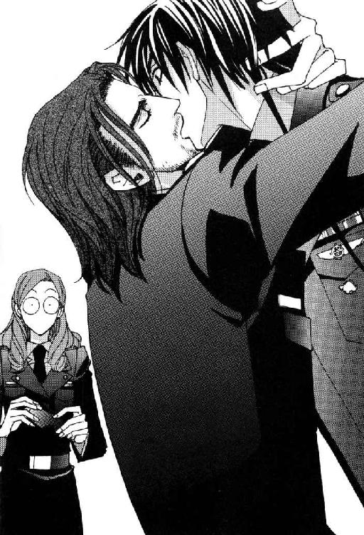
見守るメリッサも、あまりの衝撃に硬直する。預かりものの眼鏡を取り落としそうになり、我に返って軍服の胸ポケットにつるを差し込んだ。
大胆不敵というには、あまりにも突飛な男の勝負だった。ディープ・キスのテクニックで優劣を決めようという男の心理もわからないではないが、普通はあいだに判定役の女性を入れるものではないだろうか。
もっとも容姿はキスの好感度を左右する上、この場にいる判定役に最適なメリッサは、アリオーニ大尉とのキスを拒絶するのはほぼ確実だった。その結果、当人同士で判定するという暴挙に出たわけで──。
最初は振り離そうともがいたルシファードだったが、どうやら暴挙に出るなりの根拠があるテクニックだったらしく、見開いたままの目に面白がる表情が浮かぶ。好きなようにさせることに決めたのか抵抗をやめた。
相変わらず困った男だ。
「あらあらあら。どうしましょ～」
メリッサはほかにだれかこの場に居合わせた人間はいないかと、周囲を見回した。
日中は大勢の人間が働いている本部ビルの正面だが、この時間は閑散としている。
すでに日勤の兵士たちは午後の任務につき、準夜勤務の兵士たちも隣接した士官食堂で食事をすませ、宿舎で仕事に向かう支度をしている頃だった。
任務の都合で食事の時間をずらす必要のあった通信センターの兵士たちも、食堂と職場は本部ビル内の移動ですむ。
──どうして、こーゆー時に限ってだれも通りかからないのよう！
だからこそ、これほど目立つ三人のやりとりが今まで邪魔も入らず、続いてきたとも言えるのだが。
「んんっ！」
今度の抗議の声はアリオーニ大尉のものだった。どうやら相手の攻撃を見切ったルシファードが反撃に転じたらしい。
実際、黒髪の大尉はかなりキスがうまいのを体験者のメリッサは知っている。彼が本気になれば、女たらしのワルターも顔色を失うだろう。
全部年上の女性たちに教えてもらったと言っていた。いくらルシファードの中身が天然ボケ気味でも、これほど美貌の男を押し倒すからには相応の覚悟がいる。さまざまな面で自分に自信のある女性でなければ、そんな大胆な真似はできない。
つまり相手を悦ばせる自信を持つ女ばかりが、彼を色々教育したのだ。
ライラも情熱的な恋人がほしいなら不向きだが、とても優しくて女をいい気分にさせてくれる男だと言っていたから、体力勝負で数をこなすのが自慢らしいマルチェロと正反対のタイプだった。
メリッサはすぐによそ見をやめ、しっかりと〝男同士の神聖な勝負〟に見入る。
──カメラがない以上、記憶細胞に焼き付けなくちゃっ！ こんな楽しい光景、二度とお目にかかれないもの。
ルシファードは気づいていないようだが、メリッサは前夫のワルターに対しても堂々と言い切った通り、パーブル・ヘヴンを毎月購入している愛読者だった。
恋愛は面倒だが見目のいい男は大好きという彼女は、若干内容が偏向していても連隊の違うハンサムたちの近況がわかり、写真が多くて笑える小説もあるあの雑誌が、かなり気に入っている。
難を言えば軍病院の二大美形医師が、取り扱い厳禁になっている点くらいだった。せめて写真くらいは解禁して欲しいと思う。
あの雑誌が提供する根拠のない同性愛疑惑には、妄想をかき立てられて楽しい。ファンタジーとわかっているからこそ、絶対にありえない場面を想像できる。
その点で、前夫のワルターとルシファードのカップリングには全然萌えないメリッサだった。一緒に暮らして生態をすべて知っている前夫になど小指の先ほどのロマンもない。
セクシーで野性的なアリオーニ大尉（ひげアリ←チェック・ポイント）と美貌のルシファードという構図は悪くない。
心理的力関係や身長差ならルシファードが攻だろうが、おバカな犬攻のご主人さま受というのも萌える。
特殊な専門用語をまじえて思考するあたり、すでに彼女は筋金入りの愛読者だった。
──角度を変えて見ちゃったりして......。
図体の大きな男ふたりの濃厚なキス・シーンなど、どう見ても気持ち悪いはずなのだが、ＰＨモードの入っているメリッサの目には、かなりときめく光景だった。
いつの間にか相手の腰に手を回し、逃れられないようにしていたルシファードが拘束を解いて身を離す。
アリオーニ大尉の肩を笑顔で軽くたたいて言った。
「互角ってトコだな。いい勉強させてもらったぜ」
余裕の笑顔の彼に対し、片手で口を覆った憲兵はショックを受けたらしく無言を通す。それを見ても勝敗は明らかだったが、互角というところに男のプライドへの配慮がある。
ルシファードは軽く眉をしかめ、片手の甲で口元から頰にかけてをこすってつぶやく。
「あー、ヒゲが痛え......」
その低い声にくらっときた。
──萌え......っっっ！ いや～ん。今のセリフ、なんて萌えるの～っ♡♡♡
ルシファードの口からこのセリフを聞けただけでも今日は最高の一日だった。ボビーの失態の記憶など、はるか彼方に消え失せる。
あとはもう、同好の士にひたすら言いふらして盛り上がるだけだ。早く終われ、勤務時間。
メリッサは満面の笑顔でスクリーン・グラスを差し出した。
「勝利おめでとう。ところでライラは、もう宇宙港警備？」
「いや。今日から夜勤シフトで日中は非番だから、まだ部屋にいるはずだ。俺がずっと隊を抜けるんで、なにかあった場合のために書類仕事を前倒しにかたづけると言っていた。──さては密告る気だな？」
「あらー、仲のいいお友達と楽しみを分かち合いたいだけよ～。そのお楽しみがちょっと特殊なだけで～」
「男たらしだの男殺しだのって、もう勝手に好きなように呼べよ。この基地に来てから、すっかり野郎とのベロチューに慣れちまった自分が悲しいぜ。だけど、それって本当に俺だけが悪いのか？」
ぶつぶつ言いながら再びスクリーン・グラスをかけたルシファードは、ふと思いついて背後の憲兵を顧みる。
「宇宙港爆破事件の資料は、みんな都市警察に渡しちまったのか？」
「ああ。コピーできるものはコピーを渡したが。あいつらは俺たちが連邦警察手配の犯罪者をろくにチェックもせず通すから、市の治安が悪化する一方なんだとクソミソ言いながら持っていきやがったぜ。だけど手配犯の見落としは仕方がねえよ。セラドンが資料を止めて送ってきやがらねえからよ」
なぜルシファードがそんなことを聞くのだと疑問に思っただろうが、鬱憤ばらしに腹立たしい基地の内情も暴露する。
「セラドン？ ヴァンダイク方面軍指令本部のある惑星セラドンか？」
「そう。この基地が中央から取り残されているのは、銀河系の端っこという位置関係ばかりじゃねえ。重要な情報はみんなセラドン止まりだ。おまえが関わったＡＦＳの事故も、情報は届いていなかった」
「──アリオーニ大尉。あんたのかつての勤務地に惑星セラドンは入っているか？」
唐突な質問を受けた男は、意味ありげに口の端を曲げて笑った。
「いや。地上勤務はここが初めてだ。昨夜おまえを撃った通信兵の経歴には、セラドンがあったっけな。どうやらなにかを嗅ぎ回っているらしいから、もっと面白いことを教えてやろうか、宇宙軍の英雄さんよ」
腕組みをし、挑戦的な目で見上げるマルチェロ・アリオーニの表情に女好きな単純バカの面影はない。それは事件の裏を探り、執拗に真相を追い続ける捜査官の顔だった。
「この基地の司令官に着任した中で、セラドン出身者は四人いる。いずれも二、三年のごく短期間で交代しているが、そいつらの代になるといきなり基地予算が大幅にダウンされ、予算削減のあおりで色々と縮小、廃止された。真っ先に消えたのは情報科や特殊戦科だ。変だと思わねえか？ 天下り司令官が逆に予算を削減されて、基地の目や耳になるところから潰していく。そしてサッサといなくなる。俺には基地を弱体化するために派遣されてきたように思えるんだがな。おまけに悪質な犯罪者も惑星に入れ放題」
「大尉。その話をセラドン出身者の前で絶対にするんじゃないぞ」
「言ったら、昨夜のおまえのように撃たれるわけか？ はははー、面白え。面白えと言えばこの惑星の政治家や官僚、しかもわりと上のほうの連中に事故死や自殺が多いんだぜ。この規模でこの数は、ほかの惑星の統計と比較してもちょっと多いんじゃねえかなと思う程度に。二、三度自殺が続いて変だなと思ったから、過去のマスコミ報道をさかのぼって調べてみた。ひとり死ぬとさほど間をおかず、その関係部署の人間も死ぬ。なにかの口封じだろうな」
それに対してルシファードはなんの反応も返さず、関係のないことをたずねる。
「マルチ、コンピュータは得意か？」
「ああ。ハッカーどもと馴れ合うと立場上ヤバイんでつるんだことはねーがな。残念ながら流民街の地下には歯が立たなかった」
ターコイズ・ブルーの目が一瞬鋭さを増し、相手の表情をうかがう。
しかし、スクリーン・グラスに隠された美貌はなんの変化も見せない。
憲兵隊長は軽く肩をすくめて締めくくる。
「ま、その程度の腕だ」
「あとで地下になにがあったか教えてやる」
「うお......っ！ そいつはすげえ。マジにわかったのか？」
喜色満面のマルチェロは、やはりご褒美を前にして太い尾をぶんぶん振っている大型犬に似ていた。
メリッサはどうやらボビーの後釜が見つかったようで安心する。しかも意外にかなり役に立ちそうだった。
男同士の神聖な勝負で負けた以上、ルシファードの命令には素直に従うだろう。
「ところで仕事は暇か？ 今に限ったことじゃなく平均的な話として」
「ヒマだぜー。女の尻を追い回しているだけじゃ時間を潰せなくて、ただの興味からよけいなことを嗅ぎ回っちまったくらいすげえヒマだ」
「暇潰しにちょうどいい仕事があるんだが」
「乗った！ 久々に楽しくなりそうだぜ。五年前この基地に送り込まれて以来、初めて労働意欲がわいてきた」
「なにをして左遷されたんだ？ ワルターみたいに上官の女房との不倫か？ ──っと、メリッサはそのことを知らなかった？ うわー、やべえ。ワルター、ごめん～」
この場にいない友人に謝る。
毎度共犯的な男の友情に苦笑した赤毛の前妻は、口をすべらせてあわてる男に気にするなと片手を軽く振った。
「いかにもな左遷理由で逆に驚かないわよ」
「俺は女で失敗したことはねえよ。子沢山のにぎやかな家庭がほしいのに、亭主持ちを口説いても意味ねえだろ」
「だったら、おまえはやり方を間違えているぞ、マルチ」
「わかったって。誠意を以て努力する。──俺が左遷されたのは、乗っていた戦艦の上層部が希少金属の密輸をしていたのを嗅ぎ付けたせいだ。証拠をそろえる前に部下にチクられて、逆にハメられちまった」
「それは気の毒に」
「俺が間抜けだっただけさ。そういうこともあるだろうよ」
あっさり言ってのける。あまり過去のことで悩まない性格らしい。
「それでは早速と言いたいところだが、これから需品科に行かないとまずい。あとで連絡するということでいいか？」
「かまわねえが、需品科になにしに？」
「上着を作るために採寸で」
「よせっ！ あそこの女どもは人間じゃねえぞっ。飢えたメス狼の群れに自ら飛び込むようなモンだぞっ！ 基地の町にある仕立て屋を紹介するから自腹で作れっ！」
顔色を変えて、必死で引き止める。
さすが情報通の憲兵隊は抜け道を知っていた。
非常にその方向に心は動いたが、被害に遭ったマコトやパトリックの悲痛な表情を思い出すと、やはり解決すべき問題だと思う。
「申し出は大変ありがたいが、一度体験してみることにするよ。それを報告して副司令官殿に改善を求める。全男性兵士のためにも、なんとかしねえとな」
「......エライッ！ 俺、すげー尊敬するぜ。頑張って行ってこい。健闘を祈るっ」
「おまえに言われると、かえって気力が萎える」
女好きのマルチェロ・アリオーニにすら嫌がられる集団と知って、憂鬱にならないほうがおかしい。
昨日に続き、今日も波乱と災厄に満ちた日になりそうな予感がした──。
７
最上階ワンフロアすべてを占める特別室直通の高速エレベーターが一階で止まる。なんの作動音もなくなめらかに開いた扉の奥にふたりの男がいた。
銀河連邦宇宙軍の制服を着た男が、同乗していた私服の男に素早く敬礼する。
ゆったりした砂色のスーツを来た銀髪の男は軽くうなずいてそれに答え、定員二十人ほどのエレベーターを降りていく。
ほかに人影のないエレベーター・ホールの床は、顔が映るほど磨き上げられた天然石がはめ込まれている。スーツの男が床に降り立った時、左手でつくステッキの先が固い音を響かせた。
その音を耳にした軍人のおもてに一瞬、くやしさと痛ましさの入り混じった表情が浮かぶ。わずかに迷ったのち、彼はおのれの思いを言葉にした。
「Ｏ２......失礼、オスカーシュタイン少将殿......どうぞ、くれぐれもお気をつけて」
連邦宇宙軍の一部では伝説の存在となりつつあるかつての上官は、頭文字から由来するＯ２という通称のほうがなじみ深い。
色の濃いスクリーン・グラスが完全に目元を隠していても、その顔の完璧といって過言ではない造形美は充分うかがえた。隠された目が何色か、その目がこちらを見たのか──わからない。
ただ、ロビーの方向に向き直りかけていた男の横顔がかすかに微笑む。
深い響きの低い声が言った。
「私の暗殺を目論んだやつがだれかはわかっている。そのうち生まれてきたことを後悔することになるだろう」
口調自体は穏やかと言ってもいい。
だが、声音の底にひそむ非人間的な冷たさは、部下だった男の背筋に戦慄を走らせた。
情報部のトップにふさわしく大半の物事を突き放して見ている彼がこんな声で語る時、その言葉は必ず訪れる未来を意味する。
その予言を耳にしたものが戦慄を禁じえないのは、彼が人間の命を一個人という存在ではなく、単なる事象として捉えているからだった。
目的達成の障害となる要素を消去するという感覚で抹殺命令を下すのが権力者だとしても、超Ａ級テレパシストであるＯ２は人間の認識が他人と根本的に違う。
彼に人間を定義させると【エネルギーの一形態】程度のものになるだろう。だれの命でも彼には平等にその程度のものだった。
「──すみません、サー。出過ぎたことを申しました」
「いや。君の気遣いには感謝する。黒幕の関与の証拠をまだ発見できない私の部下も、君のように思いやり深ければ、もう少し仕事熱心になるのだろうがな。人望のない私が悪いせいだと日々反省している」
──ひーっ、相変わらずだぁーっ。
かつての職場の同僚たちに同情する。なんの成果も上げられない状況でＯ２に報告するのはさぞつらかろう。が、それでも凍りつくような嫌味を言われているうちはまだマシだった。
上官から彼の十八番のセリフを浴びせられようものなら、どんなに図太い神経の持ち主でも丸一日は鬱状態に陥る。不思議なことに同じセリフをほかの人間が口にしても、あの五十階建てビルの屋上から蹴落とされるような恐怖と絶望感はない。
そのセリフだけは言われまいとして、必死に働いた日々を思い出す。
同僚たちと生き地獄だとグチっていたが、密度の濃い充実した日々だった。あの時間が自分を鍛え、今の自信の源になっている。自分の能力を信頼できるというのは、これほど行動を自由にするものなのかとわかって驚いた。
当時はうらみもしたが、彼のもとを離れた今は、容赦なく部下を鍛え上げてくれた上官に感謝し尊敬している。
情報部部長を爆殺しようとした人間がだれであれ、恐れ知らずにもほどがあった。Ｏ２個人を敵に回しただけでも充分すぎるほどまずいのに、各機関に散った情報部出身者すべてを敵に回したも同然だった。
かつての部下たちは現在の指揮系統を無視してもＯ２のために動く。
「少将殿。もし私でお役に立てることがありましたら、なんなりと申しつけください」
「ありがとう。その時がきたら、あてにさせてもらう」
世慣れない少年のように緊張で声の上ずった男の申し出に対し、オスカーシュタイン少将は穏やかに答えると杖の音をエレベーター・ホールに響かせながら立ち去った。
残された男は感動に震える指先で、現在の上官が待つ特別室のある階のパネルを押す。
Ｏ２は階級に関係なく、直属の部下ではないものには節度のある態度で接するので、ほとんど社交辞令で言ったのだとわからないほどウブではない。
しかし──。
それでも、うれしいものはうれしいのだ。
あのＯ２に〝あてにする〟と言われたら、命がけになってもがんばろうと思ってしまう。その機会が訪れることを神に祈りたくなる。
そう考えるかつての部下たちが多いことをＯ２は知らない。その気になれば他人の思考をたやすく読み取れるテレパシストなのに。
カリスマとは男たらしの別名だった──。
エレベーター・ホールを抜けるとカーペットを敷き詰めた床に変わり、他人の注意を引く杖の音はしなくなった。
たとえ音が響いてもロビーにいるものは従業員でさえ彼に気づかない。Ｏ２が精神感応で心理操作しているせいだった。
本来、水面下で活動する情報部の人間が、他者の記憶に残るほど目立つのは好ましくない。だからこそ部下のひとりであるルシファードは二重軍籍を持ち、その場に存在する別の理由を作っている。
情報部最高指揮官としての仕事に忙殺され現場から遠ざかって久しくても、軍の施設以外の場所で極力目立たないよう行動するのは、Ｏ２の長年にわたる習慣だった。
まして今は命をねらわれている身なので、慎重に行動してくれと部下たちがうるさい。
一応、力を使って半径十キロ円内を走査し、今のところ誰かに殺意を抱いて行動している人間がいないことは確認してある。
相手が殺害可能な距離に接近すると、深層心理への条件つき暗示で暗殺者に変貌させる方法は、最近要人暗殺によく使われる手法で、警備関係者のあいだでは深刻な問題になっていた。
だが、殺意を察知してから暗殺者の精神に干渉しても充分抑止可能なＯ２には、脅威と感じる性質のものではない。
コンピュータ制御の爆発物と無線の指令を受けるタイプの爆発物は、存在すると仮定し、爆破命令を発した。反応がなかったので、安全を確認する。
精神感応で感知もコントロールもできないのは、昔ながらのシンプルな時限爆弾やブービートラップの類だが、人口密集地帯で行動を把握していない特定の人物を暗殺するには不向きな手法だった。
これだけ注意しても殺されるとしたら、そんな運命だったのだと受け入れるしかない。
ロビーを横切ってホテルの正面玄関から出ると、タイミングよく車寄せに滑り込んできた一台のリニアカーが、彼のすぐ脇に停車する。
「お疲れさまでした、少将殿」
運転席の部下が、密談のために呼び出された情報部の最高責任者をねぎらう。
「わざわざ三課課長の君が運転手をすることはあるまい」
「若い連中だと萎縮して、万が一の事態が生じた時、適切に対処できませんよ」
「未熟者どもが」
「あなたは特別です。大目に見てやってください」
周囲の状況にさりげなく注意を払いながら、後部座席に乗り込んだ上官にたずねた。
「足は痛みませんでしたか？」
「うずく程度のものだ。大して歩いていない。わずらわしいのは痛みより杖を使わねばならんことのほうだな」
「お気持ちはわかりますが、あせって無理をさせると逆に治癒が遅れますので──」
車を発進させる部下の背にＯ２は何度目かの不満を訴える。
「これほど長期間行動が制限されると知っていたら義肢を選択したのに、どうして医者たちは患者の意志を尊重しようとしないのか」
「私が思うに〝どちらでもかまわないが早く仕事に復帰できるほうがいい〟というあなたの発言は、仕事中毒者の中毒症状が言わせたもので、自分の肉体に対する責任能力がないと見なされたのではないかと」
ユーモアを交えた部下の返事は、結構真相に近いかもしれない。日々人々に健康を取り戻すべく激務をこなす医師たちが、自分の肉体を粗末にする患者の発言を快く思わないのは当然だろう。
「本当にどちらでもかまわなかったのだがな。人工筋肉の義肢も、ほとんど本物と遜色ない性能だったと記憶している」
「義肢ではメンテナンスの必要が生じます。養肢はもともと本人の細胞を増殖させたものですから、完全に結合すれば事実上欠損した部分を復活させたことになり、その違いは大きいと思います」
「なるほど。メンテナンスが必要だとは知らなかった。そうなると時間のロスは相殺できる」
おのれの肉体について語っているとは到底思えない上官の答えを聞き、部下は改めて超Ａ級超能力者の特異な内面を苦々しく思う。
一月前、情報部本部ビルに戻る途中の道で、Ｏ２と第七課課長代理のハーラン・リー少佐の乗った車が、並走してきたリニアカーの爆発に巻き込まれた。爆発し四散した車体の破片は凶器となり、斜め後方を走行中の車を乗員の肉体ごと貫く。
爆発した車には誰も乗っていなかった。
回送中の無人車なのに規定速度を上回るスピードを出していると気づいた超能力者は、一瞬の判断で双方の走行制御システムに介入した。自分の車に急ブレーキをかけ、無人車は逆にスピードを上げる。
遠く離れた場所にいる暗殺者がコンピュータの監視画面で二台の並走を確認し、爆破スイッチを押す。爆破装置がその指令を受けて爆発するまでの一秒もないわずかな時間差が、二台のあいだに十メートルの距離を生んだ。
現場検証の結果、爆発は情報部部長を標的とした暗殺未遂と断定され、現在は軍の捜査機関が動いている。
今後のためにも情報部がシミュレーションしてみると、情報部部長は一瞬のうちに最良の判断を下したことがわかった。
並走したまま真横で爆発した時は二名とも即死。同じ十メートルの差で二台の車の位置が逆の場合、運転席のリー少佐は軽傷、後部座席のＯ２は瀕死もしくは即死。
現実にリー少佐は右半身の胸部と腹部に車体の破片を浴び、上官は左半身に重傷を負った。二名とも重傷だったものの、救命措置が早かったこともあり命に別状はない。
問題になるのは、危機を未然に防ぐために存在しながらトップを暗殺されかかった情報部のメンツと、トップ不在による深刻な仕事の停滞だろう。
Ｏ２はとっさに腕で左胸をかばい心臓を破片から守った。左足はズタズタに引き裂かれ、膝上から左足切断。そして、左顔面に浴びた細かい破片によって傷つけられた眼球は摘出するしかなかった。
左腕と顔面の傷は癒え、左足もまだ全体重をかけて歩行できるまでには至っていないが、もはや完治までさほど時間を必要としない。ただ左目だけは短期間で如何ともしがたく、現在彼の眼窩には精巧な義眼がはめ込まれていた。
周辺の神経とともに培養した眼球を持ち主に接合する手術は、並みの総合病院では行なえないほど難しく、かつ患者は長期間病院に拘束される。暗殺未遂による混乱と合計しても十日に満たないＯ２の不在で、すでに色々な問題が発生していた。
各課の課長たちは相談した結果、まことに遺憾ながら目の手術だけは後日にしてもらえないだろうかと上官に恐る恐る頼むことになった。
冗談ではなく、戦略コンピュータ並みに情報処理能力の高い部長がいなければ、情報部は職務遂行に多大な支障をきたす。
『安心しろ。もともと見えていないのだから、このままでも何ら支障はない』
暗殺未遂現場に救急隊が駆け付けるより早く、自分の痛覚をマヒさせてケガの止血処置を行なっていたという男は、不運にもクジ引きで部下代表になった三課の課長ピネイロ中佐に対し、事もなげに言ってのけた。
混合種と登録されているオスカーシュタイン少将は、まったく年を取る気配のない美貌とコンピュータを自在に操る超能力、どれほど多忙でも疲れを見せない体力から、本当はアンドロイドではないかと長い間うわさされ、部下ですら半ば本気で信じるものもいた。
皮肉なことに今回の暗殺未遂事件で、彼は自分が血肉を備えたヒューマノイド型人類である証拠を示したわけだが、おのれの肉体を突き放して語る言葉を耳にするたび、逆にアンドロイドだと言われたほうがよほど納得できると思ってしまう。
「情報部の体面上、さしたるダメージはなかったと内外にアピールするためにも、せめて足だけは完全に治していただきたいのです」
「情報部の体面を口にするなら、さっさとやつらの関与を示す動かぬ証拠を押さえるんだな。特捜部に先を越されようものなら、宇宙軍中の笑いものだぞ。あれから多少の進展はあったのか？」
「......それが......ご報告できるようなことはまだ......。申しわけありませんっ。全員通常の仕事に追われておりまして、なかなか応援に人員をさけない状況です」
重ねてクジ運が悪かったばかりに、Ｏ２警護という一番つらい役まで押しつけられた三課の中佐は、冷や汗をかきながら弁明する。
Ｏ２が不在のあいだ、彼ひとりが処理してきた仕事は七つの課の課長たちが分担して処理していたが、そのプラス七分の一を一日で処理仕切れない課長は多かった。
部長の仕事のほうが重要なので優先処理する分、課の日常業務にしわ寄せがいく。量の多少に違いはあるにせよ、Ｏ２が復帰した今も仕事の先送りはまだ続いていた。
当然、そんな言いわけが通用する上官ではない。
果たして──。
「無能者」
低い声でゆっくりと、この上もないさげすみをこめた一言。
部下の誰もが恐れる情報部部長十八番のセリフが出た。
無能のあとに者をつけただけの短い言葉が、なぜこれほど聞くものを打ちのめすのか。
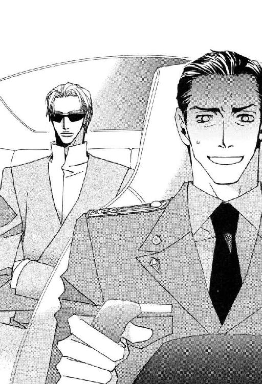
ピネイロ中佐は左胸を押さえて低くうめいた。この強いストレスは頭頂部が薄くなりつつある髪に絶対よくない。
「......久々にそのお言葉を聞きました。新人の頃から幾度となく言われているにもかかわらず、どうして毎度新鮮な衝撃力があるのでしょう」
「君が私の叱責に慣れるような図太い感性の持ち主だったら、とうの昔に左遷している」
「はぁ、左様ですか。それはありがとうございます」
なんについて礼を言っているのか自分でもよくわからないが、妻子のいる身として左遷をまぬがれたことには感謝したい。──これから左遷されるかもしれないにしても。
「進展のないまま放置しておくわけにもいくまい。いかに無能なおまえたちでも証拠をつかめるよう、もう一度片足を吹き飛ばされる程度の隙を作ってやろうか？」
「いえ。あまりにも危険ですし、くり返されては我々部下の面目が立ちません」
「無能な集団の分際で体面だの面目だのという単語を口にするとはおこがましい。言葉はよく意味を理解した上、適切に使いたまえ」
小さな欠伸を嚙み殺したＯ２は物憂げに言う。
タフで陽気というのがピネイロ中佐を語る周囲の人物評だったが、誰しも限界はある。この調子で会話を続けたら、いかに打たれ強い性格でも円形脱毛症になりかねない。
どうせ無能な集団と言われたのだから、こわいものなどないとばかりに言ってしまう。
「いっそのこと、意趣返しに少将殿ご自身で片付けられてはいかがですか？」
「調子のいいところは相変わらずだな、アラン。見えすいた策を弄するのは時間のムダだと何度注意すれば直る」
親しげに呼びかけられたピネイロ少佐は、顔面蒼白になる。十数年ぶりにファースト・ネームで呼ばれてしまった。
何度か同じ状況に遭遇した彼の経験によると、聞いているうちに胃が痛み出すほど厳しい説教の前兆だった。観念して運転席で目を閉じる。
しかし、中央本部の課長にまでなった優秀な部下をいまさら教育する必要もないと思ったのか、Ｏ２の小言はそれだけにとどまり、代わりに別の一言がつけ加えられた。
「これはゲームだ」
「は？」
「やつらとおまえたちとの。私の命を賭けた攻防だな」
「やめてください、Ｏ２。我々はあなたご自身の命をゲームの的にするつもりは断じてありません。手足は細胞培養できても、死んだ人間を生き返らせることは不可能なんですよ。もう少しご自分の身を大切になさってください！」
上官暗殺未遂の第一報を聞いた時の衝撃を思い返し、ピネイロ中佐は憤然とする。
自分の肉体を粗末にするのは本人の勝手だが、自分たちには唯一無二の上官に命をもてあそぶマネはして欲しくない。
「ゲームの的が自分で逃げ回っているうちに、さっさと証拠を押さえろと言っているだけだ。私はあんな下種にくれてやるほど、自分の命を安いとは思っていない。命を賭けても欲しいものはほかにある」
職務上うらみを買いやすく暗殺される心当たりなど山程あって、どれが本命なのかわからないとは特捜部に言ってある。
実際、面と向かって脅迫されなかったら、暗殺を指示した人間にたどりつくまでもっと時間がかかっただろう。
「アイ・サー。......ふがいない部下たちで申しわけございません。例の件の発表前に片付かなければ、どこからも文句が出ないような証拠を捏造してでも始末しますから」
「それも選択肢のひとつなのはわかるが、発表後はあちらに私を殺す理由がなくなることを君は失念している。時間が限られているのは君たちのほうだぞ。結果を知って、腹いせに私をどうこうしようと考えるほど連中がおろかなら、それはまた別の話だ。──情報部のメンツを云々しないなら、放っておくのも手だろう」
「そういうわけには......っ！ Ｏ２、この際はっきり申し上げますが、これはあなた個人が売られたケンカではありませんからね。あの××野郎どもにナメられたまま、放置しておけるわけがないでしょう。断固報復あるのみですっ。それがあなたをのぞく情報部一同の総意と受け取ってくださってもかまいません」
おのれの命に重きを置かず、どこまでもクールに徹する上官が捜査の放棄すら口にするにいたって、猛然と反発を感じた部下は情報部に流れる空気を代弁して宣言した。
日頃Ｏ２を好ましく思っていない部下たちも、今回の暗殺未遂は情報部に対する挑戦という見方で一致している。
たとえ相手が、銀河連邦宇宙軍最大勢力を誇るシアノス方面軍最高司令官やその閨閥の汎銀河系複合企業体であろうとも、軍を陰で支えてきた情報部にケンカを売って無事にすむと思ってもらっては困る。
やる気満々で直接的な仕返しを唱える武闘派（主に破壊工作担当の第六課と巻き添えになったリー少佐の所属する特殊能力者集団の第七課）と、特捜部への捜査協力という黒子に徹するべきだという穏健派（総合情報収集および分析担当の第一課と情報工作担当の第二課）の対決を中立の課がなだめている状況だった。
仕事に忙殺されて調査が進まないため、早晩武闘派を抑え切れなくなるだろう。その時は特殊工作担当の第三課が乗り出し、証拠の捏造という手段を取るべきだとピネイロ中佐は考えている。
なんのことはない。どの課も自分たちが中心になって仕返しをしたいだけだった。
そのあたりの経緯が簡単に想像のつく情報部部長は、くすっと短い笑いを漏らす。
その小さな笑いが、つい拳を握って熱くなった部下に理性を取り戻させる。
「......もしかして私は今、少将殿にあおられたのでしょうか？」
「いや、私は本当にどちらでもかまわない。この件について私は担当資格のない当事者だ。全面的に君たちに任せる。好きにしたまえ。なにか問題を起こしても責任は私が持つ」
「ありがとうございます、サー」
アラン・ピネイロは心から礼を述べた。
おそらくＯ２はひとりで敵を片付ける能力を持っている。それでも今回に限らず全面的に部下を信頼して任せ、やんちゃを苦笑して許す度量があった。
情報部は本部のほかの人間たちが想像しているほど、Ｏ２が恐怖で支配する独裁体制の部署ではない。そもそも外部に計画が漏れれば査問委員会ものの重要な局面で、責任は自分が持つから好きにやれなどと、こんな軽い調子で部下に言える上官が宇宙軍に何人いるだろう。
自分も多くの部下を指揮する立場になって、ようやくこの男の真の実力を知った。
あ と が き
どもども。作者でございます。
この巻から、挿画を麻々原絵里依先生にお願いすることになりました。
読者の皆さんには麻々原先生のお描きになるキャラクターたちに一気になじんでいただこうという意図のもと文庫第九巻・第十巻を同日発売！ そして連載中の小説ウィングスも！ この暴挙に仕事の重なった麻々原先生も編集部・印刷所・作者、さらにみなさんのお財布も半死半生......。
とまれ新コンビにて続く『三千世界の鴉を殺し』をこれからもよろしくお願いいたします。
色々あったルシファードの長過ぎる休日がやっと前の巻で終わったと思ったら、次の日もまた長い一日になりそうです。災厄を呼ぶ男自身にも次々と降りかかる男難女難。もはや、その合間を縫うように仕事をしているとしか思えません。実にタフな主人公だよなぁと書いている作者が感心する有様。
前の巻から登場している三千世界初のヒゲ部・マルっちことマルチェロ・アリオーニ大尉。ヒゲ嫌いの作者が、山ほどヒゲ男の出てくる某ファンタジー大作映画にハマらなかったら、いまだにヒゲ嫌いが続いて絶対に登場させなかっただろうというキャラです。今回はイラスト入りで、すごくいや～んなコトをしております。書いた本人もいや～んな気持ちです。なのに連載時、結構ヒゲ萌えの読者さんの反応がよかった......。
あのシーンは某ファンタジー映画における王様激ラブな私の担当Ｉ女史に捧げます。マルっちはラテンな男なので、苦労人の王様とはまったく違いますけどヒゲつながりで。
挿画だけを見たひとには別のジャンルの小説と間違えられてしまいそうですが......つか、そっちのジャンルに分けられているケースを大変よく見かけますが、主人公もマルっちも女性が好きです。作者も女性キャラを書くのが大好きです。だから逃げないで読んでくださーい。お願いしまーす。
読者の方からのお手紙に、タイトルにもなっている三千世界の意味がわからないというお言葉がありました。以前にも書きましたようにタイトルそのものは都々逸からとっていますが、三千世界というのは仏教の言葉で三千大千世界ともいい、全世界という意味です。私の国語辞典に載っていただけではなく、使っているワープロもすんなり変換してくれたのに驚きました。偶然ながら、私たちが生きている天の川銀河のような銀河系がたくさん集まった宇宙と、共通するイメージがあるような気がします。キリスト教の旧約聖書がファンタジーなら、仏教の世界観はＳＦという感じです。
私たちが日常的に使っている言葉の中には、仏教由来の単語が結構あります。刹那もそうです。文字の密度による黒さもほどよく、ハンディ・タイプではない大きな時点で調べると意味もよし。この漢字を目にするたび剣を抜いた瞬間のように鋭い光が一瞬キラッと輝くような気がします。
シェイクスピアの戯曲『ロミオとジュリエット』に「名前ってなに？ バラの名前をかえてみても香りはそのまま」という有名なセリフがありますが、漢字のない英国だから生まれたセリフだろうと私は思いますね。だって薔薇って書けば、もうあの美しい花が頭に浮かぶし。
観世音菩薩と書けば、ちょいとむっちり色っぽくて（罰当たり）光背を背負い繊細なアクセサリーをつけた金色のあのお姿が浮かんで来ませんか？ 迦陵頻伽の文字を辞書に発見した時には、それこそ雷に撃たれたかのような衝撃が。この四文字の連なりは耽美以外のなにものでもありませんとも！ 沙羅双樹の四文字もバランス最高。文字に美意識をこめた昔のひとは偉かった。漢字を発明した中国万歳。
あ？ 単におまえが漢字フェチなだけだろう？ ううう......否定できないかも。画数多くて見た目が黒くなる字が大好きー。でも「鬱」は苦手。手で書くと画数が多すぎて限られたスペースに入らなかったり、バランスを崩して土砂崩れ（もはやこの辺は感覚）起こすし。一番嫌なのは意味だけど。でも気鬱だとちょっとデカダンス。うふ。
すっかり読者に引かれた後書きになってしまいました。最近、色々な「萌え」の集合体が津守時生という人間の人格を作っているのではないかという疑惑が自分自身に生じています。
スケジュールが押しに押した現在のこの苦境の原因は、文庫二冊同時刊行＋季刊誌連載が決定した段階で、前倒しで仕事をしなければならないのにミリタリー・フィギュアにハマってしまったせいなんですねー。
実物の１／６スケールで、大別すると第二次世界大戦物（特にドイツ軍が人気高し）と現代部隊物（主に特殊部隊、加えてＳＷＡＴなどの警察物も含む）の二種に分かれます。素体と呼ばれる可動式の人形に１／６スケールの軍服を着せ、装備や武器を持たせるのですが、もーすっごくよく出来ていましてね。軍服と武器を山ほど集めてしまいました。
しかし、どうしてもいい物だとバラで集められなくて人形ごと買うしかなく、一万円以上するんですよー。ものすごい大散財。完全に仕事の参考資料だし、ブランド物を買う趣味もないからいいかーと自分をなぐさめています。
写真やイラストの資料で見るだけだったものが、三次元になって手元にあると自分に対する説得力が変わってきます。しかもミニ・サイズなので場所を取らず大助かり。
ボークスのＮＥＯ－ＧＵＹ素体に黒髪センター分けのヘッドを組み合わせ、第二次世界大戦のドイツ戦車部隊ヴィーキング師団やナチス親衛隊の軍服を着せ、クールガールという女性フィギュアに付属する黒いサングラスをさせると、ほーら三次元ルシファード完成。
素体の顔を描かなくてもサングラスで隠れるから大丈夫。ここに書かれた単語の意味のわかるひとはＴＲＹしてみるのもいいかも。
友人は同じボークスの素体でもＮＥＯ剛のほうが、髪の長さや手足の長さの比率がルシファードに合うと言うのですが、細身で手足が長い素体はミリタリー・フィギュアの服が着られません。そもそも素体が華奢なあたりで「そりゃパープル・ヘヴンの受ルシファだろ？」になってしまうんですね。
私のルシファードのイメージは、デカイわ上半身に厚みがあるわで『風の谷のナウシカ』に出てくる巨神兵に近いです（笑）。巨神兵は手足もヒョロヒョロ長いし、破壊の化身だし。
......やはり私の中身は「萌え」というかフェチで構成されているようですね。世間ではこれを一言でオタクと呼ぶんですけど。幸せだからいーや別に。ははは。
同時発売の第十巻もお楽しみ頂けると幸いです。
書名 三千世界の鴉を殺し⑨
著者名 津守時生［つもり・ときお］
(C)2016, Tokio TSUMORI/SHINSHOKAN
初版発行 ２００４年11月25日
電子版制作 ２０１６年12月１日
発行所 株式会社 新書館
本作品は、二〇〇四年十一月二十五日、小社よりウィングス文庫として刊行されたものを電子書籍化したものです。デジタル版は一部紙版と異なる場合がございます。
作品はすべてフィクションです。実在の人物、団体、事件などにはいっさい関係ありません。
本書の無断複製（コピー、スキャン、デジタル化）等並びに複製物の無断譲渡及び配信は、著作権法上での例外を除き禁じられています。また、本書を代行業者等の第三者に依頼して複製する行為は、たとえ個人や家庭内での利用であっても一切認められておりません。